Quick Tennis: Bộ Chân Điền Kinh & Tốc Độ Di Chuyển — Henry Hines & Arthur Ashe
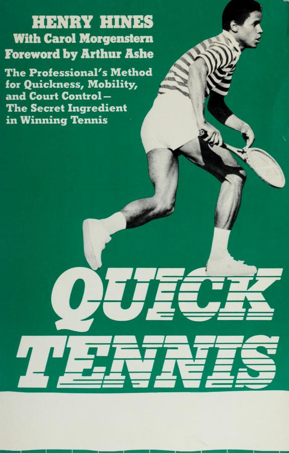
Bản dịch Việt ngữ này chỉ dùng cho mục đích học tập cá nhân, phi thương mại. Bản quyền tác phẩm gốc thuộc về tác giả và nhà xuất bản.
Lời Tựa Của Arthur Ashe & Quần Vợt Là Môn Thể Thao Của Đôi Chân
Lời nói đầu của Arthur Ashe: Cuộc cách mạng bước chân
Tôi gặp Henry Hines lần đầu tiên cách đây vài năm ở Tokyo, khi tôi và Roscoe Tanner quyết định tham dự một trong những cuộc gặp gỡ đường đua chuyên nghiệp của anh ấy. Roscoe và tôi đang chơi trong một giải quần vợt cách đó chỉ 200 thước. Là một sinh viên tốt nghiệp UCLA, tôi theo dõi vận may của các ngôi sao điền kinh Nam California nên cái tên Henry Hines rất quen thuộc với tôi. Tại cuộc gặp, Henry nhìn thấy Roscoe và tôi ở hành lang bên dưới sân vận động, anh ấy tiến đến và tự giới thiệu và mời chúng tôi lên đường đua.
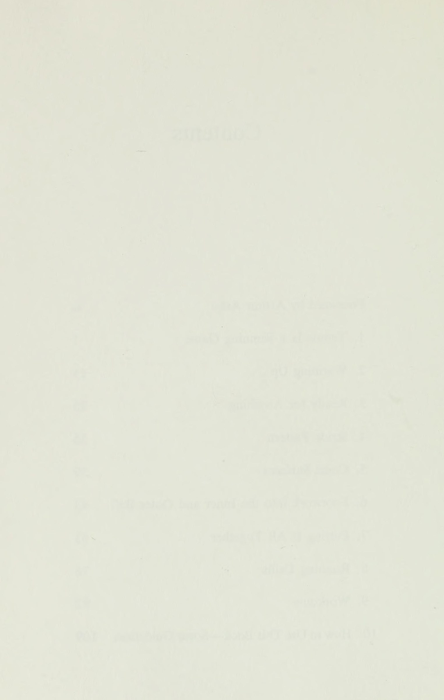
Cách anh ấy leo lên đó khiến chúng tôi kinh ngạc. Chạy dọc theo bề mặt đường đua giữa đường đua và khán đài là một khu vực đi bộ đào sẵn, giống như các chiến hào được sử dụng trong Thế chiến I và II. Đứng trong rãnh, ngực ngang bằng với mặt đường, tôi có thể quan sát toàn cảnh diễn biến trên đường đua. Khi Henry nói, “Nào lên”, tôi nghĩ chúng tôi sẽ đi bộ về bên trái khoảng mười thước tới các bậc thang dẫn lên mặt đường.
. . sai. Henry chỉ cần nhảy một bước là đã ở trên đó. Tôi chưa bao giờ thấy ai làm điều gì như vậy trong đời. Không cần phải nói, Roscoe và tôi đã đi bộ mười mét tới bậc thềm. Sau cuộc gặp, chúng tôi mời Henry đến giải đấu của chúng tôi. Trong khi quan sát một số người trong chúng tôi chơi đùa, anh ấy nhận thấy rằng tất cả chúng tôi đều ix
x Lời nói đầu Tất nhiên là có kỹ thuật vung vợt tốt, nhưng tất cả chúng ta, như anh ấy nói, đã di chuyển rất tệ. Mặc dù trước đây chưa có ai từng nói điều gì như vậy với chúng tôi, nhưng chúng tôi không thể bỏ qua nó vì vừa nhìn thấy hoạt động tốt trông như thế nào. Năm sau, khi đang chuẩn bị cho mùa giải 1975, một nhóm người Mỹ chúng tôi đã mời Henry tới Puerto Rico để huấn luyện. Anh ta suýt giết chết chúng tôi trong bốn ngày, nhưng sau khi cơn đau qua đi, tất cả chúng tôi đều ở trạng thái tốt hơn trước và đều biết cách di chuyển hiệu quả hơn trên sân tennis.
Năm 1975 tình cờ lại là năm tuyệt vời nhất mà CNTT từng có... . Tôi tự hỏi tại sao. Henry, một vận động viên xuất sắc, đã trở thành một vận động viên quần vợt khá thành đạt; trên hầu hết mọi bề mặt mà bạn có thể kể tên, có rất ít quả bóng mà anh ấy không thể chạm tới. Giờ đây Henry tình cờ được trời phú cho những khả năng thể thao mà người phàm trần mà chúng ta không có. Tuy nhiên, là một vận động viên có năng khiếu như anh ấy, kỹ thuật đã đóng một vai trò quan trọng trong việc anh ấy nổi tiếng với tư cách là một vận động viên nhảy xa. Và cũng giống như Henry đã học được những kỹ thuật đó từ huấn luyện viên điền kinh của anh ấy, chúng ta cũng đã học được cách di chuyển trên sân tennis từ Henry Hines.
Những gì có trong cuốn sách này là sản phẩm của ba năm phân tích và chơi quần vợt và mười năm chạy ở cấp độ chuyên nghiệp. Dụng cụ của Henry là đồng hồ bấm giờ và một chiếc khăn tắm. Học sinh của ông có đủ hình dạng, kích cỡ, màu sắc và lứa tuổi. Đối tượng của anh ấy là tiếp cận quả bóng nhanh nhất và hiệu quả nhất có thể. Là một trong những chuyên gia giảng dạy giỏi nhất của chúng tôi, Vic Braden, đã nói: “Những cú đánh tuyệt vời nhất trên thế giới sẽ không tốt chút nào nếu bạn không chạm vào bóng trước”. Các phương pháp của Henry sẽ không thay đổi nét vẽ của bạn hay biến bạn thành Ken Rosewall hay Chris Evert.
Bạn có thể cảm thấy hơi đau, hơi khó thở và trong vài ngày đầu, đầu gối hơi yếu sau chương trình của anh ấy. Nhưng nếu bạn làm theo những gì anh ấy nói, điều đó sẽ mang lại kết quả: sẽ có lúc trên sân bạn cảm thấy phối hợp nhịp nhàng như Olga Korbut và nhanh như Tlie Nastase. Vì vậy, hãy đọc cuốn sách, tuân thủ các hướng dẫn một cách cẩn thận và lần sau khi bạn đóng vai vợ mình, bạn có thể sẽ thắng. ARTHUR R. ASHE, JR.
Chương 1: Tennis là một trò chơi chạy
10 Quần vợt là một trò chơi chạy bộ Vào tháng 4 năm 1973, tôi đến Tokyo cùng với Hiệp hội điền kinh quốc tế để họp mặt. Tôi đã tham gia giải đấu chuyên nghiệp bảy tháng trước đó và đang nhảy xa vòng quanh thế giới trong khi tự hỏi mình sẽ làm gì trong phần đời còn lại của mình. Tôi đọc trên báo rằng một giải quần vợt cũng được tổ chức ở đó và Arthur Ashe đang thi đấu ở đó. Mặc dù chưa bao giờ gặp Ashe nhưng tôi rất ngưỡng mộ anh ấy: anh ấy là người da đen duy nhất chơi quần vợt chuyên nghiệp.
Như anh ấy vừa nói với bạn, anh ấy và Roscoe Tanner đã đến gặp tôi (đến đó một cách khó khăn), và tôi đã đến xem các trận đấu của họ. Chúng tôi trở thành bạn bè và khi trở lại Mỹ, tôi bắt đầu theo dõi sự nghiệp của họ. Khi một trong hai người chơi ở giải đấu ở L.A., ['sẽ có mặt ở đó. Khi họ ở trên TV, tôi sẽ xem họ. Chẳng bao lâu tôi bắt đầu chơi quần vợt. Hầu như ngay từ ngày đầu tiên đến sân quần vợt, tôi đã nhận ra rằng mình có thể tiếp cận quả bóng nhanh hơn họ. Roscoe, khi nhìn thấy tôi di chuyển trên sân, đã nói: “Henry, rất nhiều người trong chúng tôi chuyên nghiệp chắc chắn rất vui vì anh đã tham gia chạy bộ thay vì quần vợt.” Ban đầu, tôi nghĩ lý do tôi nhanh như vậy là vì tôi là một vận động viên điền kinh đã được đào tạo.
Nhưng sau đó tôi thấy những người bạn điền kinh của tôi, những người có thể chạy 100 nhanh hơn tôi rất nhiều, cũng không đạt được những quả bóng đó. Tôi nhận ra rằng tốc độ – vận tốc – không phải là điều quan trọng mà tôi
Z Quick Tennis trên sân tennis; sự nhanh chóng—khả năng phản ứng nhanh chóng—và kỹ thuật cũng vậy. Rõ ràng là Ashe và Tanner, với tất cả kinh nghiệm và sức mạnh của họ, lại thiếu tính cơ động. Khi tôi xem họ [tôi tự hỏi: "Tại sao anh ấy phải lao tới để thực hiện cú đánh thả bóng đó? Tại sao anh ấy lại trượt cú thuận tay rộng như vậy? Tại sao anh ấy lại không chuyển hướng kịp thời?" Tôi bắt đầu ghi chép: "Khi bóng chạm vào anh ấy, anh ấy bật dậy trước khi bắt đầu chạy. Anh ấy chạy bằng gót chân." 1 bắt đầu suy nghĩ tại sao các cầu thủ lại di chuyển không chính xác và phát hiện ra rằng có lẽ họ đã bật dậy khi bắt đầu chạy vì lúc đầu họ đã đứng quá thẳng.
Tôi đã tự mình thử và thấy rằng vị trí thấp hơn cho phép tôi dừng lại, đi, di chuyển và nói chung là nhanh nhẹn hơn. Tôi kết luận rằng nếu họ muốn nhanh hơn, ngừng chạy bằng gót chân và bật lên, họ sẽ phải chơi thấp hơn. Tôi bắt đầu quan sát những người chơi khác, nghiên cứu cách họ thực hiện tất cả các kiểu đánh, ghi lại những gì họ làm sau khi thực hiện cú đánh, phân tích mọi thứ họ đã làm và không làm khi bao quát sân. Tất cả họ đều làm những việc mà tôi thấy không ổn, những việc lớn và nhỏ dường như khiến họ không thể vào đúng vị trí vào đúng thời điểm để làm điều đúng đắn.
Tôi đã bắt đầu chơi năm, sáu giờ mỗi ngày và tôi đang thử mọi thứ mà tôi quan sát được. Bằng cách kết hợp những gì tôi biết về chuyển động hiệu quả trên đường chạy với việc học và chơi tennis, tôi bắt đầu nghĩ ra một số nguyên tắc cơ bản về chuyển động hiệu quả trên sân tennis. Ví dụ, tôi thấy rằng những quả bóng dễ đánh nhất là những quả bóng bay thẳng vào tôi. Khi tôi thực hiện các cú đánh của mình, tôi gần như không có khả năng kiểm soát như khi đứng yên.
Vì vậy, tôi lý luận, nếu bạn có thể hối hả và chuẩn bị cho cú đánh của mình sớm thay vì chỉ chạy theo quả bóng và chạy qua nó, bạn có thể đánh quả bóng như thể nó đến ngay với bạn ngay từ đầu. Mặc dù điền kinh—nhảy xa—là môn thể thao mà tôi hoàn toàn cống hiến vào cuối cấp ba và trong suốt đại học, nhưng nỗ lực để đạt được thành thạo môn thể thao này hay môn thể thao khác dường như luôn là chủ đề chính trong cuộc đời tôi. Đầu tiên là Little League, sau đó là bóng đá, sau đó là judo - tôi đã đạt đai nâu khi mới 12 tuổi.
Tôi đã có một mối tình lãng mạn lâu dài với trò cưỡi ngựa, cưỡi ngựa
Quần vợt là một trò chơi đang chạy của những con bò đực và bò đực Brahma. Tôi cũng tham gia gymkhanas - sự nhanh nhẹn dành cho ngựa. Tôi thậm chí còn dành cả năm để huấn luyện ngựa cho chúng. Nhưng khi tôi phát hiện ra đường đua, mọi thứ khác đều bị đẩy lùi - các môn thể thao khác, trường học, các cô gái, thậm chí cả con ngựa của tôi. Em gái tôi, Pam, một vận động viên chạy nước rút cừ khôi, đã đánh bại tôi trong một cuộc đua trước sự chứng kiến của cả trường, và tôi đã rất tức giận. Tôi lao vào đường đua với niềm khao khát mãnh liệt, trở nên đủ giỏi để thi đấu ở một số nội dung: chạy 100, chạy 1/4 dặm, chạy tiếp sức 440, lao, vượt rào cao, nhảy ba lần và nhảy xa.
Vào năm cuối trung học, rõ ràng sự kiện mang tên tôi là môn nhảy xa. Trong 5 năm tiếp theo, điều duy nhất quan trọng với tôi là trở thành vận động viên nhảy xa giỏi nhất có thể. Giành được huy chương vàng dường như là điều mà cuộc sống hướng tới. Tôi là số một thế giới vào năm 1972, trước Thế vận hội, khi tôi bị thương ở lưng trong một trận đấu sơ bộ. Thế vận hội, bằng cách nào đó, đã diễn ra mà không có tôi. Track đã khiến tôi có định hướng rất chi tiết.
Khi học nhảy xa ở trường đại học, tôi thường nghiên cứu phim của tất cả những vận động viên nhảy xa vĩ đại: Bob Beamon, Ralph Boston, Gail Hopkins, Arnie Robinson. [d chiếu đi chiếu lại các bộ phim hàng giờ liền, phân tích từng chuyển động của từng cơ bắp từ lúc những kẻ đó bắt đầu bước xuống đường băng cho đến lúc họ hạ cánh xuống hố: mắt họ đang nhìn vào đâu; vị trí của đầu, hông, lưng, bụng, ngực, cánh tay, bàn tay, chân và bàn chân trong suốt quá trình chạy, thu thập, cất cánh, bay và hạ cánh.
Tôi hiểu nên tôi biết mọi người đều nhảy một cách hoàn hảo. Tôi sẽ thử mọi thứ tôi quan sát được và sau đó kết hợp vào bước nhảy của mình bất cứ điều gì khiến nó mạnh hơn. Kết quả là tôi cảm thấy như đang ở nhà khi nghiên cứu chuyển động của các vận động viên quần vợt trên sân. Ví dụ: tôi sẽ để ý xem một cầu thủ sẽ bắt đầu bằng chân nào khi một quả bóng chéo sân được đánh vào anh ta. Tôi thấy rằng khi anh ấy dự đoán chính xác, anh ấy thường dẫn đầu bằng cái mà tôi nghĩ là chân phải; khi dự đoán sai, anh ấy thường dẫn sai chân.
Tôi nhận ra rằng nếu người chơi giữ thăng bằng sai cách, họ thường phải đền bù bằng cách làm sai điều tiếp theo. Tôi đã thử nghiệm và
+ Quick Tennis kết luận rằng việc giữ thăng bằng bình phương—không cam kết—sẽ luôn cho phép bạn xoay vòng chính xác ngay từ đầu. Có lúc, tôi hỏi Arthur và Roscoe xem họ có bao giờ giãn cơ và thả lỏng trước khi thi đấu không. Họ trả lời: "Không hẳn. Chúng tôi chỉ đánh nhau để khởi động thôi." Họ đặc biệt ấn tượng trước sự lỏng lẻo và linh hoạt của tôi, và cho rằng đó có lẽ là một trong những lý do chính khiến tôi giữ thăng bằng rất tốt khi di chuyển.
Đồng ý rằng việc giãn cơ trước tiên có thể sẽ giúp họ cảm thấy dễ chịu hơn, dẻo dai hơn và giúp họ có thể làm được nhiều việc hơn với cơ thể, họ yêu cầu tôi tập một số bài tập. Vì mỗi môn thể thao sử dụng các nhóm cơ khác nhau nên mỗi môn thể thao đều yêu cầu khởi động dành riêng cho môn thể thao đó; ngay cả trong điền kinh, vận động viên chạy vượt rào có thể hình khác với vận động viên nhảy xa, vận động viên chạy nước rút khác với vận động viên chạy cự ly. Tôi ngồi xuống và nghĩ: “... chơi thấp hơn... di chuyển... dùng tay .
. .” và nghĩ ra một loạt các bài tập giãn cơ để nới lỏng tất cả các cơ mà người chơi quần vợt sử dụng trên sân. Tôi cũng lập một chương trình tập luyện để tăng cường cơ bắp mà họ đặc biệt cần để duy trì các vị trí mới, thấp hơn. Vì cơ thể không hoạt động mạnh hơn mức bạn bắt nên các cơ này không phát triển vì các cầu thủ đã chơi cao quá lâu. Sau đó, tôi thiết kế một bộ bài tập chạy để giúp các em phát triển sự nhanh nhẹn, linh hoạt, thăng bằng và khả năng kiểm soát hơn.
Sau khi sàng lọc hàng trăm ý tưởng, phát minh, thích ứng, thay đổi, loại bỏ—thử nghiệm là những gì có hiệu quả—cuối cùng tôi đã phát triển một chương trình đặc biệt nhằm cải thiện khả năng di chuyển trên sân quần vợt. Cầu thủ đầu tiên tôi thực sự làm việc cùng là Roscoe Tanner. Chúng tôi đến công viên gần nhà và tập thể dục trên bãi cỏ. Phiên họp đã thành công tốt đẹp. Vào cuối ngày đầu tiên đó, Roscoe đã biết rõ điểm yếu của mình là gì và anh có thể làm gì để khắc phục chúng.
Ví dụ: chúng tôi đã thực hiện Bài tập tám giây, một bài tập chân nhanh giúp anh ấy thấy anh ấy có thể di chuyển bàn chân nhanh như thế nào và cơ bắp chân của anh ấy yếu đến mức nào, đây là điều mà bài tập này mang lại—như bạn sẽ sớm thấy. Tanner kết luận rằng nếu muốn nhanh hơn, anh ấy phải tăng cường sức mạnh cho đôi chân của mình. Anh ấy đã thực hiện phép thử Cân bằng và Chuyển động
Tennis Is a Running Game Góc 5, một bài tập chạy thử thách và cải thiện khả năng giữ thăng bằng, nhiều lần dưới đồng hồ bấm giờ, cho anh thấy cần phải làm gì để kiểm soát thăng bằng khi thay đổi hướng nhanh chóng. Chúng tôi bắt đầu bằng ngón chân, xoay ngang sân, đánh lái bằng tay. Tôi đã tính thời gian để anh ấy làm đúng và làm sai, điều này đã giúp tôi đưa ý tưởng của mình về nhà. Chẳng bao lâu sau, anh ấy bắt đầu luyện tập và áp dụng các kỹ thuật mà chúng tôi đã làm vào ngày hôm đó và sau đó, không lâu sau, bạn bè của anh ấy, những người dù sao cũng là đối thủ của anh ấy trên sân, đã chú ý đến.
Tôi bắt đầu quay phim anh ấy và Ashe và cùng họ giải quyết các vấn đề về chuyển động của họ. Sau đó, vào tháng 1 năm 1975, tôi đến Puerto Rico, nơi tám vận động viên chuyên nghiệp hàng đầu đã tổ chức một trại huấn luyện cho riêng mình trước khi mùa giải bắt đầu. Chúng tôi đã xem qua toàn bộ chương trình của tôi và như Arthur đã nói với bạn, những người đó đã tập luyện thực sự. Tôi bắt đầu làm việc thường xuyên với các chuyên gia quần vợt: tập luyện, quay phim, dạy họ cách thoát khỏi vạch đích nhanh hơn, cách giữ thăng bằng tốt hơn, cách chạy tới bóng hiệu quả hơn.
Trước đây chưa có ai thực sự giúp đỡ họ trong việc di chuyển và họ rất cần điều đó. Khi quần vợt trở nên phổ biến hơn, ngày càng có nhiều giải đấu lớn được tổ chức trên mặt sân chậm hơn để trận đấu hướng về phía khán giả—những người hâm mộ quần vợt thích xem một trận đấu có năm hoặc sáu cú đánh được thực hiện cho mỗi điểm hơn là chỉ một cú giao bóng lớn và một cú vô lê thắng lợi, khi trận đấu kết thúc chỉ trong vài giây. Ngay cả những người giao bóng lớn cũng buộc phải học cách bao quát sân thật tốt vì trên sân đất nện, những cú giao bóng lớn của họ sẽ dội ngược lại họ.
Hơn hết, hiện nay tiền thưởng trong quần vợt chuyên nghiệp quá cao, mức độ cạnh tranh đã tăng lên một tầm cao mới, và các tay vợt bắt đầu chơi quần vợt quyết liệt, nhanh chóng ngay cả trên sân đất nện. Đất sét là một bề mặt khó di chuyển tốt và bất kỳ người chơi nào thực sự không biết cách di chuyển trên đó bây giờ sẽ bị bỏ lại phía sau. Chỉ có những cú đánh tốt thôi là chưa đủ; ngày nay, chính những cầu thủ nhanh chân mới là người giành chiến thắng trong các giải đấu.
Các phòng khám dành cho người nghiệp dư bắt đầu hoạt động sau khi một bài báo về tôi trên World Tennis có kèm theo địa chỉ của tôi. Hàng nghìn người đã viết thư cho tôi với các câu hỏi về khởi động, luyện tập, luyện tập và công nghệ-
6 cú đánh tennis nhanh. Tôi bắt đầu với một vài nhóm nhỏ; mọi việc diễn ra tốt đẹp, và bây giờ, ngoài việc huấn luyện các chuyên gia, tôi còn điều hành các phòng khám kéo dài hai ngày cho 20 đến 30 người nghiệp dư cùng một lúc. Người chơi trẻ, người chơi cũ, người mới bắt đầu và người nâng cao—thường có toàn bộ gam màu trong mỗi phòng khám và mọi người đều học được nhiều điều và có khoảng thời gian vui vẻ. Các phòng khám nghiệp dư của tôi cũng giống hệt như các bài tập của tôi với các chuyên gia, chỉ ít vất vả hơn một chút. Và cuốn sách này giải thích những nguyên tắc tương tự thực sự được sử dụng trong quá trình tập luyện và phòng khám của tôi, ngoại trừ việc tôi không trực tiếp ở đó để theo dõi bạn và tiếp tục như một trung sĩ huấn luyện hay một con gà mái mẹ.
Bạn có bao giờ tự hỏi tại sao, dù cố gắng đến đâu, bạn cũng không bao giờ có thể đạt được cú thuận tay chéo sân của một đối thủ nào đó? Khi bạn đến đó, vung vợt một cách tuyệt vọng, quả bóng chết tiệt vừa mới ở phía sau bạn. Hoặc tại sao, khi bạn đang ở trên lưới và đối thủ của bạn thực hiện một cú đánh trung bình, cuối cùng nó lại vượt qua bạn và bạn đã tập luyện cú vô lê của mình trong nhiều tháng? Bạn có bao giờ thấy mình chỉ đứng trên lưới với hai chân đặt trên lưới, nhìn bóng nảy lên, khi đối thủ của bạn lốp bóng qua đầu bạn, một phần vì bạn không nghĩ mình đủ nhanh để đuổi theo nó và một nửa vì bạn không biết làm thế nào để đến đó?
Bạn đã bao giờ tự hỏi làm thế nào một anh chàng ở sân tiếp theo có thể lấy lại bất kỳ quả bóng nào mà đối thủ của anh ta đánh trúng, bất kể nó tiếp đất ở đâu và làm thế nào anh ta luôn cố gắng trở lại vị trí cho quả bóng tiếp theo? Đây là một cuốn sách hướng dẫn chơi tennis sẽ không cho bạn biết một điều gì về cách cầm vợt hoặc cách đánh bóng. Nó cũng sẽ không cho bạn biết bất cứ điều gì về chiến lược, hay thái độ chiến thắng, hoặc bạn nên làm gì nếu đối tác đánh đôi của bạn không thể bắt vô lê mà nhất quyết đòi cướp lưới.
Điều mà cuốn sách này sẽ dạy cho bạn là cách bao quát sân, cách tiếp cận bóng để bạn có thể bắt đầu tiếp cận tất cả những cú đánh dường như chạm đến ngoài tầm của bạn, những cú đánh mà bạn có thể kiểm soát nếu bạn có thể bắt đầu nhanh hơn và biết cách hạ gục chúng. Sự khác biệt giữa một cú đánh trúng và một cú đánh sai thường không quá một phần giây, được hay mất do kỹ thuật di chuyển. Tôi ngày càng bị thuyết phục hơn
Tennis Is a Running Game 7 mà rất ít người chơi tennis—chuyên nghiệp hay nghiệp dư—biết cách di chuyển nhanh chóng và hiệu quả trên sân tennis. Nhiều người chơi có những cú đánh Pancho Gonzales cổ điển không thể tiếp cận bóng kịp thời để sử dụng những cú đánh đó. Phần lớn thời gian họ hoàn toàn mất vị trí. Những cú đánh đó trông rất đẹp, nhưng quần vợt là một môn thể thao có tính cạnh tranh, không phải một cuộc thi sắc đẹp, và nếu bạn không thể tiếp cận quả bóng kịp thời để chuẩn bị đúng cách thì những cú đánh tốt nhất trên thế giới sẽ không mang lại lợi ích gì cho bạn chút nào.
Vì vậy, tôi dạy phần cuối của trò chơi: động tác bằng chân. [sẽ dạy bạn cách đi từ điểm A đến điểm B trên sân tennis một cách khéo léo, kiểm soát và giữ thăng bằng. Tôi cũng sẽ giúp bạn tránh khỏi những cú đánh của bạn bằng bàn chân và cơ thể để bạn có thể bắt đầu sử dụng chúng một cách tốt nhất. Mục tiêu tổng thể của chương trình này là giúp bạn trở thành vận động viên và vận động viên quần vợt giỏi nhất có thể bằng cách rèn luyện sáu phẩm chất cơ bản: 1. Tính linh hoạt. Bạn không thể chạy tốt nếu bạn quá chật.
Một trong những điều đã giúp Roscoe Tanner - người từng được biết đến không chỉ với những cú giao bóng nhanh như chớp mà còn vì sự chậm chạp khủng khiếp trên sân - trở nên nhanh hơn rất nhiều trong vài năm qua là anh ấy bắt đầu tập thả lỏng các cơ bắp cứng đơ của mình. Đối thủ của anh ấy vẫn không thể tin được khi họ nhìn thấy anh ấy băng qua sân và lấy bóng. Bây giờ anh ấy thậm chí còn chơi một trò chơi khác: quần vợt theo tỷ lệ phần trăm. Bây giờ anh ấy có thể di chuyển, anh ấy có đủ tự tin để chờ đợi cú đánh phù hợp và biết rằng mình có thể ở lại sân miễn là cần thiết.
Để trở thành một tay vợt nhanh nhẹn hơn, thể thao hơn, bạn phải linh hoạt. Bạn sẽ đặt ra những yêu cầu đối với cơ thể mình mà có lẽ trước đây nó chưa từng trải qua. Nếu cơ, dây chằng và gân của bạn không khập khiễng và duỗi ra, bạn sẽ không thể khiến chúng làm những gì bạn muốn và bạn có thể khiến bản thân bị thương khi cố gắng. 2. Nhanh nhẹn. Có một số bài tập trong cuốn sách này sẽ cho bạn thấy bạn nhanh nhẹn hay không nhanh nhẹn như thế nào. Thực hiện chúng sẽ khiến bạn nhanh nhẹn hơn—có thể không giống mèo lắm, nhưng chắc chắn có khả năng phản ứng trên sân tốt hơn theo cách hoàn thành công việc.
8 Quần vợt nhanh 3. Cân bằng. Rất nhiều người chơi gặp vấn đề với khả năng giữ thăng bằng - họ dồn quá nhiều trọng lượng của mình theo hướng này hay hướng khác và thường bị mắc sai chân. Trong cuốn sách này có một bài tập có thể cải thiện khả năng giữ thăng bằng của bạn đến mức bạn có thể quay 360 độ ở tốc độ tối đa mà không gặp vấn đề gì. Vì đây là một sự thay đổi hướng triệt để hơn nhiều so với những gì bạn cần thực hiện trên sân quần vợt, nếu bạn có thể thực hiện đúng thao tác này, bạn sẽ gặp rất ít khó khăn với những thay đổi hướng ít hơn— chẳng hạn, nhanh chóng sang một bên để đón một quả bóng đang trên đường đi xuống.
4. Động tác bằng chân. Hầu hết các cầu thủ không biết phải làm gì với đôi chân của mình khi đi bóng—bắt đầu như thế nào, dẫn đầu bằng chân nào, chạy bằng phần nào của bàn chân, bước sải chân dài bao nhiêu. Tôi thấy mọi người luôn tiếp đất bằng gót chân và mất thăng bằng, hoặc chạm bóng bằng chân sai và sau đó phải lao tới dữ dội chỉ để vợt trúng vào nó. Động tác chân không tốt chứ không phải cú đánh không tốt có lẽ là nguyên nhân chính gây ra lỗi trên sân tennis.
Mọi người cố gắng thực hiện cú đánh của mình bằng bàn chân và cơ thể không đúng vị trí, sau đó họ đánh trượt và đổ lỗi cho cú đánh thuận tay hoặc trái tay của họ, khi vấn đề thường nằm ở phía dưới. Ashe và Pasarell ước tính rằng việc vào đúng vị trí để đánh bóng quyết định 70% thời gian của trận đấu. Tất cả người chơi đều có khả năng di chuyển hiệu quả hơn nhiều nếu họ nỗ lực và có niềm tin vào bản thân. Có một số cầu thủ có năng khiếu - rất ít - di chuyển tốt một cách tự nhiên mà không cần suy nghĩ nhiều về điều đó; nhưng tất cả chúng ta không thể là Nastases và Goolagong.
Thật không may, hầu hết các chuyên gia giảng dạy đều không dạy động tác bằng chân. Ưu điểm dạy đánh, không chạy; hầu hết họ không biết đủ về chạy để giúp học trò của mình chạy nhanh hơn trên sân. Tôi nói đi nói lại với những người trong phòng khám của tôi, họ phàn nàn rằng các chuyên gia giảng dạy của họ không bao giờ đi xa hơn về động tác bằng chân ngoài việc nói “Bước vào bóng”. Không có gì về cách bắt đầu nhanh chóng, cách dừng lại và chuẩn bị, cách di chuyển trên sân, cách phục hồi.
Hầu hết người chơi đã vượt qua giai đoạn đầu của trò chơi đều có thể xử lý những quả bóng trong thân người (inner ball)—những quả bóng bay thẳng đến họ hoặc
Tennis Is a Running Game 9 ở gần họ, trong phạm vi mà tôi gọi là phạm vi thoải mái của họ—mà không gặp nhiều khó khăn. Vấn đề bắt đầu với những quả bóng ngoài tầm (outer ball), những quả bóng mà họ phải chạy xuống. Đó là lúc họ bắt đầu lao tới, kéo lê và lảo đảo khắp sân. Cuốn sách này sẽ giới thiệu cho bạn các kỹ thuật di chuyển cơ bản, cả đối với những quả bóng ngoài tầm (outer ball), những quả bóng mà bạn có thể thường chạy qua bây giờ, và những quả bóng trong thân người (inner ball), là những cú đánh ăn bánh mì của bạn. 5. Nhanh chóng.
Những người chơi nhanh, những người di chuyển tốt, là những người giành chiến thắng trong các trận đấu với các đồng nghiệp của họ và thường có thể ở lại sân với những người chơi có cú đánh vượt trội. Trong quần vợt chuyên nghiệp, như chính các tay vợt sẽ nói với bạn, rất ít tay vợt chậm chạp có thể giành chiến thắng trong các trận đánh đơn. Nói nhanh, như tôi đã nói trước đó, không có nghĩa là nhanh; có một sự khác biệt lớn. Tôi biết một số vận động viên chạy nước rút có thể chạy hàng trăm trong 9.1 nhưng thường không thể thực hiện cú đánh rơi vì họ không đủ nhanh.
Sự nhanh nhạy là vấn đề xuất phát trong những khoảng thời gian ngắn với tốc độ nhanh, đó là điều bạn cần để đạt được những cú đánh rơi, lốp bóng và các quả bóng khác ngoài phạm vi của bạn. Đây thực sự là giai đoạn đầu tiên bạn phải trải qua trên con đường đạt được tốc độ tối đa của mình, nhưng trong môn quần vợt, bạn không cần phải vượt qua giai đoạn đầu tiên đó. Một phần lớn của sự nhanh chóng là phản xạ. Tôi có một vài bài tập để giúp bạn mài giũa kỹ năng của mình. 6. Điều hòa. Hầu hết người chơi quần vợt đều không có phong độ tốt.
Cơ thể của nhiều người bỏ cuộc chỉ sau một hoặc hai hiệp. Rất nhiều cầu thủ đã từng làm việc cùng tin rằng họ có vóc dáng cân đối cho đến khi chúng tôi bắt đầu tập luyện, khi họ bắt đầu thở hổn hển, thở hổn hển, rên rỉ, phàn nàn và tìm ra ý nghĩa của việc thực sự có vóc dáng cân đối. Đặc biệt đối với nhiều phụ nữ tại phòng khám của tôi, đó là một điều hiển nhiên rằng để nhanh chóng bạn cần phải khỏe mạnh, nghĩa là cơ thể phải săn chắc. Điều hòa—sức mạnh hơn và sức bền tốt hơn—là một trong những kết quả cuối cùng của chương trình, một kết quả rất quan trọng vì nó sẽ cho phép bạn thực hiện ba hiệp nhanh mà vẫn duy trì được hiệu quả cao trên sân.
Rất nhiều trận đấu thắng và thua ngay tại thời điểm một người chơi bắt đầu đánh nó.
10 Quần vợt nhanh Cuốn sách này có thể giúp bạn cải thiện kỹ năng chơi của mình trong sáu lĩnh vực này. Nó có thể đẩy trò chơi tổng thể của bạn lên một hoặc hai bậc và mang lại cho bạn lợi thế lớn so với anh chàng hoặc cô gái có cú đánh tốt như bạn. Nếu bạn giống như hầu hết mọi người, cảm giác hài lòng khi ra sân ít nhất phụ thuộc nhiều vào việc chiến thắng bản thân cũng như chiến thắng đối thủ. Biết cách che sân hiệu quả và biết mình có sức mạnh, sức chịu đựng để chơi hết mình cho đến khi trận đấu kết thúc không chỉ giúp bạn trở thành một tay vợt tự tin, thành thạo hơn; nó cũng sẽ làm cho việc chơi tennis trở thành một trải nghiệm phong phú hơn cho bạn.
Một người bạn của tôi đã từng tóm tắt rất hay khi chúng tôi thảo luận về niềm vui của quần vợt: “Việc sở hữu cơ thể của chính mình trên sân sẽ giúp đưa quần vợt vào danh sách quý giá những điều bạn làm tốt.”
Chương 2: Khởi động và điều hòa thể thao
20 Khởi động Đôi khi bạn phải mất cả hiệp trước khi thực sự nhập cuộc? Nếu vậy, tôi nghĩ tôi biết vấn đề của bạn là gì. Những người chơi quần vợt hầu như không bao giờ khởi động đúng cách trước khi thi đấu, không chỉ những người nghiệp dư mà cả những chuyên gia hàng đầu. Đối với hầu hết người chơi, “khởi động” có nghĩa là tập luyện trong mười phút, nếu lâu như vậy; thực hành một vài cú vô lê, giao bóng và đánh đầu; và sau đó có người nói, "Bạn đã sẵn sàng chưa? Lên hay xuống?" Thông thường, những người chơi này sau đó bị nhốt vào một loại trò chơi không kiểm soát được, thiếu thể thao, không mong muốn mà tâm trí họ đang thúc giục, “Đi thôi!
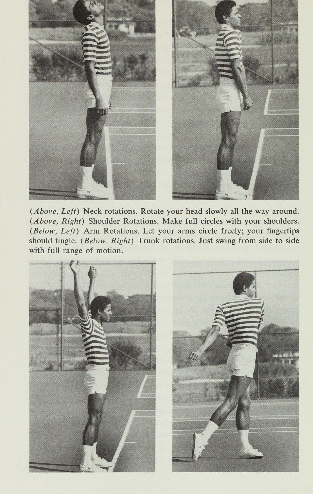
Đi thôi!” nhưng cơ thể họ đang ủng hộ, "Này, chờ đã. Chúng ta hãy đợi một phút ở đây cho đến khi chúng ta sẵn sàng." Đôi khi những người chơi không chuẩn bị sẽ bị kéo gân kheo, cơ háng hoặc cơ lưng và phải dành phần còn lại của mùa giải để xem người khác chơi quần vợt. Hầu hết họ ra về mà không bị thương, chỉ mất rất nhiều điểm một cách không cần thiết vì cơ thể vẫn còn lạnh. Có rất nhiều cơ khác liên quan đến việc chơi quần vợt ngoài các cơ ở cánh tay và lưng, đó là những cơ duy nhất bạn giãn ra nếu khởi động bằng cách đánh bóng.
Một loạt các bài tập giãn cơ và thả lỏng tốt sẽ mang lại ba điều rất quan trọng cho bạn: giúp bạn sẵn sàng hút thuốc ngay từ đầu, giảm nguy cơ bị thương-
72 Tự chơi Quần vợt nhanh, và nếu bạn thực hiện chúng thường xuyên hoặc ít hơn, chúng sẽ giúp bạn linh hoạt hơn—nói cách khác, cải thiện độ đàn hồi của cơ, gân và dây chằng—điều này rất quan trọng nếu bạn muốn thực sự di động trên sân quần vợt. Chẳng hạn, Tanner nhận thấy rằng anh ấy có thể đổi hướng nhanh hơn nhiều kể từ khi thực hiện những bài tập này. Nếu bạn chật, bạn sẽ di chuyển lúng túng. Nếu bạn thả lỏng và duỗi ra, bạn sẽ di chuyển linh hoạt hơn.
Rất ít người thực sự linh hoạt mà không cần tập luyện, và bất kỳ ai tập luyện đều có thể linh hoạt hơn, bất kể tuổi tác hay tình trạng cơ thể hiện tại. Mặc dù độ linh hoạt giảm dần theo tuổi tác, tôi nhận thấy rằng ngay cả hầu hết các chàng trai và cô gái trong các đội quần vợt ở trường đại học mà tôi từng làm việc cùng đều cực kỳ chặt chẽ. John Andrews, một chuyên gia trẻ mà tôi làm việc cùng, nhận thấy rằng anh ấy đặc biệt cần phải giãn cơ khi tập luyện, vì đó là lúc cơ bắp của anh ấy thực sự căng lên.
Nói cách khác, các bài tập giãn cơ dành cho tất cả mọi người—trẻ em, người trẻ, người cao tuổi, vận động viên chuyên nghiệp và tất cả mọi người ở giữa. Khởi động là quá trình chuyển từ nghỉ ngơi sang hoạt động; điều đó là tự nhiên, cần thiết và mang lại cảm giác dễ chịu. Khi một con mèo thức dậy sau một giấc ngủ ngắn, nó không bước một bước nào cho đến khi nó duỗi thẳng toàn bộ chiều dài cơ thể, từ trước ra sau. Bạn có thể làm điều tương tự ở một mức độ nào đó khi thức dậy vào buổi sáng. Nhưng những người chơi quần vợt chưa bao giờ được dạy cách giãn cơ một cách có hệ thống, mặc dù trước một môn thể thao đòi hỏi khắt khe như quần vợt thì điều đó gần như là cần thiết.
Cho đến gần đây, những cầu thủ duy nhất từng bận tâm đến điều đó là những người đang điều trị chấn thương, như Bob Lutz và Stan Smith. Cơ bắp hoạt động bằng cách co bóp và thư giãn. Khi bạn bắt đầu di chuyển một cơ không hoạt động, một vài cơn co thắt và giãn ra đầu tiên của nó sẽ yếu đi và không đều - đó là lý do tại sao một vài cú đánh đầu tiên bạn đánh thường thiếu sự phối hợp. Bên cạnh việc tăng nhiệt độ cơ bắp theo đúng nghĩa đen và tăng lượng máu và oxy cung cấp cho chúng, việc khởi động cũng làm tăng sức mạnh của các cơn co thắt và thư giãn.
Đó là cách nó có thể giúp bạn phối hợp tốt hơn khi bắt đầu chơi. Một hoạt động gắng sức, đột ngột, không chuẩn bị trước như chạy có thể khiến cơ bị lạnh quá nhanh và làm tăng nguy cơ chấn thương cơ. Nó không khác mấy so với những gì xảy ra với taffy nếu bạn thử
Khởi động I3 để giãn cơ quá nhanh. Bây giờ họ đã ở tuổi ba mươi, rất nhiều vận động viên chuyên nghiệp thực hiện động tác giãn cơ này hàng ngày, ngay cả trong những ngày họ không thi đấu, vì nếu không cơ bắp của họ sẽ căng cứng và có thể khiến họ gặp rắc rối. Trên thực tế, một người đàn ông đã đến phòng khám của tôi, người bị đau đầu gối do chấn thương bóng đá cũ, đã có thói quen tập thể dục thường xuyên trước khi chơi tennis và nhận thấy rằng đầu gối của anh ta không còn gây ra vấn đề gì nữa khi chơi.
Chỉ một lần anh ấy không khởi động được, và đầu gối của anh ấy lại bắt đầu khiến anh ấy khó chịu. Bây giờ anh ấy là một tín đồ. Mặc dù tôi không thể hứa với bạn về điều kỳ diệu gần như đó, nhưng tôi biết rằng một cơ hoặc dây chằng được làm nóng, căng ra sẽ ít bị chấn thương hơn nhiều so với một cơ thể lạnh, căng cứng và buồn ngủ. Ngẫu nhiên, hầu hết những người tập thể dục trước khi thi đấu chỉ bận tâm đến nó vào những ngày lạnh, đó là một sai lầm lớn và là lý do khiến nhiều vận động viên bị căng cơ khi thời tiết nóng hơn là khi trời lạnh. Nhiệt độ bên ngoài không liên quan gì đến nhiệt độ bên trong của bạn, đó là điều chúng tôi quan tâm.
Làm ấm cơ thể có thể dễ dàng hơn khi nhiệt độ bên ngoài là 94 độ, nhưng nó cũng quan trọng như khi nhiệt độ là 49 độ. Tôi đảm bảo điều đó: mười lăm phút tập giãn cơ trước khi bắt đầu đánh sẽ giúp bạn và trận đấu của bạn tốt hơn rất nhiều so với mười lăm phút chỉ tập trung lại. Ngày nay, ngày càng có nhiều chàng trai và cô gái trong giải đấu chuyên nghiệp tập trung lại trước các trận đấu chỉ đơn giản là để rèn luyện các cú đánh của họ một chút—họ đã khởi động xong ngoài sân đấu.
Rất nhiều người trong số họ từng bắt đầu khá chậm; họ cảm thấy họ cần ba hoặc bốn trận đấu chỉ để thư giãn. Bây giờ họ đã sẵn sàng để giành lợi thế trước đối thủ ngay từ đầu trận đấu. Ngoài ra, hiện nay hầu như có các giải đấu diễn ra hàng tuần trong năm, nên người chơi ngày càng bị tổn thương nhiều hơn - cùi chỏ do quần vợt, căng cơ, bong gân. Khởi động cung cấp cho họ một số bảo hiểm chống lại chấn thương. Vì vậy, ngay cả khi bạn nghi ngờ, hãy thử. Hãy nghĩ theo cách này: nếu bạn đã thuê sân trong một giờ, tại sao lại lãng phí một phần thời gian khởi động trên sân?
Tôi biết ít nhất một người phụ nữ tập thể dục ở nhà ngay trước khi cô ấy đi chơi quần vợt. Một sinh viên tốt nghiệp phòng khám khác, một cô gái mười lăm tuổi, chơi số một trong đội trung học của mình, đã dạy các đồng đội của mình các động tác khởi động, và bây giờ cả đội thực hiện chúng một cách tôn giáo trước khi tập luyện, và tất nhiên là trước các trận đấu.
14 Quick Tennis Gần đây, tôi đang nói chuyện với một người đàn ông bị chấn thương bóng đá cũ, anh ta nói với tôi, "Một vài người chơi cùng tôi cười nhạo tôi vì đã tập khởi động. Hãy để họ cười. Tôi vừa vô địch giải C lần đầu tiên tại câu lạc bộ của mình." Có thể bạn sẽ nhận ra một số bài tập này. Tôi chọn chúng vì chúng cùng nhau hoàn thành công việc khởi động và kéo căng tất cả các cơ, gân và dây chằng mà bạn sử dụng trong quần vợt. Thực hiện chúng theo đúng trình tự, bởi vì bằng cách đó, trong các bài tập trước, bạn sẽ làm nóng các cơ mà bạn căng ra trong các bài tập sau.
Hãy hít thở đều đặn và đi theo tốc độ của riêng bạn. Đừng cố ép cơ thể bạn phải có hình dáng; dỗ dành nó; và đừng cảm thấy nản lòng nếu ban đầu bạn không thể đảm nhận tất cả các vị trí chính xác - hầu hết các chuyên gia mà tôi đã dạy họ cũng vậy. Bạn sẽ trở nên linh hoạt hơn khi bạn duy trì nó. Giống như mọi thứ khác, bạn sẽ nhận được kết quả từ việc tập luyện những gì bạn đã bỏ ra. Việc khởi động sẽ giúp bạn tốt hơn rất nhiều nếu bạn thực hiện chúng với đầy đủ phạm vi chuyển động, nghĩa là giãn cơ cho đến khi bạn đạt mức giãn tối đa mà một cơ cụ thể cho phép.
Duỗi cơ từ từ và giữ căng trong vài giây vừa an toàn vừa hiệu quả hơn so với việc lắc lư lên xuống. Bạn chỉ đang chuốc lấy rắc rối nếu cố gắng làm quá nhiều và quá nhanh. Tập trung nhiều hơn vào chất lượng hơn là số lượng. Tôi đã chỉ ra số lần bạn nên lặp lại mỗi bài tập nhưng chỉ sử dụng số liệu của tôi làm hướng dẫn; chỉ có bạn mới biết khi nào bạn cảm thấy đủ thoải mái. Lúc đầu, bạn có thể thấy những bài tập này mất nhiều thời gian hơn bạn muốn—nửa giờ hoặc hơn—nhưng khi bạn khỏe hơn và quen hơn với việc thực hiện chúng, bạn sẽ thấy thời gian của mình giảm xuống còn 12 hoặc 15 phút.
Cơ bắp của bạn căng ra khi bạn chơi, vì vậy giữa các điểm, giữa các trận đấu, bất cứ khi nào có thời gian nghỉ trong hành động, hãy thực hiện giãn cơ nhiều hơn. Bất cứ điều gì cảm thấy căng, hãy kéo nó ra trở lại. Sau khi chơi hai hoặc ba hiệp, bạn có thể muốn nghỉ ngơi khoảng nửa giờ. Trước khi trở lại sân, hãy thả lỏng cơ thể một lần nữa. Điều này sẽ giúp bạn tránh được cảm giác uể oải mà người chơi thường có khi họ tiếp tục thi đấu sau một thời gian dài nghỉ ngơi.
Khởi động 1) Tôi nhận ra rằng có những lúc bạn không có mười lăm phút để khởi động ngoài sân. Bạn đã đặt sân từ 2 đến 3 và lúc đó là 1:55. Trong trường hợp đó, chỉ cần tập trung vào cánh tay và chân của bạn: thực hiện các động tác xoay cánh tay và Bài tập Vượt rào. Đừng giãn cơ quá nhiều nếu bạn chưa đổ mồ hôi trước và hãy chơi dễ dàng ngay từ đầu: cố gắng không dừng quá ngắn và không thực hiện các cú đánh hoặc việc luyện tập của bạn sẽ giao bóng mọi thứ bạn có.
Sau đó, giữa các điểm, giữa các trận đấu, bất cứ khi nào bạn có một phút, hãy thực hiện thêm vài lần giãn cơ. Nói cách khác, khi bạn không có thời gian trước đó, hãy khởi động trong trận đấu, càng sớm càng tốt. Tuy nhiên, hãy nhận ra rằng trận đấu càng quan trọng với bạn thì bạn càng phải vào sân với cả hai bên đều tỏa sáng! 1. Đổ mồ hôi. Điều đầu tiên chúng ta làm là chạy bộ xung quanh một chút hoặc chạy tại chỗ nếu không gian có hạn, bước những bước ngắn, chậm và thoải mái.
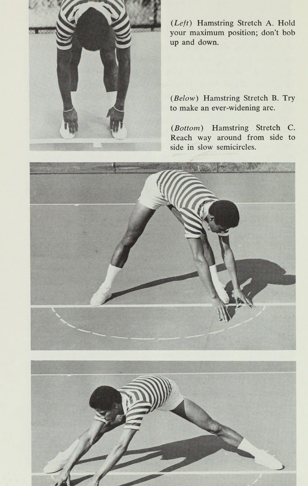
Không có số vòng cố định; cứ chạy cho đến khi bạn đổ một chút mồ hôi dưới cánh tay. Một người phụ nữ mà tôi biết chạy quanh sân bốn lần. Chạy bộ sẽ không giúp bạn có được vóc dáng cân đối và không khiến bạn mệt mỏi. Nó chỉ nhằm mục đích giúp tim bạn bơm máu và tuần hoàn hoạt động - giống như làm nóng động cơ đang nguội. 2. Xoay cổ. Chúng tôi bắt đầu từ cổ, đi xuống bàn chân và thả lỏng mọi thứ ở giữa. Rất nhiều cơ kết nối với cánh tay, lưng và chân của bạn bắt đầu ở cổ, đây thực sự là phần trên cùng của cột sống và là trung tâm căng thẳng của nhiều người.
Đây là nơi thích hợp để bạn bắt đầu thả lỏng toàn bộ cơ thể. Đứng hai chân rộng bằng vai, đặt hai tay sang hai bên và thư giãn. Bây giờ hãy xoay đầu của bạn từ từ khắp nơi, với đầy đủ phạm vi chuyển động. Tiếng nứt mà bạn có thể nghe thấy cũng giống như những gì xảy ra khi bạn bẻ khớp ngón tay và không có gì phải lo lắng. Trong khi cúi đầu xuống, ấn cằm vào ngực một chút để kéo cơ lưng lên. Thông thường, vòng sang trái năm lần, sau đó năm vòng sang phải sẽ hoàn thành công việc, nhưng nếu bạn đặc biệt căng thẳng hoặc chỉ chờ đợi xung quanh, hãy làm điều mà Bob Lutz gọi là “360 độ trên cổ” cho đến khi bạn cảm thấy dễ chịu.
(Trên, Bên trái) Xoay cổ. Xoay đầu của bạn từ từ khắp nơi. (Ở trên, bên phải) Xoay vai. Tạo vòng tròn đầy đủ bằng vai của bạn. (Dưới, bên trái) Xoay cánh tay. Hãy để cánh tay của bạn vòng tròn tự do; đầu ngón tay của bạn sẽ ngứa ran. (Dưới, phải) Xoay thân cây. Chỉ cần xoay từ bên này sang bên kia với đầy đủ các chuyển động.
Khởi động 17 3. Xoay vai. Những động tác này giúp nới lỏng lưng và vai của bạn, thường là vùng rất căng và yếu. Trong cùng tư thế mà bạn sử dụng để xoay cổ, hãy xoay vai theo vòng tròn. Nâng chúng lên cao nhất có thể, đẩy chúng ra sau hết mức, sau đó hạ xuống thấp nhất có thể và vòng về phía trước xa nhất có thể. Lên, lùi, vòng và xuống, mạnh mẽ. Thực hiện chuyển động tròn chứ không phải hình vuông. Đừng đẩy đầu về phía trước và giữ cho cổ của bạn thư giãn.
Nếu bạn thấy mình hơi mệt mỏi vì những điều này, đó là do cơ delta của bạn yếu và nếu bạn yếu ở phần đó, bạn có thể tưởng tượng điều gì đang cản trở một số cú đánh của bạn— đặc biệt là cú đánh qua đầu và giao bóng của bạn. Bản thân tôi cảm thấy hơi mệt mỏi với những điều này và rất nhiều người chơi đã từng làm việc cùng cũng vậy, vì vậy đừng cảm thấy như thể bạn đang mất phong độ một cách vô vọng. Thực hiện nhanh hai mươi bước tiến, hai mươi bước lùi—khoảng 20 phần mười giây. 4. Xoay cánh tay.
Dành cho vai, cánh tay và lưng của bạn. Hai chân dang rộng bằng vai, duỗi thẳng hai tay ra trước mặt. Xoay chúng mạnh mẽ theo vòng tròn rộng, lên, lùi và xung quanh. Đừng “tăng cường” cánh tay của bạn; hãy để chúng đu đưa tự do, bởi vì việc dồn ép chúng xung quanh sẽ chỉ làm chúng căng thẳng hơn và điều chúng tôi đang phấn đấu là quyền tự do chuyển động. Nếu bạn thực hiện đúng, bài tập này sẽ khiến các đầu ngón tay của bạn râm ran vì máu đang được bơm vào chúng.
Làm hai mươi lăm tiến, hai mươi lăm lùi. 5. Xoay thân cây. Để nới lỏng vùng lưng và hông của bạn. Đứng hai chân rộng bằng vai và đẩy nhẹ hông về phía trước. Chỉ cần xoay người từ bên này sang bên kia, để cánh tay của bạn lơ lửng tự do. Đừng dừng lại đột ngột; dễ dàng vào các điểm dừng. Khi bạn xoay người sang phải, hãy để bàn chân trái nhấc lên bằng ngón chân và ngược lại, điều này sẽ giúp bạn chuyển động tự do hơn. Làm mười theo mỗi hướng. 6. Căng gân kheo.
Động tác này được thiết kế để kéo căng cơ phía sau đùi, gân kheo của bạn. Kéo gân kheo là một chấn thương thể thao phổ biến.
(Trái) Căng gân kheo A. Giữ vị trí tối đa của bạn; đừng lắc lư lên xuống. (Dưới đây) Căng gân kheo B. Cố gắng tạo một vòng cung ngày càng mở rộng. (Dưới cùng) Căng gân kheo C. Đưa tay từ bên này sang bên kia theo hình bán nguyệt chậm.
Khởi động 19 a. Đặt hai chân gần nhau hơn một chút so với chiều rộng bằng vai, hãy duỗi tay xuống hết mức mà chân cho phép bạn đi mà không cần cong đầu gối hoặc căng cơ — chỉ hơi quá mức thoải mái nhưng không đến mức đau đớn. Bạn nghĩ rằng ban đầu bạn chưa đạt được mức độ như mong muốn? Chà, Ray Moore, Charles Pasarell, Roscoe Tanner, và một số chàng trai và cô gái khác trong giải đấu chuyên nghiệp có lẽ đã không sa sút như bạn bây giờ.
Một cầu thủ gần như không thể quỳ xuống. Với việc luyện tập thường xuyên, bạn sẽ có thể chạm tay xuống đất. Cúi xuống và giữ nguyên vị trí của bạn trong số sáu, sau đó đứng lên. Hãy thư giãn. Cố gắng đi xuống xa hơn có lẽ một phần tư inch hoặc nửa inch mỗi lần, hoặc nếu lần trước bạn lười biếng, hãy cố gắng đi xuống xa hơn cả inch. Mỗi lần hãy tăng tiến bộ một chút, không nhiều hơn mức bạn có thể thực hiện và đừng lắc lư lên xuống. Nếu bạn cố gắng làm quá nhiều và nhanh, bạn sẽ làm tổn thương chính mình; chúng tôi đang cố gắng giúp bạn ra sân nhanh hơn chứ không phải nằm trên giường.
Bốn trong số này sẽ giúp bạn đủ dẻo dai cho giai đoạn tiếp theo. b. Trải rộng bàn chân của bạn rộng hơn khoảng một foot. Giữ đầu gối thẳng, cúi xuống và đưa hai tay ra xa nhất có thể về phía trước, với các ngón tay chạm đất. Bây giờ, xoay cơ thể của bạn hết cỡ sang trái, giữ các ngón tay của bạn trên mặt đất, sau đó xoay người càng xa càng tốt về phía trước và vòng sang bên phải. Vẽ một đường tưởng tượng giữa hai gót chân của bạn, kéo dài nó ra một vài feet và cố gắng đi từ điểm đó ở bên này sang điểm kia ở phía bên kia, mỗi lần vươn về phía trước xa hơn một chút, tạo thành một vòng cung hình bán nguyệt ngày càng mở rộng.
Hãy đánh dấu trước mặt bạn để bạn có thể cố gắng vượt qua nó một chút. Một phần tư inch ở đây, một phần tư inch ở đó, sau này mang lại lợi ích lớn trên sân. Tôi không cố gắng biến bạn thành Kathy Rigby hay Nadia Comaneci, chỉ giúp bạn có đủ khập khiễng để làm những gì bạn phải làm trên sân. Trả giá ngay bây giờ và nhận được lợi ích sau này. c. Bây giờ dang rộng hai chân của bạn sang hai bên càng xa càng tốt. Chỉ cần lấy chúng và nhét chúng ra khỏi đó.
Thực hiện tương tự ở tư thế này: vươn tay từ bên này sang bên kia
(Trái) Căng cơ háng. Đẩy ra ngoài bằng khuỷu tay của bạn. (Dưới) Cầu. Cố gắng tiếp cận xa hơn một chút và xung quanh mỗi lần. (Dưới) Bài tập vượt rào. Duỗi thẳng chân mà không nhấp nhô.
Khởi động theo hình bán nguyệt chậm. Vâng, đó là nơi mà nỗi đau xuất hiện, đó là nơi bạn cảm thấy không thoải mái, không phối hợp và vụng về, nhưng đó là nơi có lợi, đó là nơi bạn đạt được tiến bộ, tiến xa hơn một chút so với mong muốn của bạn. Chỉ cần thực hiện một vài động tác ở đây và sau đó thoát khỏi vị trí này vì hiện tại bạn đang đặt rất nhiều căng thẳng cho bản thân và tất cả những gì chúng tôi đang cố gắng làm là bắt đầu giúp bạn thoải mái hơn một chút. 7. Căng cơ háng. Có lẽ chấn thương cơ chân phổ biến nhất không phải ở gân kheo hay cơ tứ đầu mà là ở cơ háng.
Người ta trượt chân, duỗi chân ra quá xa rồi kéo lại. Khu vực này phải chịu áp lực rất lớn khi chạy và có lẽ cũng là khu vực bị bỏ qua nhiều nhất khi kéo giãn. Bạn không muốn cơ háng bị kéo, và chồng, vợ, bạn trai hay bạn gái của bạn cũng vậy. Hai chân cách nhau khoảng một foot hoặc rộng hơn vai, ngồi xổm xuống giữa hai chân và hóp mông vào. Bạn nên đặt bàn chân phẳng. Đặt khuỷu tay của bạn vào phần uốn cong bên trong của đầu gối và đẩy khuỷu tay ra ngoài.
Giữ trong sáu giây. Làm ba lần. : 8. Cầu. Giữ nguyên tư thế ngồi xổm, chuyển trọng lượng sang trái, sau đó duỗi chân phải. Chân của bạn phải tạo thành một góc chín mươi độ. Ban đầu bạn có thể thấy việc này khó thực hiện; bạn có thể giữ thăng bằng tốt hơn nếu đặt gót chân ngay dưới mình. Bây giờ, hãy duỗi hai tay ra phía trước, các ngón tay chạm nhẹ xuống đất và xoay cơ thể theo hình vòng cung hình bán nguyệt, đặt ngực lên trên chân thẳng, sau đó qua chân cong.
Mỗi lần cố gắng vươn xa hơn một chút và vòng quanh. Làm việc để duy trì sự cân bằng của bạn; nó sẽ cải thiện nhờ thực hành. Làm bốn mỗi cách. Sau đó chuyển trọng lượng của bạn sang ngang, giữ càng thấp càng tốt và đảo ngược chân, thực hiện bài tập với chân trái duỗi thẳng. Thực hiện mỗi chân hai lần. 9. Bài tập vượt rào. Nếu bạn chỉ có thời gian để thực hiện một bài tập thì đây chính là bài tập đó. Đây gần như là bài tập giãn cơ tốt nhất mà con người từng nghĩ ra cho đôi chân của bạn vì nó tác động lên toàn bộ chân của bạn — trên, dưới, trước và sau.
(Trên cùng) Khi bạn có thể “ăn cỏ”, bạn thực sự rất lỏng lẻo. (Giữa) Cố gắng đặt ngực lên chân cong của bạn, nhưng lúc đầu đừng mong đợi đến gần. (Dưới cùng) Nằm thẳng lưng để duỗi cơ tứ đầu.
Tư Thế Sẵn Sàng Vượt Trội & Mô Thức Sải Chân Đỉnh Cao
Chương 3: Sẵn sàng cho mọi việc: Tư thế thể thao
Khởi động 23 Sử dụng khăn hoặc thảm nếu bạn khởi động trên bề mặt cứng. Ngồi xuống. Mở rộng chân phải và uốn cong chân trái bên cạnh bạn, tạo thành một góc 90 độ với chân. Đưa tay xuống qua chân phải, duỗi người hết mức có thể và giữ ở mức căng tối đa mà không nhấp nhô trong số sáu. Sau đó đi lên. Làm điều này bốn lần, cố gắng kéo dài hơn một chút mỗi lần. Một phần inch là tiến bộ tốt. Cuối cùng, bạn sẽ có thể “hôn đầu gối của mình”, dù bạn có tin hay không.
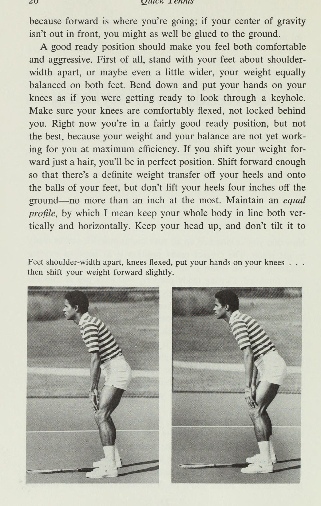
Nếu bạn đã có thể làm được điều đó, hãy đưa tay ra xa hơn một chút và thử đặt đầu xuống đất dọc theo bên trong đầu gối của bạn. Giữa mỗi lần lặp lại, bạn có thể muốn nhấc chân lên xuống vài lần để thư giãn, nhưng hãy nhớ không đưa cơ thể qua chân khi đang duỗi chân. Bây giờ hãy duỗi thẳng cánh tay của bạn ra giữa hai chân và duỗi thẳng xuống giữa chúng càng xa càng tốt. Giữ trong sáu lần đếm và đi lên.
Làm điều này bốn lần. Ý tưởng là đạt được tiến bộ trong việc úp mặt xuống đất. Lúc đầu có thể bạn sẽ chỉ đi xuống được ba hoặc bốn inch theo hướng đó. Khi bạn có thể úp mặt xuống đất và “ăn cỏ” bên dưới mình thì bạn đã thả lỏng. Hãy tin tôi, khi tôi bắt đầu với Tanner, Gorman, Moore, Ashe, Smith, Andrews và những người còn lại, họ là những người tệ nhất trong khoản này. Một số người trong số họ chưa bao giờ duỗi cơ chân trước đây trong đời.
Những anh chàng ban đầu không thể di chuyển được 2 inch về phía mặt đất giờ đều đang “ăn cỏ”, không phải vì họ là tay vợt chuyên nghiệp mà vì giờ họ giãn cơ thường xuyên. Vì vậy, đừng thất vọng vì sự thiếu tiến bộ của bạn ngay từ đầu, bởi vì nó không bao giờ xảy ra ngay lập tức. Tôi vẫn có thể nhớ cảm giác đạt được thành tựu khi cuối cùng tôi cũng xuống được đó. Bây giờ duỗi thẳng chân trái đang cong, cố gắng đặt ngực lên chân trái. Tuyệt đối không ai làm tốt ở tư thế này lúc đầu, vì dây chằng liên quan ở đây rất ngắn.
Đi chậm, giữ trong sáu nhịp đếm. Làm điều này bốn lần. Bây giờ, giữ hai chân ở đúng vị trí và duy trì góc 90 độ giữa chúng, nằm thẳng lưng. Bạn có thể phải nâng đầu gối đang cong lên để hạ lưng xuống, nhưng hãy cố gắng hạ đầu gối xuống lần nữa. Bạn đang duỗi cơ tứ đầu của mình,
24 Cơ Quick Tennis phía trên đùi. Đây là một đoạn rất quan trọng vì nó là đoạn duy nhất trong chuỗi dành cho bộ tứ. Ở lại đếm đến sáu. Bây giờ hãy ngồi dậy, đảo chân và lặp lại toàn bộ bài tập, duỗi qua đầu chân trái, vào giữa và qua chân phải cong, mỗi lần bốn lần, giữ trong sáu lần đếm. Sau đó nằm thẳng về phía sau với chân cong trong sáu lần đếm. Thực hiện bài tập này một cách chậm rãi và cố gắng tiến bộ một chút sau mỗi lần lặp lại.
10. Nhảy lên. Cuối cùng, một động tác dễ dàng: thực hiện động tác thứ 25, nhảy lên cao nhất có thể bằng cách bật ngón chân ra.
3 Sẵn sàng cho mọi việc Bây giờ bạn đã thả lỏng tất cả các cơ quần vợt của mình, bạn đã sẵn sàng để sẵn sàng. Vị trí sẵn sàng chính xác là điều cơ bản để di chuyển hiệu quả trên sân tennis cũng như cách cầm vợt thích hợp để đánh một cú thuận tay tốt. Chuẩn bị sẵn sàng đúng cách sẽ giúp bạn tập trung vào trận đấu từ cơ thể trở lên: bạn sẽ thấy rằng khi chuẩn bị sẵn sàng trên sân, bạn cũng sẽ sẵn sàng về tâm trí; tâm trí và cơ thể của bạn sẽ trên đường làm việc kết hợp với nhau.
Hãy ngồi xuống vị trí mà bạn cho là sẵn sàng tốt, vị trí mà chuyên gia địa phương của bạn hoặc bất cứ ai dạy bạn trò chơi này đã chỉ cho bạn. Hãy nhìn lại chính mình. Hai chân bạn cách nhau bao xa? Ngón chân của bạn chỉ vào đâu? Trọng lượng của bạn tập trung vào đâu - trước mặt bạn, phía sau bạn, ngay trên chân bạn? Bạn thấp so với mặt đất hay cao? Cách nhanh nhất, chuẩn bị tốt nhất và chắc chắn nhất để chờ bóng là đưa trọng lượng của bạn Jow và về phía trước. Đây là lý do: trọng tâm của bạn, nằm ở vùng lân cận rốn, là điểm mà trọng lượng của bạn được phân bổ đều xung quanh.
Trọng tâm của bạn càng thấp và chân đỡ càng rộng—bàn chân của bạn—bạn sẽ càng ổn định hơn. Cân nặng của bạn nên hướng về phía trước Za
26 Quick Tennis vì phía trước là nơi bạn sẽ đến; nếu trọng tâm của bạn không hướng về phía trước, bạn cũng có thể bị dính chặt vào mặt đất. Một tư thế sẵn sàng tốt sẽ khiến bạn cảm thấy vừa thoải mái vừa năng nổ. Trước hết, hãy đứng hai chân rộng bằng vai hoặc thậm chí rộng hơn một chút, trọng lượng của bạn cân bằng trên cả hai chân. Cúi xuống và đặt tay lên đầu gối như thể bạn đang chuẩn bị nhìn qua lỗ khóa.
Đảm bảo đầu gối của bạn được uốn cong thoải mái, không bị bó ra phía sau. Hiện tại, bạn đang ở tư thế sẵn sàng khá tốt, nhưng chưa phải là tốt nhất, bởi vì trọng lượng và khả năng giữ thăng bằng của bạn vẫn chưa phát huy tác dụng với bạn ở mức hiệu quả tối đa. Nếu bạn chuyển trọng lượng của mình về phía trước chỉ một sợi tóc, bạn sẽ ở tư thế hoàn hảo. Chuyển người về phía trước đủ để có một lực chuyển trọng lượng nhất định từ gót chân và lên mu bàn chân, nhưng không nhấc gót chân lên khỏi mặt đất 4 inch — nhiều nhất là không quá một inch.
Duy trì tư thế cân bằng, ý tôi là giữ toàn bộ cơ thể của bạn thẳng hàng theo cả chiều dọc và chiều ngang. Giữ đầu ngẩng cao và không nghiêng về phía trước. Hai chân rộng bằng vai, đầu gối gập lại, đặt tay lên đầu gối. . . sau đó chuyển trọng lượng của bạn về phía trước một chút.
Sẵn sàng cho mọi việc ở tư thế hai bên, hoặc nâng cao một vai hoặc một bên hông. Giống như một chiếc máy bay đang bay, lực cản nhẹ và những chuyển động thừa sẽ ảnh hưởng rất nhiều đến chuyển động của cơ thể bạn. Ý tưởng là sẵn sàng đi theo bất kỳ hướng nào trong nháy mắt và nếu bạn đã dành dù chỉ một phần nhỏ trọng lượng của mình theo hướng này hay hướng khác trước khi bạn biết mình muốn đi đâu, thì bạn đang bắt đầu bằng một đòn tấn công chống lại bạn. Trên thực tế, bạn nên luôn luôn ở giữa hoặc vuông góc - ở vị trí sẵn sàng, khi bạn đang di chuyển, khi bạn dừng lại.
Điều này sẽ giúp bạn tránh bị vấp chân bằng cách giúp bạn giữ thăng bằng dễ dàng hơn rất nhiều và quay trở lại nơi xuất phát nếu cần thiết. Bây giờ hãy cầm vợt lên và cảm nhận vị trí hiện tại của bạn bằng cách chuyển trọng lượng qua lại từ gót chân lên mu bàn chân, giống như một con hổ đang cúi thấp người, chuẩn bị nhảy lên. Đây là vị trí sẽ cho phép bạn làm điều đó. di chuyển sang trái, di chuyển sang phải, tiến về phía trước, lùi lại, nhảy lên không trung và làm bất cứ điều gì bạn phải làm trên sân thật nhanh chóng.
Vị trí sẵn sàng hoàn hảo: cảnh giác, dồn trọng lượng về phía trước, tư thế ngang bằng, sẵn sàng bật người.
28 Quick Tennis Tôi có thể mô tả vị trí chính xác, nhưng bạn phải cảm nhận được nó. Điều quan trọng nhất là tăng trọng lượng của bạn về phía trước bằng cách rời gót chân; nhưng bạn không cần phải chân phẳng hoặc cứng đầu gối mới chưa sẵn sàng. Bạn có thể đang nhón chân mà vẫn mắc sai lầm khi trọng lượng cơ thể dồn xuống ghế — chỉ là “tạo dáng”. Hoặc bạn có thể tiến quá xa về phía trước, điều này cũng tệ như lùi quá xa: bạn sẽ mất thăng bằng và hơn nữa, bạn không thể lùi lại nhanh nếu trọng lượng của bạn vượt quá phía trước.
Bạn cũng không muốn quá thấp đến mức khiến cú đánh của mình bị chật hẹp hoặc quá rộng đến mức bạn không thể di chuyển. Bạn biết mình đang ở vị trí sẵn sàng tốt nếu bạn cảm thấy mình có thể cất cánh như một phát súng theo bất kỳ hướng nào. Đây là vị trí bạn nên phục hồi ngay lập tức và tự động sau mỗi cú đánh cho đến khi bạn giành được điểm (cũng có thể suy nghĩ tích cực) và đã đến lúc thu thập bóng. Đánh, trở lại vị trí sẵn sàng và sau đó quay trở lại sân bằng cách nhảy sang một bên — xáo trộn — ở tư thế sẵn sàng/hồi phục, kiễng chân và vuông góc.
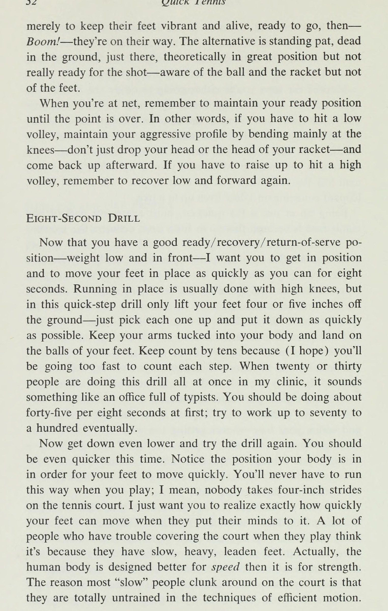
Bởi vì bạn không mất thăng bằng như khi chạy, xáo trộn là cách tốt nhất để lấy lại mặt đất sau khi đánh và bạn đang chờ cú đánh tiếp theo của đối thủ. Đặc biệt khi trò chơi trở nên gay cấn, bạn phải duy trì tư thế hung hãn này, thấp và tiến về phía trước, điều này sẽ cho phép bạn có cơ hội tối đa để di chuyển, chạy, đánh, lao, dừng, đi, nhảy—nói tóm lại, hoàn toàn di động. Bất cứ điều gì kém hơn vị trí hiện tại của bạn đều không được mong muốn khi bạn đang cố gắng kiểm soát những quả bóng trong thân người (inner ball) - những quả bóng nằm trong phạm vi của bạn - và tiếp cận những quả bóng ngoài tầm (outer ball) - những quả bóng bạn phải chạy tới - đang gây ra vấn đề cho bạn.
Nếu bạn gặp khó khăn với việc tiếp cận các quả bóng ngoài tầm (outer ball), bạn có thể khá chắc chắn rằng một gốc rễ của vấn đề là do vị trí mà bạn đã rời đi, có lẽ vị trí này không đủ quyết liệt để bạn bắt đầu nhanh chóng. Ngay khi bạn bắt đầu chơi ở tư thế sẵn sàng tốt này, bạn sẽ bắt đầu nhận ra rằng quần vợt là một trò chơi của tư thế và chuyển động cũng như trò chơi của các cú đánh. Đó hoàn toàn là vị trí đa năng tốt nhất để chờ bất kỳ quả bóng nào, kể cả quả giao bóng.
Nó sẽ cho phép bạn giữ thăng bằng nếu bạn phải trả một cú giao bóng mạnh hoặc để bắt đầu nhanh chóng, có kiểm soát nếu
Tư thế sẵn sàng không chính xác: chân phẳng và trọng lượng dồn về một bên.
30 Quick Tennis bạn phải trả lại một cú giao bóng xoáy đi. Đó là vị trí sẽ cho phép bạn lên lưới nhanh chóng và che lưới một cách hiệu quả khi bạn đã lên đó. Dù bạn ở đâu trên sân, nếu bạn không đánh, chạy hoặc chuẩn bị cho cú đánh của mình, bạn nên ở vị trí sẵn sàng/phục hồi/trả giao bóng này, với một số biến thể nhất định cho các tình huống khác nhau mà tôi sẽ đề cập tiếp theo. Nếu cơ lưng, bụng và chân không ổn định, bạn sẽ quá mệt mỏi để duy trì tư thế này trong suốt trận đấu kéo dài; nhưng nếu bạn thực hiện các bài tập ở Chương 9, bạn sẽ không gặp vấn đề gì cả.
HỒ SƠ CƠ BẢN VÀ MẠNG Về cơ bản có ba loại người chơi quần vợt: người chơi quần vợt ở sân sau, người chơi giao bóng và vô lê, và người chơi ở tất cả các sân, người ở phía sau đường cuối sân hoặc trên lưới, tùy thuộc vào tình huống—trận đấu của đối thủ, mặt sân, tỷ số, v.v. Tất nhiên, việc bạn thích tấn công bằng cách tấn công vào lưới hay đứng ở vạch cuối sân và cố gắng đánh bại đối thủ đều là vấn đề về tính cách cũng như tài năng và kỹ năng cụ thể của bạn trên sân.
Nhưng bất kể phong cách chơi của bạn là gì, bạn phải điều chỉnh nó cho phù hợp với tính quyết liệt của trận đấu mà bạn đang chơi — quần vợt càng quyết liệt thì bạn càng phải nhanh nhẹn và sẵn sàng hơn. Nếu bạn đang chơi ở đường cuối sân và mọi thứ đang diễn ra theo cách của bạn — đối thủ của bạn đang ở thế phòng thủ, chạy khắp sân, đánh thẳng vào bạn — thì bạn có thể thư giãn một chút, hồi phục cao hơn một chút, chẳng hạn như ở tư thế sẵn sàng tiêu chuẩn của bạn. Bạn phải luôn giữ tư thế hướng về phía trước nhưng có thể hơi nhô lên khỏi thắt lưng.
Tuy nhiên, hãy chuẩn bị tinh thần vì bất cứ điều gì cũng có thể xảy ra. Đột nhiên, đối thủ của bạn có thể có cơ hội đánh bật quả bóng hoặc làm bạn ngạc nhiên bằng một cú đánh nhỏ. Bạn sẽ không bao giờ thành công nếu bạn cứ đứng bằng gót chân. Hoặc anh ta có thể đánh bạn một loạt cú đánh chéo sân dễ dàng và sau đó đánh hai cú liên tiếp vào cùng một phía, khiến bạn đi sai hướng. Đó là một trong những mô hình lâu đời nhất và hiệu quả nhất trong quần vợt. Đừng để bản thân bị ru ngủ vào trạng thái tự mãn bởi một đợt phục hồi cơ bản kéo dài.
Bạn phải sẵn sàng cho mọi thứ.
Sẵn sàng cho mọi thứ a Mặt khác, nếu bạn đang ở thế phòng thủ, với việc đối thủ chạy từ bên này sang bên kia và lên xuống, đó là chiến tranh, vì vậy hãy ở yên. Trò chơi càng gay cấn thì cấu hình của bạn càng thấp để có thêm sự ổn định và sức mạnh. Hầu hết thời gian, bạn sẽ ở trên vạch cuối sân hoặc trên lưới, ngoại trừ những cú đánh tiếp cận và những cú vô lê. Rõ ràng, bạn càng đến gần lưới thì hành động càng nhanh vì bóng có ít thời gian và khoảng cách để di chuyển trước khi đến chỗ bạn.
Điều này có nghĩa là bạn phải ở trong tư thế sẵn sàng căng thẳng hơn khi bước vào. Hãy đảm bảo rằng bạn đã chuẩn bị sẵn sàng trước khi đối thủ chạm bóng; khi bạn đuổi theo nó, bạn muốn có cảm giác như một con báo đang vồ một con nai từ trên cây. Lên lưới là phần nhanh nhất, quyết liệt nhất trong bất kỳ trận đấu quần vợt nào vì có rất ít thời gian từ lúc bóng được đánh đến khi nó đến chỗ bạn. Không có thời gian để chơi đùa trên mạng. Khi đã lên đến đó, bạn có chính xác một nửa thời gian để chuẩn bị như ở đường cuối sân, vì vậy bạn phải luôn sẵn sàng và sẵn sàng gấp đôi, cho dù bạn đang chơi đơn hay đôi; lưới là nơi nó được nhân đôi.
Bạn phải ở trong tư thế phản ứng nhanh như mèo và không chút do dự. Bóng sẽ lao tới mạnh và nhanh, vì vậy khả năng căn thời gian, phối hợp và sự tỉnh táo của bạn phải hoàn hảo nhất có thể. Phản ứng của bạn phải mang tính phản xạ: ngay khi bạn nhìn thấy quả bóng chạm vào, bạn sẽ phản ứng. Nó vào lưới khó hơn nhiều so với ở đường cuối sân, vì nó mất rất nhiều tốc độ sau khi bật lên, vì vậy bạn phải thật ổn định. Tuy nhiên, nếu bạn thực sự sắp bị nổ tung, hãy hạ thấp trọng tâm và mở rộng chân đế của bạn — tuy nhiên, đừng bao giờ quá rộng để di chuyển.
Ở vị trí thấp trên lưới cũng sẽ giúp bạn “nhìn” bóng tốt hơn— sẽ cho bạn góc nhìn tốt hơn về nó—và giúp bạn cảnh giác với các dây lưới và các cú đánh chìm. Mọi người thường mắc lưới cao đến nỗi họ làm hỏng những thứ mềm mại. Rất nhiều cầu thủ chuyên nghiệp di chuyển tới lui, thực hiện một điệu nhảy nhỏ khi họ ở trên lưới. Đó là sự căng thẳng - sẵn sàng giải phóng, lao lên và phản ứng theo cách này hay cách khác. Bạn không bao giờ thấy những người chơi giỏi đoán sai khi nói đến chuyển động liên tục này trên lưới, bởi vì không bao giờ có bất kỳ khoản hoa hồng cân bằng nào; họ luôn duy trì hồ sơ bình đẳng của mình.
Không phải để bắt đầu quả bóng, hay cố gắng đoán xem nó sẽ đi đâu, mà là
32 Quick Tennis chỉ để giữ cho đôi chân của họ sống động và sống động, sẵn sàng bắt đầu, sau đó— Bùm!—họ đang trên đường đến. Giải pháp thay thế là đứng yên, chết trên mặt đất, ngay tại đó, về mặt lý thuyết là ở vị trí thuận lợi nhưng chưa thực sự sẵn sàng cho cú đánh – nhận thức được bóng và vợt nhưng không nhận biết được bàn chân. Khi vào lưới, hãy nhớ duy trì tư thế sẵn sàng cho đến khi điểm kết thúc. Nói cách khác, nếu bạn phải đánh một cú vô lê thấp, hãy duy trì tư thế hung hãn của mình bằng cách chủ yếu uốn cong đầu gối—đừng cúi đầu hoặc đầu vợt—và quay trở lại sau đó.
Nếu phải bật cao lên để tung cú vô lê cao, hãy nhớ thu thấp người và tiến về phía trước một lần nữa. KHOẢN TÁM TÁM GIÂY Bây giờ bạn đã ở tư thế sẵn sàng/thu hồi/trả giao bóng tốt — trọng lượng thấp và ở phía trước — Tôi muốn bạn vào vị trí và di chuyển chân vào vị trí nhanh nhất có thể trong tám giây. Chạy tại chỗ thường được thực hiện với đầu gối cao, nhưng trong bài tập bước nhanh này, bạn chỉ nhấc chân lên khỏi mặt đất 4 hoặc 5 inch — chỉ cần nhấc từng chân lên và đặt xuống càng nhanh càng tốt.
Giữ cánh tay của bạn thu gọn vào cơ thể và tiếp đất bằng lòng bàn chân. Hãy đếm đến hàng chục vì (tôi hy vọng) bạn sẽ đi quá nhanh để đếm từng bước. Khi hai mươi hoặc ba mươi người đang thực hiện bài tập này cùng một lúc trong phòng khám của tôi, nó giống như một văn phòng đầy những nhân viên đánh máy. Lúc đầu, bạn nên thực hiện khoảng 45 giây trong 8 giây; cố gắng tăng lên đến bảy mươi đến một trăm. Bây giờ hãy xuống thấp hơn nữa và thử tập lại. Lần này bạn nên nhanh hơn nữa.
Chú ý vị trí của cơ thể để chân bạn di chuyển nhanh. Bạn sẽ không bao giờ phải chạy theo cách này khi chơi; Ý tôi là, không ai có thể sải bước 4 inch trên sân tennis. Tôi chỉ muốn bạn nhận ra chính xác đôi chân của bạn có thể di chuyển nhanh như thế nào khi họ tập trung vào nó. Rất nhiều người gặp khó khăn khi che sân khi thi đấu cho rằng đó là do họ có đôi chân nặng nề, chậm chạp như chì. Trên thực tế, cơ thể con người được thiết kế tốt hơn cho tốc độ hơn là sức mạnh.
Lý do khiến hầu hết những người “chậm” chạy loanh quanh trên sân là vì họ hoàn toàn chưa được đào tạo về các kỹ thuật chuyển động hiệu quả.
Chương 4: Kiểu bước đi và chuyển động của sân
Sẵn sàng cho mọi điều) Nếu bạn thử thí nghiệm này, tôi sẽ cho bạn thấy ý tôi là gì. Thực hiện lại bài tập 8 giây tương tự, nhưng lần này hãy đứng thẳng và để gót chân chạm đất trước khi bạn chạy tại chỗ. Bạn có thể sẽ nhận thấy rằng chân của bạn di chuyển chậm hơn nhiều theo cách này - một sự thay đổi vị trí cơ bản và rất có thể điểm của bạn sẽ giảm đi khoảng một phần tư. Tuy nhiên, đây lại là cách mà rất nhiều người chơi quần vợt – đứng cao và kiễng chân. Rất nhiều người chạy bằng gót chân, bằng gót chân, giống như họ đi bộ.
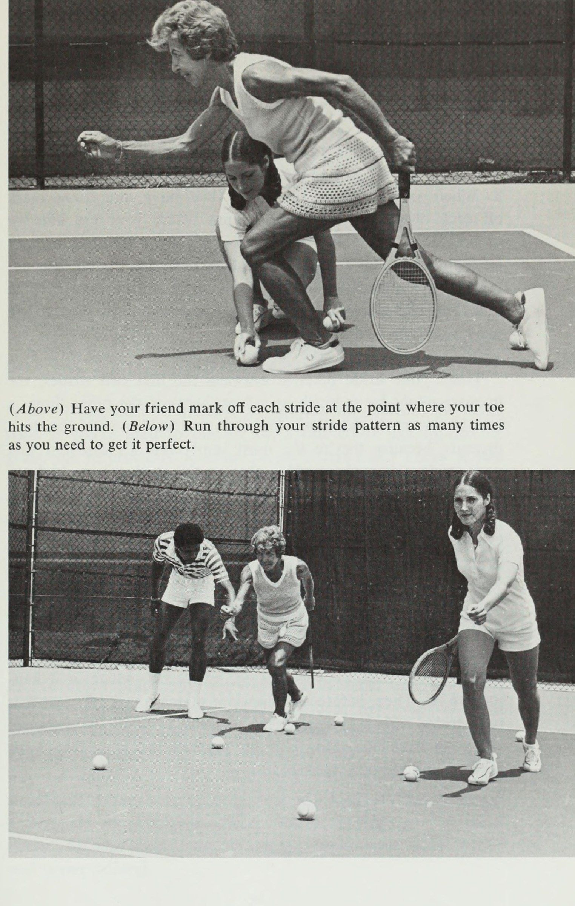
Điều này hoàn toàn sai; đơn giản là bạn không thể chạy nhanh bằng gót chân như bạn vừa thấy. Bạn muốn dẫn đầu bằng ngón chân, có nghĩa là bạn phải chạy nghiêng người về phía trước. Hãy thử chạy bằng ngón chân với trọng lượng ở phía sau; bạn sẽ có một thời gian khó khăn. Và ngược lại: nếu trọng lượng của bạn ở phía trước, bạn không thể chạy bằng gót chân; ngón chân của bạn sẽ tự động dẫn đầu. Nếu bạn chạm gót chân khi chạy, có thể là do trọng lượng của bạn dồn quá xa hoặc bạn sải bước quá dài.
Nhưng bạn là người đồng hành tốt: Tôi thường bắt gặp Ashe luôn tiếp đất bằng gót chân, còn Tanner thường chạy bằng cả chân, như thể chân anh ấy được làm bằng chì. Trên thực tế, khi chạy, bạn nên tiếp đất bằng mũi bàn chân - ở một phần ba phía trước. Điều xảy ra là sau khi tiếp đất, bạn lăn toàn bộ bàn chân về phía sau, rồi lại lăn về phía trước bằng mũi chân để đẩy ra. Tất cả điều này xảy ra quá nhanh khiến bạn không thể nhận ra khi đang chạy, nhưng nếu bạn thử quay chậm thì bạn sẽ hiểu ý tôi.
Khi tôi cho những người đã chạy theo một cách nhất định trong suốt cuộc đời của họ xem bài tập này, đôi khi có người phàn nàn, "Làm sao bạn có thể mong đợi tôi học lại cách chạy ở giai đoạn này của trò chơi?" Hãy để tôi giải thích rằng tôi không cố gắng thiết kế lại toàn bộ phong cách chạy của bạn, chỉ để hoàn thiện nó. Bạn chắc chắn nên làm việc với những gì bạn có. Cũng giống như mọi người có bước đi khác nhau do thể trạng, sự phân bổ trọng lượng, chiều dài chân, v.v., khác nhau, nên mọi người cũng chạy khác nhau.
Chỉ thực hiện những thay đổi cần thiết trong phong cách chạy của bạn, vì chạy là một hoạt động tự nhiên. Bạn không muốn can thiệp vào nhịp điệu và sự phối hợp của chính mình và cuối cùng bị tê liệt khi phân tích. Lần tới khi bạn chơi quần vợt và gặp khó khăn trong việc bắt được cú đánh của đối thủ, hãy xem cách bạn đang chạy; có lẽ bạn đang ở trên cao—điều mà Tanner gọi là “quan sát”—và
34 Quần vợt tiếp đất nhanh trên gót chân của bạn. Hãy nghiêng về phía trước và nhón chân, và xem bạn sẽ đạt được bao nhiêu quả bóng nữa. Bạn sẽ biến một số cú đánh tốt của đối thủ thành những cú đánh tuyệt vời của mình.
4) Kiểu sải bước Bài tập tám giây cho bạn thấy bạn có thể di chuyển chân nhanh như thế nào, nhưng việc chạy tại chỗ sẽ không giúp bạn tiến xa trên sân tennis. Nền tảng của việc chạy hiệu quả là kiểu sải chân tốt, sải chân có độ dài tối đa mà bạn có thể thực hiện trên sân, bất kể bề mặt đó có thể là gì mà vẫn duy trì được độ dẫn đầu ngón chân. Nếu sải chân của bạn quá ngắn, bạn sẽ thực hiện những bước nhỏ khó khăn và không thể đưa bạn đến đâu. Một sải chân quá dài sẽ khiến bạn phải quỳ gối sau mỗi bước đi, như bạn vừa học, đây là một cách di chuyển rất chậm trên sân.
Một sải chân quá dài cũng gây ra một lỗi phổ biến khác, đó là rút ngắn lại thành một bước nhảy nhỏ khi bạn đến gần quả bóng. Cô gái mười lăm tuổi chơi số một trong đội quần vợt của trường bị hen suyễn và thường bị chóng mặt khi chơi quần vợt. Học cách chạy với sải chân không quá dài cũng không quá ngắn đã giúp cô chạy hiệu quả hơn; bé có thể hoàn thành được nhiều việc hơn với ít nỗ lực hơn và không còn cảm thấy mệt mỏi khi chơi nữa.
Một người phụ nữ khác đến phòng khám của tôi, người từng chạy bằng chân bẹt, mắt cá chân trái yếu nên không còn gây rắc rối cho cô ấy nữa. Cô tin rằng việc học cách chạy đúng cách đã giúp củng cố nó. Nhưng bạn không nhất thiết phải có vấn đề về sức khỏe mới có thể hưởng lợi từ kiểu sải chân tốt. Epa)
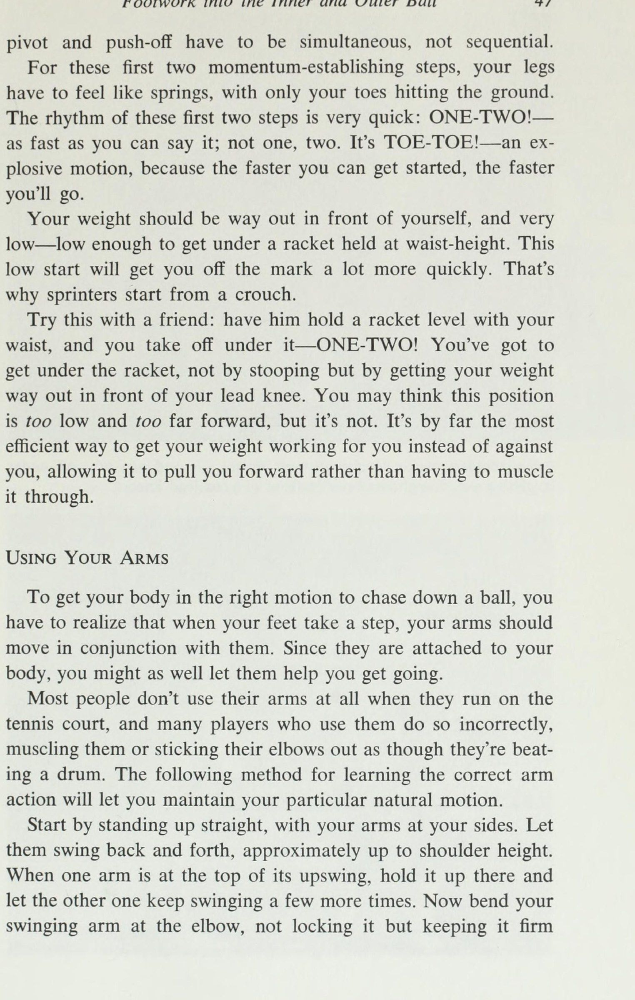
36 Quick Tennis Không phải chỉ những người nghiệp dư mới chạy sai. Charles Pasarell thường bắt đầu với một bước tiến lớn cho đến khi chúng tôi nghiên cứu kiểu sải chân của anh ấy. Anh và một số cầu thủ khác đã phát hiện ra rằng việc rút ngắn sải chân giúp họ khởi đầu nhanh hơn, giữ thăng bằng tốt hơn khi tiếp xúc với bóng và phục hồi nhanh hơn. Học cách sải bước tốt có thể giúp ích nhiều cho trò chơi quần vợt của bạn cũng như học cách chơi cú vô-lê hiệu quả. Các bề mặt sân khác nhau đòi hỏi các kiểu sải bước khác nhau.
Ví dụ, đất sét mềm và không có độ bám tốt, bước đi ngắn hơn một chút so với bề mặt cứng, nhanh như nhựa đường hoặc xi măng. Thêm về điều đó sau. Ngay bây giờ, chúng tôi sẽ cho rằng bạn đang chơi trên một loại sân cứng và nhanh nào đó. Để xác định kiểu sải chân của mình, bạn sẽ cần một sân tennis, năm bút đánh dấu (bóng tennis cũng được nhưng băng dính sẽ tốt hơn), thước dây và một người bạn. 1. Đi bộ tám bước bình thường từ đường cuối sân về phía lưới và đánh dấu vị trí đó bằng một quả bóng hoặc một đoạn băng dính.
Đi bộ lại— tám bước bình thường như thể bạn đang đi bộ trên phố. Nếu khoảng cách thay đổi, hãy điều chỉnh điểm đánh dấu. Đi bộ ba lần trước khi đánh dấu điểm cuối cùng của bạn. Sau đó, để tăng thêm chín hoặc mười inch, hãy đặt đầu vợt của bạn ngay trước điểm đánh dấu của bạn, song song với lưới và đánh dấu vị trí đó. Xóa đi các dấu hiệu khác. 2. Bắt đầu bằng các ngón chân của bạn chính xác trên vạch cuối sân (baseline), chạy từ vạch cuối sân (baseline) đến điểm của bạn, cố gắng đạt khoảng cách đúng năm bước.
Nhưng đừng mất hai bước dài rồi ba bước ngắn chỉ để đạt được mục tiêu. Bạn đang cố gắng đo kiểu sải chân của mình và nếu bạn vượt quá mốc thì sải chân của bạn quá dài, vì vậy hãy rút ngắn chúng lại từng sải chân. Tuy nhiên, năm sải chân của bạn không được có độ dài bằng nhau vì sải chân của bạn dài ra khi bạn tăng tốc. Vì lý do này, hãy chạy từ vạch cuối sân (baseline) đến điểm đánh dấu, sau đó quay trở lại vạch cuối sân (baseline) và thử lại, thay vì cố gắng làm việc từ cả hai đầu.
Bạn có thể phải mất tới mười lần chạy thử để có được nó hoàn hảo: năm bước sải chân tự nhiên, mượt mà, bằng đầu ngón chân, tiếp đất ngay trên mặt đất.
*. eh OY OO (Ở trên) Nhờ bạn của bạn đánh dấu từng sải chân tại điểm ngón chân của bạn chạm đất. (Bên dưới) Chạy qua kiểu sải chân của bạn nhiều lần nếu bạn cần để nó hoàn hảo.
38 Tiền Tennis nhanh mà không cần phải điều chỉnh cách này hay cách khác. Thực hành nó cho đến khi bạn có thể đạt được mục tiêu mỗi lần. Chạy qua nó một cách chậm rãi, giống như bạn đánh những cú đánh chậm rãi khi bạn học cách tạo rãnh cho chúng. Khi chạy, đừng chỉ ngón chân ra ngoài, làm dấu chân gà, cũng đừng chạy kiểu chân chim bồ câu, chỉ vào trong. Bạn nên chạy như người Ấn Độ đi bộ, mũi chân hướng thẳng về phía trước. 3. Khi bạn có thể chạm đích mọi lúc, hãy nhờ bạn của bạn đánh dấu từng bước đi của bạn tại điểm ngón chân chạm đất.
Có thể sẽ phải mất một lần chạy hoàn chỉnh để đánh dấu từng bước. Đừng chỉ chạy hai bước rồi ngắt quãng, bởi vì mọi người có xu hướng bước những bước rất ngắn khi họ làm điều đó. Thực hiện toàn bộ năm bước mỗi lần và chỉ yêu cầu bạn của bạn đánh dấu từng bước một. Đó là kiểu sải bước của bạn. Giữa hai sải chân đầu tiên, mức tăng có thể bằng một foot; giữa ba cái còn lại, mỗi cái vài inch. Đo hai bước đầu tiên bằng thước dây vì chúng quan trọng nhất; điều cần thiết là kiểu sải chân của bạn phải hoàn hảo khi bạn vận động cơ thể.
Chạy qua toàn bộ kiểu sải chân của bạn mười lăm, hai mươi, thậm chí ba mươi lần, cho đến khi bạn thực hiện đúng chính xác hai bước đầu tiên mỗi lần, để bạn biết chính xác đôi chân của mình phải di chuyển bao xa từ bước đầu tiên đến bước thứ hai. Giống như bạn điều chỉnh các cú đánh của mình trước khi chơi một trận đấu, hãy dành một hoặc hai phút để điều chỉnh kiểu sải bước của bạn trên sân, đặc biệt khi bạn đang tham gia một giải đấu hoặc bất kỳ tình huống nào khác khi bạn muốn chơi hết mình.
Viết số đo của hai bước đầu tiên lên bìa vợt của bạn—39 44; hoặc 48 56—-bất kể điều gì xảy ra. Sau đó, trước một trận đấu quan trọng, hãy đánh dấu hai sải chân đầu tiên của bạn bằng thước dây và chạy qua chúng nhiều lần để mọi thứ đều được khắc vào trong—bàn chân, cú đánh của bạn, và tôi hy vọng là cả đầu của bạn.
Chương 5: Thích nghi với bề mặt sân
5@ Mặt sân Rất nhiều người chơi thua trận do chơi trên tất cả các mặt sân theo cùng một cách. Nếu bạn đã quen chơi trên sân nhanh như sân nhựa hoặc sân cỏ, có lẽ bạn đã phát triển trò chơi giao bóng và vô lê. Nếu bạn chơi trên sân chậm như sân đất nện hoặc Har-tru, bạn có thể chơi một trận đấu cơ bản. Ngay cả hầu hết các chuyên gia đều có bề mặt yêu thích, nói chung là bề mặt mà họ đã lớn lên. Có những tay vợt chuyên nghiệp thường tiến xa trong các giải đấu họ chơi trên sân nhanh và liên tục bị loại ở vòng một hoặc vòng hai trên mặt sân đất nện.
Tốc độ của sân đề cập đến cách quả bóng phản ứng khi nó rời khỏi bề mặt. Trên sân đất nện, nơi bóng nảy cao, chậm, đồng đều, bạn có gần như thêm cả một giây để tiếp cận nó so với trên sân cỏ, điều đó có nghĩa là trên sân đất nện, hầu như bạn có thể hạ gục mọi thứ, ngay cả những cú đánh sẽ thắng hoàn toàn trên sân cỏ. Bề mặt sân cũng khác nhau về mức độ bám mà chúng mang lại cho bạn, độ trơn của chúng và liệu chúng có “cho” dưới chân bạn hay không.
Bạn không thể di chuyển giống hệt nhau trên các bề mặt khác nhau. Thực hiện một số điều chỉnh trong kiểu sải bước và tư thế sân của bạn sẽ giúp bạn giữ thăng bằng và ổn định trên bất kỳ bề mặt nào bạn đang chơi, để sân không trở thành đối thủ của bạn và bạn có thể thực hiện cú đánh của mình kịp thời và trong tầm kiểm soát. ừ.
40 Quick Tennis Grass là một trong những bề mặt nhanh nhất. Bóng nảy thấp trên cỏ—và nếu cỏ không ở trạng thái tốt nhất, nó thường nảy không tốt—và sau đó bóng sẽ chết. Nếu đánh mạnh, quả bóng sẽ trượt. Cỏ là bề mặt khó khăn nhất để người chơi lối chơi chậm có thể di chuyển hiệu quả. Một pha đánh bóng cơ bản dễ dàng trên sân đất nện sẽ nhanh hơn, khó hơn nhiều trên sân cỏ, một phần vì người chơi có xu hướng đánh mạnh hơn trên mặt sân nhanh. Vì cỏ mềm và dẻo nên dễ đi vào chân.
Nhưng nó cũng trơn, và thậm chí còn trơn hơn sau khi mưa hoặc tưới nước. Một khi bạn đã cam kết theo cách này hay cách khác, thì cực kỳ khó để thay đổi hướng—bạn đang di chuyển mạnh mẽ và có rất ít ma sát để giúp bạn dừng lại, vì vậy bạn phải đặc biệt có ý thức dừng lại và thiết lập sớm. Bạn sẽ gặp rất nhiều vấn đề trên sân cỏ nếu bạn không giữ thăng bằng hoàn hảo và nếu kiểu sải chân của bạn không phù hợp với túi tiền. Tất cả điều này có nghĩa là cỏ, giống như bất kỳ bề mặt nhanh nào, đòi hỏi sự tham gia tích cực giữa bạn và hồ sơ của bạn.
Bạn nên ở thấp hơn bình thường và rút ngắn bước sải chân của mình một chút. Công thức của một sân cứng—tám bước đi bộ cộng với một đầu vợt chia cho năm bước chạy—nên sửa đổi thành tám bước đi bộ thậm chí chia cho năm bước chạy. Xi măng và nhựa đường cũng thường là những mặt sân rất nhanh và không có bất kỳ tác động nào, điều này khiến chúng trở thành những bề mặt dễ chạy: bạn thực sự có thể cất cánh. Những người có lối chơi trên lưới tốt thường thích chơi trên sân cứng vì họ có thể lao thẳng vào và hạ gục bạn.
Bạn cần có lối chơi nhanh trên sân cứng: giữ tốc độ thấp và khi lên lưới, hãy sẵn sàng. Kiểu bước của xi măng và nhựa đường là kiểu bạn đã học ở trang 36—tám cộng một chia cho năm. Hiện nay có rất nhiều bề mặt tổng hợp khác nhau nên không thể khái quát nhiều về chúng, nhưng theo quy luật, chúng chậm hơn cỏ và nhanh hơn đất sét và thường đủ nhanh để có lợi cho kẻ tấn công. Hầu hết các sân này đều cho bạn lực kéo tốt và chỗ đứng vững chắc nên việc dừng lại và chuyển hướng nhanh chóng không có vấn đề gì nếu bạn giữ thăng bằng.
Kiểu sải chân của bạn phải là tám cộng một chia cho năm, giống như trên đường nhựa và xi măng.
Bề mặt sân 4] Trên sân đất nện, bạn không muốn có bề mặt hung hãn hoặc sải bước dài như trên các bề mặt khác. Bạn nên chơi một sợi tóc cao hơn trên sân đất nện, vì nếu bạn quá thấp và quá xa về phía trước, bàn chân của bạn sẽ bị xoay ra ngoài, giống như những chiếc lốp xe bị hói. Công thức dạng sải chân cho sân đất nện là tám bước đi trừ đi một đầu vợt chia cho năm bước chạy. Sự chênh lệch vài inch trên mỗi sải chân sẽ giúp bạn giữ vững chỗ đứng và giảm thiểu tình trạng trượt quá mức.
Ashe nói rằng chơi trên sân đất nện có cảm giác giống như chơi trên giày trượt patin, nhưng để di chuyển tốt trên sân đất nện, bạn phải trượt. Trượt vào bóng sẽ giúp bạn không bị quá mạnh, giúp bạn tiếp cận bóng bằng chân chính xác và giúp bạn phục hồi và đổi hướng nhanh hơn cho quả bóng tiếp theo. Nếu bạn chạy mạnh, bạn sẽ trượt một cách tự nhiên. Hầu hết các cầu thủ trên sân đất nện trượt hai hoặc ba feet vào cú đánh của họ, một số chuyên gia trượt tới sáu feet. Để trượt trên những đường chạy dài và khó, hãy giữ vững chân sau khi bạn tiếp bóng và trượt chân trước vào đúng vị trí.
Hãy nhớ giữ bình phương để có được sự cân bằng tốt. Har-tru, một bề mặt đá dăm, chơi rất giống đất sét nhưng nhanh hơn một chút và yêu cầu cùng một hình dáng và kiểu sải chân. Bạn sẽ trượt trên Har-tru giống như trên đất sét. Khi đất sét hoặc Har-tru vừa được tưới nước hoặc mưa lên sẽ chơi chậm và mềm hơn so với khi khô.
Bộ Chân Cho Bóng Ngoài & Bóng Trong Thân Người
Chương 6A: Bước chân vào bóng ngoài
6 Động tác bằng chân vào bóng trong và bóng ngoài Trước tiên, hãy phân biệt hai vị trí của bóng: bóng trong, là vị trí mà bạn có thể với tới một cách thoải mái mà không cần cố gắng quá nhiều, và bóng ngoài, là vị trí mà bạn thực sự phải chạy tới. Ngoài ra còn có tất cả những quả bóng rơi ở đâu đó ở giữa hai thái cực này; trên thực tế, đây có thể là phần lớn các quả bóng bạn sẽ gặp trong một trận đấu. Quả bóng dễ đánh nhất là quả bóng đến ngay với bạn.
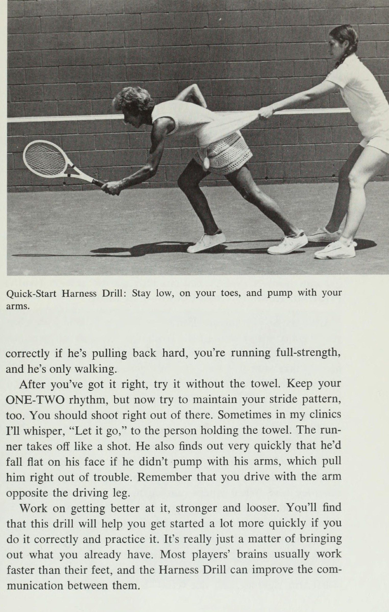
Điều này không xảy ra nhiều lần trong một trận đấu, và khi nó xảy ra, có lẽ bạn hầu như luôn có thể đánh trả một cú đánh tuyệt vời. Bất kỳ quả bóng nào mà bạn có thể đến và chuẩn bị đủ sớm để đánh như thể nó đến ngay chỗ bạn, tạo cơ hội cho bạn thực hiện một cú đánh tấn công có kiểm soát, đều là quả bóng trong thân người (inner ball). Nó không có khoảng cách cố định; mọi người đều có một phạm vi cụ thể mà anh ấy cảm thấy thoải mái và có thể di chuyển tốt. Việc quả bóng có nằm trong tầm đánh của bạn hay không còn phụ thuộc vào tốc độ, độ xoáy của nó và loại mặt sân bạn đang chơi.
Những quả bóng trong thân người (inner ball) là những quả bóng mà bạn không thể mua được. Không bao giờ có bất kỳ lý do nào để đánh bóng trong thân người (inner ball) khi đang chạy. Đó là cú đánh cơ bản của bạn vì nó mang đến cho bạn cơ hội tốt nhất để thực hiện cú đánh đẹp nhất mà bạn biết cách thực hiện. Nhưng rất nhiều người chơi
Động tác chân vào bóng trong và bóng ngoài 43 trở nên lười biếng với bóng trong, tự nhủ: “Chà, bóng gần, dễ tiếp cận nên mình chỉ cần lao qua đó và đánh nó thôi,” thay vì đến đó, chuẩn bị càng sớm càng tốt và thực hiện cú đánh lớn. Ngoài ra, họ thường chơi bóng trong quá gần cơ thể thay vì di chuyển ra xa một chiều dài vợt. Khi bóng tiếp đất trong phạm vi của bạn thì rất có thể bạn sẽ thực hiện cú đánh lười biếng. Giai đoạn quan trọng của bước chân vào bóng trong là những điều chỉnh cuối cùng mà bạn thực hiện để chuẩn bị hoàn hảo cho cú đánh của mình.
Nhanh chóng đến vị trí gần đúng, di chuyển theo đường bay của quả bóng, sử dụng tốc độ đột ngột nếu cần thiết. Đứng sát lưới và khi bóng nảy lên, hãy thực hiện những điều chỉnh cuối cùng để cho phép bạn kiểm soát hoàn toàn cú đánh của mình—bất kể trọng lượng nào bạn thay đổi, hoặc lùi lại hoặc bước vào, lên hoặc xuống một chút để đánh bóng ở mức độ thoải mái nhất của bạn, có thể là cao đến thắt lưng. Điều quan trọng nhất là kết thúc bằng chân sau, chân gần hàng rào nhất, trồng, Động tác bằng chân, bóng trong thuận tay: chân sau trồng .
. . thả lỏng và chuyển trọng lượng của bạn về phía trước khi bạn tấn công quả bóng trước mặt.
Động tác chân, trái tay bóng trong: chân sau đặt . . . thả lỏng và chuyển người về phía trước khi bạn tấn công quả bóng trước mặt. bởi vì nó chuyển trọng lượng của bạn từ chân sau sang chân trước, chân gần lưới nhất, cung cấp nguồn năng lượng cho cú đánh của bạn. Khi đánh, bạn thả lỏng và dồn trọng lượng về phía trước lên bàn chân trước, đồng thời tấn công quả bóng trước mặt. Bóng càng ở xa thì bạn càng có ít thời gian để chuẩn bị cho nó một cách hoàn hảo.
Đối với những quả bóng rơi vào một hạng giữa bóng trong và bóng ngoài, bạn có thể sẽ không có thời gian để thực hiện những điều chỉnh cuối cùng đó, nhưng nếu bạn hối hả, bạn thường sẽ có thời gian để dừng lại, đặt chân sau và bước vào bóng. BÓNG NGOÀI: BẮT ĐẦU NHANH Bạn đang đứng ở vị trí sẵn sàng ở giữa đường cuối sân. Đối thủ của bạn đánh bóng rộng đến thuận tay của bạn. Bạn đã có một
Footwork vào trong và ngoài Ball 45 rất nhiều mặt đất để che chắn. Bạn lấy lại vợt và bắt đầu chạy phải không? Sai. Khi có năm, sáu, bảy hoặc thậm chí nhiều bước chạy hơn giữa bạn và bóng, hoàn toàn không có lý do gì để lấy lại vợt của bạn ở bước đầu tiên. Nó không chỉ không cần thiết mà còn là một trở ngại. Một cây vợt đưa ra phía sau bạn khi bạn đang cố gắng bắt đầu chạy xuống một quả bóng dài cũng giống như việc bạn cố gắng đánh bại một quả bóng bằng gậy trong tay.
Hai hoạt động — lấy bóng và đánh bóng — phải được tách biệt. Hãy nhớ rằng điều này chỉ áp dụng cho quả bóng ngoài tầm (outer ball), quả bóng cần phải chạy nhiều. Điều đầu tiên bạn phải làm là vượt qua quán tính khi đứng yên và đưa cơ thể chuyển động. Sau hai bước đầu tiên, khi bạn đã xác lập được động lực của mình thì bạn đã sẵn sàng bắt đầu nghĩ đến việc đánh bóng. Chìa khóa để đạt được cú thuận tay rộng đó đúng thời gian là đẩy bóng — bắt đầu nhanh.
Trong khi phần quan trọng của động tác bóng trong là ở phần cuối thì phần quan trọng của động tác bóng ngoài là ở phần đầu. Như Tom Gorman lưu ý, việc tiết kiệm được một nửa hoặc thậm chí chỉ một phần mười giây ở đây thường có thể tạo ra sự khác biệt giữa một cú đánh phòng thủ và một cú tấn công. Lý do bạn muốn trọng lượng của mình hướng về phía trước khi bạn ở tư thế sẵn sàng là vì trọng tâm của bạn càng gần mép trước của bệ đỡ thì bạn càng có thể bắt đầu nhanh hơn.
Điều thực sự xảy ra khi bạn chạy là lúc đầu cơ thể bạn di chuyển ra phía trước bàn chân, điều này khiến bạn mất thăng bằng. Sau đó, bạn đưa chân về phía trước để lấy lại thăng bằng, sau đó bạn lại tiến về phía trước bàn chân của mình, v.v. Chạy là tiến về phía trước bằng cách liên tục mất thăng bằng và lấy lại thăng bằng. Hãy quay lại với cú thuận tay rộng đó. Bạn đang ở vị trí sẵn sàng tốt trên vạch cuối sân (baseline)—thấp, tiến về phía trước và kiễng chân. Ngay khi bạn thấy đối thủ đã đánh thuận tay, điều đầu tiên bạn phải làm là xoay người bằng cách xoay toàn bộ cơ thể theo hướng bạn đang đi, hạ trọng lượng xuống thấp hơn và xa hơn về phía trước, và khi bạn đang quay, hãy đẩy ra.
Động tác chân vào bóng trong và bóng ngoài 47 và động tác đẩy phải đồng thời, không được tuần tự. Đối với hai bước tạo đà đầu tiên này, chân của bạn phải có cảm giác như lò xo, chỉ có ngón chân chạm đất. Nhịp điệu của hai bước đầu tiên này rất nhanh: MỘT-HAI!— nhanh hết sức có thể; không phải một, hai. Đó là TOE-TOE!—một chuyển động bùng nổ, bởi vì bạn bắt đầu càng nhanh thì bạn sẽ đi càng nhanh. Trọng lượng của bạn phải vượt ra ngoài tầm mắt của bạn và rất thấp - đủ thấp để có thể lọt vào dưới một cây vợt được cầm ở độ cao ngang thắt lưng.
Sự khởi đầu thấp này sẽ giúp bạn đạt được mục tiêu nhanh hơn rất nhiều. Đó là lý do tại sao những người chạy nước rút bắt đầu từ tư thế cúi người. Hãy thử điều này với một người bạn: để anh ấy giữ vợt ngang với thắt lưng của bạn và bạn thực hiện cú đánh dưới đó—MỘT-HAI! Bạn phải cúi xuống dưới vợt, không phải bằng cách cúi xuống mà bằng cách dồn trọng lượng của mình ra phía trước đầu gối chính của bạn. Bạn có thể cho rằng vị trí này quá thấp và quá xa về phía trước, nhưng thực tế không phải vậy. Cho đến nay, đó là cách hiệu quả nhất để khiến trọng lượng của bạn có lợi cho bạn thay vì chống lại bạn, cho phép nó kéo bạn về phía trước thay vì phải dùng sức để vượt qua.
SỬ DỤNG TAY CỦA BẠN Để chuyển động cơ thể phù hợp để đuổi theo quả bóng, bạn phải nhận ra rằng khi chân bạn bước một bước, cánh tay của bạn phải di chuyển cùng với chúng. Vì chúng được gắn vào cơ thể bạn nên bạn có thể để chúng giúp bạn tiếp tục. Hầu hết mọi người không sử dụng cánh tay của mình khi chạy trên sân tennis, và nhiều người chơi sử dụng chúng không đúng cách, làm căng cơ hoặc đưa khuỷu tay ra ngoài như thể họ đang đánh trống.
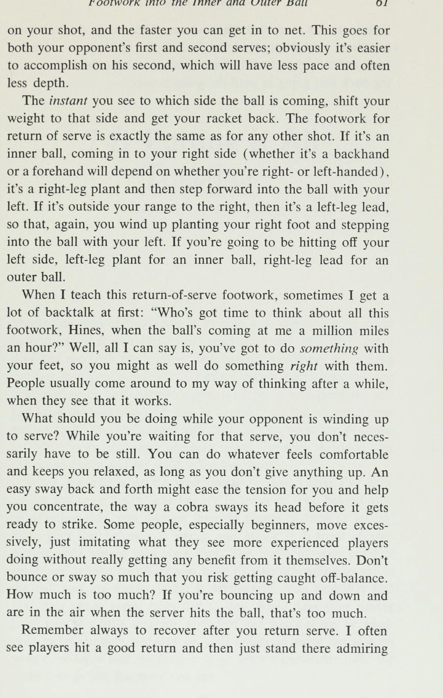
Phương pháp sau đây để học hành động chính xác của cánh tay sẽ cho phép bạn duy trì chuyển động tự nhiên cụ thể của mình. Bắt đầu bằng cách đứng thẳng, hai tay ở hai bên. Để chúng đu đưa qua lại, cao khoảng ngang vai. Khi một cánh tay ở vị trí cao nhất trong quá trình vung lên, hãy giữ nó ở đó và để tay còn lại tiếp tục vung thêm vài lần nữa. Bây giờ uốn cong cánh tay vung của bạn ở khuỷu tay, không khóa nó mà giữ vững
Người bạn giữ vợt ngang với thắt lưng của bạn . . . và bạn cất cánh bên dưới nó, dồn trọng lượng của bạn ra phía trước đầu gối dẫn đầu của bạn. LL, » Wt hLlLEEE ae ) Sddaddla ; i (như 7 ¢ j ‘ 3 3 - . ’ | Ag
(Trái) Giữ một cánh tay ở đầu cú đánh lên, tiếp tục vung cánh tay còn lại. (Giữa) Cong cánh tay vung của bạn ở khuỷu tay, chắc chắn nhưng không bị khóa. (Phải) Hãy để hai cánh tay của bạn cùng lắc lư. đủ để nó không bị mềm. Giữ nó đung đưa. Bây giờ hãy uốn cong cái đang treo trên không và để hai cánh tay của bạn đung đưa cùng nhau. Bây giờ hãy làm nhanh hơn: bơm cho chúng MỘT-HAI, MỘT-HAI, nhanh nhất có thể và nhanh nhất có thể - y hệt như hai bước đầu tiên. Bạn sẽ nhận thấy khuỷu tay của mình không nhô ra ngoài cũng như không bị bó quá chặt.
Chúng đang bơm ngay bên cạnh cơ thể bạn. Cũng lưu ý rằng tay của bạn chỉ đưa cao đến cằm ở phía trước và chỉ đưa ra sau xa đến hông; không hơn, không kém. Lý do chúng ta có động tác vung tay viết tắt như vậy là vì bạn sẽ thực hiện các bước tương đối ngắn và nhanh. Nếu bạn định sải bước dài, bạn sẽ cần vung tay dài. Nhưng đó là đường đua chứ không phải quần vợt. Quần vợt đòi hỏi chuyển động ngắn hơn một chút ở cánh tay cũng như ở bàn chân của bạn.
Bạn sẽ rảnh một tay khi thực hiện hai bước đầu tiên này. Bạn không muốn nó bị siết chặt hoặc mềm và
50 Quick Tennis lỏng lẻo. Nếu bạn khép nó quanh ba ngón tay của bàn tay kia, rồi rút các ngón tay ra, đó là một tư thế tốt: thư giãn, thoải mái và chắc chắn. Hãy để vợt của bạn trở thành một phần mở rộng của cánh tay bạn trong hai bước đầu tiên này. Giữ vợt thật chắc và bơm cánh tay một cách tự nhiên như thể vợt không có trong tay bạn. Đừng di chuyển nó quá mức vì bất kỳ lực cản nào cũng sẽ ảnh hưởng rất nhiều đến động lượng của bạn. Hành động của cánh tay phải giữ thăng bằng cho đôi chân của bạn.
Vì mọi hành động đều có phản ứng ngang nhau và ngược chiều nên khi cánh tay lùi về phía sau, cơ thể bạn sẽ tiến về phía trước. Khi chạy, bắt đầu bơm bằng cánh tay đối diện với chân trước. Nói cách khác, khi chân trái dẫn thì tay phải dẫn. Tôi sẽ biết chính xác chân nào sẽ dẫn đầu trong giây lát. MÁY KHOAN KHỞI ĐỘNG NHANH Máy khoan này sẽ giúp bạn phát triển sức mạnh và khả năng kiểm soát mà bạn cần để tạo ra tốc độ cho hai bước đầu tiên của một cuộc chạy dài. Giữ chặt vợt của bạn.
Quấn một chiếc khăn quanh eo và nhờ một người bạn đứng đằng sau giữ hai đầu khăn. Khi bạn tiến về phía trước - cúi thấp, kiễng chân và lái bằng tay - hãy để anh ấy kéo bạn đủ mạnh để bạn có thể kéo anh ấy đi dạo chứ không phải chạy. Thực hiện các bước ngắn, nhanh chóng, quyết liệt—bạn sẽ mất khoảng mười lăm bước để đi từ đường cuối sân đến vạch giao bóng—khoảng cách 18 feet, nếu bạn thực hiện việc này bên ngoài sân đấu. Nếu cơ thể bạn quá cao, bạn sẽ nhảy nhót và nhận được cái mà tôi gọi là hiệu ứng cầu vồng, một vòng cung cao làm tiêu tan toàn bộ sức mạnh của bạn.
Đưa chân của bạn sang ngang bằng động tác đẩy về phía trước theo từng bước, điều này sẽ giúp bạn giữ trọng lượng của mình ở phía trước và ở phía trước. Cố gắng duy trì nhịp điệu MỘT-HAI, giữ nhịp điệu trôi chảy, chắc chắn và mạnh mẽ. Nếu bạn đang chạy hết sức nhưng không tiến về phía trước thì có nghĩa là đối tác của bạn đang lùi quá mạnh và nên thả lỏng một chút. Nếu bạn có thể kéo anh ta chạy, thì anh ta lùi lại chưa đủ mạnh. Anh ta cũng phải cúi người thấp, giữ tư thế đứng rộng, uốn cong đầu gối và ngồi tựa lưng vào ghế để có thể tạo đủ lực cản.
Bạn cúi thấp và tiến về phía trước, anh ấy cúi thấp và lùi lại. Cả hai bạn đều đang làm việc đó
Máy khoan khai thác bắt đầu nhanh: Luôn cúi thấp, kiễng chân và bơm bằng cánh tay. chính xác nếu anh ấy lùi mạnh thì bạn đang chạy hết sức và anh ấy chỉ đang đi bộ. Sau khi bạn đã làm đúng, hãy thử mà không dùng khăn. Giữ nhịp độ MỘT-HAI của bạn, nhưng bây giờ hãy cố gắng duy trì kiểu sải chân của bạn. Bạn nên bắn ngay ra khỏi đó. Đôi khi tại phòng khám của tôi, tôi sẽ thì thầm: “Hãy để nó đi” với người đang cầm chiếc khăn. Người chạy lao đi như một phát súng. Anh ấy cũng nhanh chóng phát hiện ra rằng mình sẽ ngã sấp mặt nếu không dùng tay bơm, điều này giúp anh ấy thoát khỏi rắc rối.
Hãy nhớ rằng bạn lái xe bằng tay đối diện với chân lái. Hãy nỗ lực để trở nên giỏi hơn, mạnh mẽ hơn và thoải mái hơn. Bạn sẽ thấy rằng bài tập này sẽ giúp bạn bắt đầu nhanh hơn rất nhiều nếu bạn thực hiện đúng và thực hành nó. Đó thực sự chỉ là vấn đề phát huy những gì bạn đã có. Bộ não của hầu hết người chơi thường hoạt động nhanh hơn đôi chân của họ và Máy khoan khai thác có thể cải thiện khả năng giao tiếp giữa họ.
52 Quick Tennis Sau hai bước bùng nổ đầu tiên, bạn đã sẵn sàng. Một khi bạn đã thiết lập được động lực của mình, nó sẽ tự phát huy tác dụng nếu bạn duy trì tư thế dẫn đầu ngón chân, độ nghiêng về phía trước và kiểu sải chân của mình. Bây giờ bạn có thể tập trung hoàn toàn vào việc chuẩn bị đánh bóng. Ở bước thứ ba, bắt đầu đứng lên ở vị trí đánh cơ bản và bắt đầu lấy lại vợt. Bạn thực sự tụt dốc trong hai bước đầu tiên; đừng bật lên đột ngột hoặc kéo vợt của bạn về phía sau cùng một lúc, vì điều đó sẽ đẩy trọng lượng của bạn trở lại và bạn sẽ phải chạy bằng gót chân.
Đứng dậy dần dần, phản ứng với mức độ của quả bóng. Vợt của bạn phải lùi lại một bước trước bước chạy cuối cùng của bạn để bạn có nhiều thời gian nhất có thể để đặt chân, thiết lập và thực hiện một cú đánh tuyệt vời. Nếu cuối cùng bạn phải đánh bóng trên đường chạy mặc dù đã xuất phát nhanh và duy trì kiểu sải chân của mình, thì có lẽ bạn sẽ không đạt được điều đó theo bất kỳ cách nào khác. Xoay vòng: CHẠY CHÉO SÂN – DẪN CHÂN Hãy quay lại câu hỏi nên dẫn đầu bằng chân nào khi bạn đuổi theo một quả bóng ngoài tầm (outer ball).
Để đổi hướng trên sân tennis, bạn phải xoay người, nghĩa đơn giản là rẽ, đồng thời thực hiện bước đầu tiên. Điều rất quan trọng là phải thực hiện bước đầu tiên đó bằng chân đúng để bạn có thể chuyển trọng lượng của mình về phía trước, giữ ngón chân dẫn trước và cuối cùng đánh trúng chân phải. Dẫn đầu bằng chân sai sẽ khiến bạn không thể làm được điều gì đáng giá với trọng lượng của mình, bạn sẽ khởi đầu chậm và rất có thể bạn sẽ chạm bóng bằng chân sai.
Khi bạn chạy sang bên phải, dù bạn thuận tay phải hay tay trái, bước đầu tiên của bạn phải là chân trái. Đây là một pha dẫn bóng bằng chân trái. Khi bạn chạy sang trái, chân phải của bạn sẽ dẫn trước. Nói cách khác, chân gần lưới nhất khi bạn xoay người luôn là chân dẫn đến việc thực hiện một quả bóng dài. Và bạn bắt đầu bơm bằng cánh tay đối diện. Khi tôi dạy các phương pháp xoay trục tại phòng khám của mình, thường phải mất một thời gian trước khi mọi người làm đúng.
Mặc dù cũng giống như đi bộ—tay trái, chân phải và ngược lại—nhưng rất nhiều người gặp khó khăn
Chương 6B: Bước chân vào bóng trong
Mis > Fe se a eer (Trên) Xoay: chân trái, tay phải dẫn trước. (Dưới) Xoay: chân phải, tay trái dẫn trước.
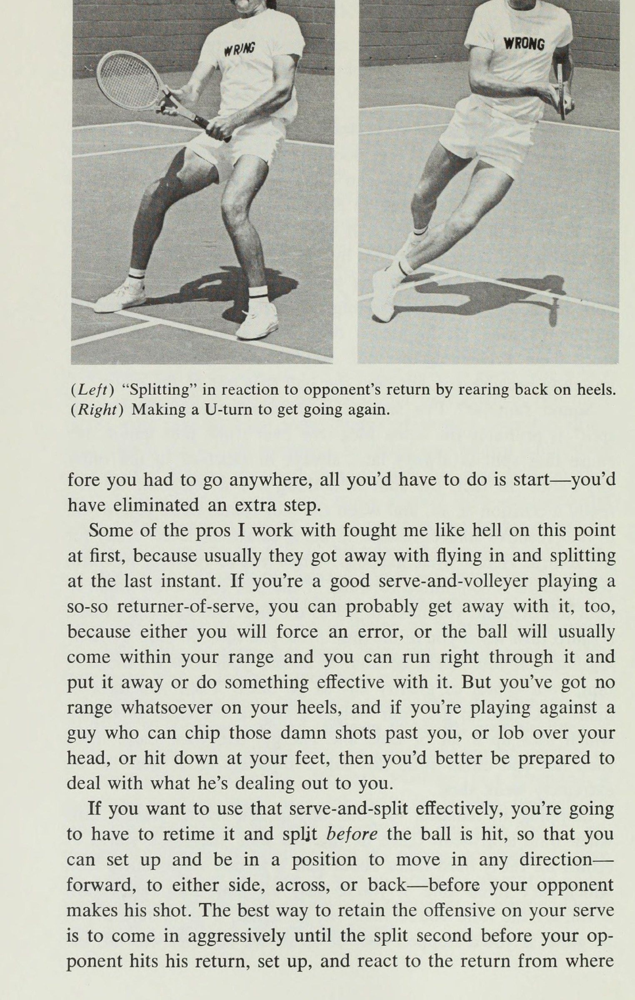
54 Quick Tennis với nó lúc đầu, dẫn đầu bằng sai tay, hoặc sai chân, hoặc cả hai. Vì vậy, trước tiên chúng tôi đi qua từng trục một vài lần để có cảm giác và sự phối hợp tay và chân chính xác. Sau đó, chúng tôi thực hiện chúng nhiều lần, từ đường biên này sang đường biên khác, để mô phỏng các cú đánh chéo sân. Vào thời điểm mọi người rời khỏi phòng khám, mọi người đều biết cách xoay chuyển, và không ai phải lãng phí thêm thời gian nữa khi bắt đầu sai lầm. Đứng ở tư thế sẵn sàng bên lề sân deuce.
Giả vờ như bạn vừa bị thu hút. Bạn có thể mong đợi cú đánh tiếp theo sẽ đi chéo sân. Xoay người, thả người, đẩy ra và chạy chéo sân đến bên lề sân quảng cáo, ghi nhớ kiểu sải chân của bạn, giữ trọng lượng ở phía trước và giữ ngón chân dẫn đầu. Từ bên lề sân deuce là chân phải, tay trái; từ bên lề sân quảng cáo, chân trái, tay phải. Hãy dành thời gian để tìm hiểu các thế xoay đúng cách và thực hành chúng cho đến khi chúng thành thói quen, bởi vì khi tham gia một trận đấu, bạn đang tập trung vào việc vượt qua đối thủ và giành điểm; không có thời gian để suy nghĩ về kỹ thuật, dù là các cú đánh hay động tác bằng chân.
Tôi biết một người phụ nữ đã tập động tác dẫn chân đó cho đến khi cô ấy gần như có thể thực hiện chúng trong khi ngủ. Sau đó, khi cô tham gia một lớp khiêu vũ Latin và những người còn lại trong lớp gặp rất nhiều khó khăn với những bước đòi hỏi động tác bằng chân tương tự, đối với cô, điều đó đã trở thành bản chất thứ hai. Tôi cũng biết một anh chàng, thay vì chạy bộ, lại chạy qua các trụ trong công viên trước khi thi đấu, vì vậy anh ta tập động tác chân khi khởi động. BẮT BUỘC BẮT BUỘC Bí quyết để không bị ném bóng là đuổi theo quả bóng không chút do dự.
Trong tích tắc đó khi bạn đang quyết định Tôi có thể làm được hay không?—-có lẽ bạn đã làm hỏng nó rồi. Niềm tin vào sự nhanh nhạy của bản thân và tập thói quen phản ứng ngay lập tức với mọi đường bóng sẽ giúp bạn có được những cú đánh mà bạn chưa bao giờ nghĩ mình có thể đạt được. Cách đây vài năm, khi tôi đang tập luyện với một nhóm vận động viên quần vợt chuyên nghiệp ở Puerto Rico, chúng tôi đã tính toán những cú thả bóng để xem họ mất bao lâu để đi qua lưới, bật lên và thoát ra khỏi lưới.
Động tác bằng chân trong trò chơi Bóng trong và bóng ngoài 55. Cú đánh rơi trung bình mất 1,8 giây trên sân đất nện. Bạn sẽ mất từ 1 đến 1,5 giây để chạy từ vạch cuối sân tới lưới nếu bạn có thể thoát khỏi vạch đích nhanh chóng và chạy được nửa chặng đường một cách đàng hoàng — điều này giúp bạn có thời gian rảnh rỗi. Đối với những người chuyên nghiệp, đây thực sự là một khám phá; Tôi đã thuyết phục họ rằng không có cú sút nào mà họ nên bỏ lỡ. Cầu thủ người Nam Phi Ray Moore nói với tôi, “Bây giờ, mỗi khi có một anh chàng nào đó hạ gục tôi, tôi luôn thẳng thừng vì điều đó.
Tôi sẽ không nói rằng kể từ đó tôi chưa bỏ lỡ một lần nào, nhưng ít nhất tôi cũng có đủ tự tin để thử nó.” Người phụ nữ luyện tập kỹ năng xoay người của mình rất siêng năng kể với tôi rằng những người bạn quần vợt của cô ấy thường nói: “Tất cả những gì chúng ta phải làm để giành được điểm là đánh rơi cô ấy”. Mặc dù cô ấy có những cú đánh nhưng cô ấy không thể tiếp cận được quả bóng; cô ấy sẽ chỉ nói “Cú đánh tốt” từ đường cuối sân thay vì chạy xuống. Khi cô ấy đã học được cách phản ứng tự động và đi đúng hướng, cô ấy không còn là nạn nhân nữa.
Trước đây cô ấy chưa nhận ra rằng mình có thể di chuyển nhanh đến vậy. Tôi nhận thấy rằng, nói chung, phụ nữ thấy việc tiến về phía trước khó khăn hơn so với việc di chuyển sang một bên, vì vậy đây là điều họ đặc biệt nên nỗ lực. Để di chuyển qua sân, bạn phải thay đổi hướng bằng cách xoay. Nhưng để thực hiện cú đánh rơi từ đường cuối sân, không cần phải xoay trục, vì bạn đã đối mặt với hướng mà bạn phải đi—về phía trước. Tuy nhiên, chân dẫn cho các cú đánh thả xuống giống hệt với chân dẫn cho các cú đánh chéo sân: chân phải của bạn dẫn về phía sân quảng cáo, chân trái của bạn dẫn về phía sân deuce, để trọng lượng của bạn có tác dụng với bạn bằng cách kéo cơ thể về phía trước.
Động tác tay cũng vậy. Và cũng giống như khi bạn chạy chéo sân, bạn thực sự phải cố gắng hết sức sau cú đánh thả bóng đó bằng cách thả trọng lượng của mình xuống và ở phía trước đầu gối dẫn đầu của bạn, giống như trong Bài tập khai thác. Tôi nhận thấy rằng khi bắt đầu tiến về phía trước, nhiều người chơi có xu hướng tự nhiên là bước hai bước: trong nỗ lực đẩy lùi, họ sẽ lùi lại một bước nhỏ, ba inch trước khi tiến về phía trước. Điều xảy ra là trước tiên họ đứng thẳng lên khi thấy bóng đã bị đánh, họ bị mất thăng bằng và sau đó họ lùi lại một bước nhỏ để lấy lại thăng bằng.
Điều này khiến trọng lượng của chúng lùi lại quá xa để chúng có thể hạ xuống và
56 Quần vợt nhanh về phía trước một cách nhanh chóng, và do đó họ nhận được bóng muộn. Ở tư thế sẵn sàng tốt để bắt đầu, với trọng lượng của bạn đủ về phía trước, sẽ giúp bạn không lùi bước nhỏ không cần thiết đó. Bạn sẽ bắt đầu nhanh hơn và bạn sẽ thực hiện được cú đánh rơi đó vào thời điểm thích hợp. Một vấn đề khác mà nhiều người chơi gặp phải khi thực hiện các cú đánh rơi là chạy qua các cú đánh của họ, bởi vì họ di chuyển quá mạnh đến mức không thể dừng lại khi đã đến đó.
Đây cũng thường là kết quả của việc xuất phát cao và muộn, sau đó phải tạo ra tốc độ trong suốt bước thứ năm, thứ sáu và thứ bảy để tiếp cận bóng, có nghĩa là bạn vẫn tăng tốc trong khi đánh, khiến bạn không thể cắt đứt nhanh chóng. Cách duy nhất để tránh lỡ cú đánh của bạn là bắt đầu thật nhanh và đến đó đủ sớm để dừng lại và chuẩn bị. Bây giờ, tôi biết điều này không phải lúc nào cũng có thể thực hiện được; đôi khi bạn sẽ chạy đua để thực hiện một cú sút quá tốt và lao vào lưới và mất điểm.
Nhưng hầu hết thời gian, bạn có thể đến đó đủ sớm nếu bạn không ngần ngại, nếu bạn ở mức thấp và nếu bạn duy trì kiểu sải chân của mình. Hãy nhớ trượt những cú đánh rơi trên đất sét, điều này sẽ giúp bạn tiết kiệm được thời gian quan trọng. BƯỚC CHÂN TRÊN MẠNG Khi bạn ở trên lưới, động tác thường diễn ra nhanh đến mức bạn không có thời gian để suy nghĩ về động tác chân chính xác. Bạn đang cố gắng tung bóng ra phía trước một cách mạnh mẽ và thường thì sự nhanh nhẹn và phản ứng nhạy bén sẽ là điểm mạnh chính của bạn.
Rất nhiều vấn đề mà các cầu thủ gặp phải ở lưới chỉ đơn giản là ở quá gần lưới, không cho mình đủ thời gian để phản ứng với bóng. Điều này có lẽ xuất phát từ việc cạnh tranh với những người chơi chuyên nghiệp, những người có thể cắm trại ngay trên lưới vì họ có thể xử lý tốc độ chơi ở đó. Hãy cố gắng đánh giá thực tế xem bạn là người chuyền bóng giỏi đến mức nào và lùi lại đủ xa để có cơ hội gây hại cho bạn. Hầu hết những người chơi trung bình có lẽ tốt nhất nên đứng ở giữa đường giao bóng và lưới.
Khoảng lùi đó đủ xa để bạn có thời gian phản ứng với bóng và đủ gần để thực hiện một cú vô lê sâu và tốt.
Động tác chân vào bóng trong và bóng ngoài 57 Điều cần thiết để thực hiện cú vô lê hiệu quả là duy trì tư thế sẵn sàng tốt giữa mỗi cú đánh. Về mặt thể chất, đó là tư thế sẵn sàng giống như ở đường cuối sân, nhưng về mặt tinh thần, bạn phải tỉnh táo và quyết liệt hơn nhiều. Giữ các ngón chân của bạn nảy hoặc nhảy một chút có thể giúp bạn luôn cảnh giác và sẵn sàng lao vào lưới, nhưng trừ khi bạn là người có tâm lý, hãy giữ thái độ bình đẳng và không dồn trọng lượng của mình trước khi đối thủ thực hiện cú đánh của anh ta.
Thông thường, việc phải thực hiện một bước nhảy vọt mạnh để đưa bóng trong lên lưới là kết quả của việc phạm lỗi sai cách: bạn nghĩ bóng sẽ đi sang bên phải, nó sẽ đi sang bên trái, và bạn chỉ cần làm bất cứ điều gì có thể để vượt qua đó. Vì thăng bằng của bạn đang đi theo một hướng và quả bóng đang đi theo hướng khác, bạn phải ném mọi thứ sang phía bên kia. Đối thủ của bạn thích nhìn thấy bạn lao vào lưới như vậy bởi vì bạn đang nói với anh ta rằng bạn hoàn toàn không kiểm soát được bất cứ điều gì anh ta đang làm với bạn ở trên đó.
Phục hồi ngay lập tức, cảnh giác và duy trì tư thế bình đẳng sẽ giảm thiểu đáng kể những tình huống đó và bạn sẽ không bị vượt qua dễ dàng như vậy nữa. Bóng trong trong lưới thường là cơ hội để bóng đi và động tác bằng chân đúng có thể giúp đảm bảo điều đó. Đó là động tác chân chéo tiêu chuẩn: nếu bóng ở bên trái của bạn, hãy bước tới trước và ngang bằng chân phải khi bạn vô lê: MỘT!—nhanh và dứt khoát. Nếu nó ở bên phải bạn, hãy bước vào đó bằng bên trái và BÙM!
Thường thì bạn có thời gian để thực hiện động tác bằng chân tốt ngay cả với quả bóng ngoài tầm (outer ball) nếu bóng không bị đánh quá mạnh. Sử dụng cùng các trục xoay mà bạn sẽ sử dụng ở bất kỳ nơi nào khác trên sân, đưa chân bên ngoài của bạn qua trước. Sự khác biệt chính là trên lưới, bạn không muốn thả người xuống quá thấp hoặc chuyển trọng lượng quá mạnh như đối với cú thả bóng hoặc cú sút chéo sân, bởi vì bạn phải đứng dậy để đánh bóng. Ở những nơi khác trên sân, bạn chỉ quan tâm đến việc chuyển động khi xoay trục.
Hơn bất cứ điều gì khác, cú đánh trước của bạn sẽ xác định đối thủ của bạn sẽ đánh trả, đánh tới, vượt qua hoặc vượt qua bạn. Nếu bạn thực hiện cú vô lê thực sự tốt, bạn không cần phải lo lắng; với một cú đánh khá tốt, rất có thể bạn sẽ nhận được một cú đánh trả khá tốt, một cú đánh mà bạn có thể xử lý được nếu giữ thăng bằng và phản ứng đủ nhanh. Nếu bạn đánh một cú yếu, bạn sẽ
58 Quần vợt nhanh một con vịt ngồi; sẵn sàng cho bóng đi dọc biên hoặc ngang qua sân. Hãy lựa chọn của bạn. Bạn sẽ may mắn khi có được cây vợt của mình bằng cách thực hiện một cú nhảy vọt và ném mình vào quả bóng. Bạn càng nhanh nhẹn thì bạn càng có nhiều khả năng thoát khỏi nó. QUA ĐẦU CỦA BẠN – NHẬN LOBS Mặc dù bản thân cú đánh từ trên cao cũng tương tự như cú giao bóng, nhưng các quy tắc để đánh bóng khi nó bay qua đầu bạn cũng giống như đối với bất kỳ cú đánh nào khác, chỉ hơn thế nữa, bởi vì cú đánh từ trên cao là một cú đánh mạnh và bạn cần mọi đòn bẩy mà bạn có thể có được: một cú đánh từ trên cao để phòng thủ thường có nghĩa là thảm họa đối với bạn.
Hầu hết các chi phí chung bị thiếu và yếu là do không chuẩn bị sẵn sàng đúng cách. Nếu bạn đang chạy về phía trước khi đối thủ tung ra một cú lốp bóng, bạn sẽ bị mắc kẹt; bạn phải dậm gót chân để dừng lại và hầu như bạn không thể quay lại đó kịp thời. Bạn nên kiễng chân và đứng yên trong khi đối thủ đánh, để khi nhìn thấy bóng bay lên, bạn có thể bắt đầu lùi lại ngay lập tức. Nếu cú lốp bóng không sâu lắm, cách tốt nhất để rút lui là xoay người sang ngang về phía lưới và lùi lại.
Đứng sang một bên cho đến khi bạn thực hiện xong cú đánh. Hãy gài vợt của bạn về phía sau khi bạn bắt đầu lùi lại, bởi vì việc vung vợt vào giây cuối cùng hoàn toàn vi phạm thời gian của hầu hết mọi người. Luôn để mắt đến quả bóng và quan sát nó—thẳng hàng—bằng tay còn lại của bạn. Nếu cú lốp bóng sâu—hơn sáu hoặc bảy bước—việc đạp lùi sẽ quá chậm. Bạn phải xoay 180 độ—quay lưng về phía lưới—thả và chạy. Nếu bạn có bất kỳ nghi ngờ nào về khả năng hỗ trợ cho cú lốp bóng của mình, ngay cả khi nó nông, đừng lãng phí thời gian để suy nghĩ về điều đó — chỉ cần quay lại và đi.
Luôn quay theo hướng bóng đang bay: chẳng hạn như nếu nó đánh qua vai trái của bạn, hãy xoay người và theo bóng sang trái, để mắt đến nó tốt nhất có thể qua vai của bạn. Bạn thực sự phải chạy đua lại, đánh bại nó ngay tại chỗ. Đến đó trước khi nó nảy lên, lùi xa hơn mức cần thiết để bạn có thể thiết lập với quả bóng trước mặt để có thêm đòn bẩy và kiểm soát tốt hơn. Nó cũng
Động tác chân vào bóng trong và bóng ngoài 59 dễ điều chỉnh về phía trước hơn nhiều so với việc lùi xa hơn vào thời điểm cuối cùng. Những cú đánh qua đầu luôn được coi là thuận tay nếu có thể, bởi vì rất ít người có thể đánh những cú đánh qua đầu trái tay với bất kỳ lực nào; vì vậy hãy đặt bóng về phía thuận tay của bạn ngay cả khi nó đánh về phía trái tay của bạn. Nếu bạn xem các giải đấu quần vợt, bạn có thể đã thấy một số vận động viên chuyên nghiệp lùi thẳng về phía sau, sau đó nhảy lên khi họ đánh đầu.
Cú đánh này trông ngoạn mục, nhưng cần có thời điểm hoàn hảo và đòn bẩy bổ sung mà bạn có được khi đánh theo cách này không đáng để từ bỏ một cú đánh an toàn hơn. Bạn nên cố gắng giữ ít nhất một chân trên mặt đất khi đánh một cú đánh từ trên cao, để đòn bẩy của bạn không bị nghiêng sang lưới. Lần duy nhất để nhảy lên khỏi mặt đất để thực hiện cú đánh trên cao là khi bạn đang ở trên lưới và chỉ có thể tiếp cận nó bằng cách nhảy lên để lấy nó hoặc nếu bạn đánh nhầm quả bóng và không còn lựa chọn nào khác.
TRẢ LẠI PHỤC VỤ Rất nhiều người chờ đợi cú giao bóng đó như thể cuộc sống của họ đang bị thử thách. Họ làm hỏng các pha trả bóng vì họ sợ hãi và vì họ không biết phải làm gì với đôi chân và cơ thể của mình khi nhìn thấy bóng lao về phía mình. Khi bạn nhận giao bóng, bạn có những lợi thế nhất định; tận dụng chúng. Bạn có nhiều thời gian để chuẩn bị trước khi đối thủ được phép giao bóng; bạn đang đứng yên, điều này làm cho việc định giờ bóng trở nên đơn giản hơn; và bạn biết rằng quả bóng chỉ có thể tiếp đất trong một khu vực được xác định rõ ràng nhất định, ô giao bóng.
Mặt khác, cú giao bóng (cùng với cú đánh qua đầu) là cú đánh nhanh nhất, mạnh nhất trong quần vợt—90 đến 95 dặm một giờ không phải là hiếm đối với một tay vợt nam giỏi ở câu lạc bộ—và nó có thể ở dạng xoay tròn, cắt lát hoặc phẳng. Điều này đòi hỏi một tư thế sẵn sàng tối thượng: một nền tảng vững chắc; dáng người thấp, hướng về phía trước; và trọng lượng của bạn dồn về phía trước trên mu bàn chân để kiểm soát, giữ thăng bằng và nhanh chóng tối đa. Nếu bạn nhận giao bóng bằng hai chân chụm lại, đầu gối cứng đơ, trọng lượng dồn về phía sau và bàn chân bẹt (đó là cách mà rất nhiều người chờ đợi giao bóng), bạn sẽ bị choáng ngợp bởi một cú giao bóng.
60 Giao bóng cứng quần vợt nhanh. Càng nhiều càng tốt, bạn muốn giống như một bức tường khi quả bóng đó lao tới. Đối thủ giao bóng càng khó thì bạn càng phải ở vị trí thấp hơn, bởi vì một quả bóng đánh mạnh thường là một quả bóng thấp. Việc đưa lên nếu cần thiết cũng dễ dàng hơn nhiều so với việc thả xuống khi thời gian rất ngắn. Hầu hết các vấn đề mà mọi người gặp phải khi trả giao bóng là kết quả của việc phản ứng quá chậm. Đặc biệt là ở bên trái tay, nhiều người chơi đợi bóng đến với họ trước khi họ chuẩn bị sẵn sàng, rồi đột nhiên nó ở ngay trên đầu họ và họ phải chật vật khi đánh.
Để có thể phản ứng nhanh chóng, bạn nên đợi ở điểm giới hạn, ở giữa các đường bay xa nhất có thể có của quả bóng. Nếu người giao bóng thuận tay phải, cú giao bóng của anh ta sẽ cong ra ở phần sân thứ hai và hướng về trung tâm của phần sân quảng cáo. Do đó, để nhận giao bóng của anh ta ở sân deuce, bạn nên đứng khoảng hai feet về phía bên trái giao điểm của đường đơn và đường cuối sân, và trong sân quảng cáo, ở giữa đường trung tâm và giao điểm của đường đơn/vạch cuối sân (baseline).
Để nhận quả giao bóng của người thuận tay trái, điều ngược lại là: đứng xấp xỉ ở giữa khi anh ta giao bóng ở phần sân thứ hai và cách khoảng 2 feet về phía bên phải của đường đánh đơn trong phần sân quảng cáo.* Bạn nên ở càng gần càng tốt (đôi khi cách đường cuối sân 4 feet càng gần càng tốt), vì một số lý do: (a) Nếu bạn có thể đưa bóng lên cao, nó sẽ chưa phát triển hết độ xoáy. (b) Bạn cũng sẽ gây áp lực lên người giao bóng, khiến anh ta có ít thời gian hơn để chuẩn bị cho cú đánh tiếp theo hoặc vào lưới, điều này mang lại cho bạn cơ hội đánh trả tốt hơn mức cần thiết.
(c) Ngoài ra, bạn càng ở gần lưới để trả bóng thì bạn có thể có được góc đánh hen leet càng tốt | ; —đường đơn * vạch cuối sân (baseline) XO tôi xX O Ad Court Deuce Court Key O: nhận giao bóng của người thuận tay phải X: nhận giao bóng của người thuận tay trái
Động tác chân vào Bóng trong và Bóng ngoài 61 trong cú đánh của bạn và bạn có thể vào lưới càng nhanh. Điều này áp dụng cho cả quả giao bóng thứ nhất và thứ hai của đối thủ; rõ ràng là việc hoàn thành ở giây thứ hai sẽ dễ dàng hơn, điều này sẽ có tốc độ chậm hơn và thường ít chiều sâu hơn. Ngay khi bạn nhìn thấy bóng đang bay về phía nào, hãy chuyển trọng lượng của bạn sang phía đó và lấy lại vợt. Động tác bằng chân để trả giao bóng hoàn toàn giống với bất kỳ cú đánh nào khác. Nếu đó là một quả bóng trong thân người (inner ball), đi vào phía bên phải của bạn (cho dù đó là cú trái tay hay thuận tay sẽ phụ thuộc vào việc bạn thuận tay phải hay tay trái), thì đó là cây trồng bằng chân phải và sau đó bước về phía trước vào quả bóng bằng tay trái.
Nếu nó nằm ngoài phạm vi của bạn ở bên phải, thì đó là một cú dẫn bóng bằng chân trái, do đó, một lần nữa, bạn đặt chân phải lên và bước vào bóng bằng chân trái. Nếu bạn định đánh sang bên trái, hãy trồng chân trái cho bóng trong thân người (inner ball), đặt chân phải cho bóng ngoài tầm (outer ball). Khi tôi dạy động tác trả giao bóng này, đôi khi lúc đầu tôi nhận được rất nhiều lời chỉ trích: “Ai có thời gian để suy nghĩ về tất cả động tác chân này, Hines, khi bóng đang lao tới tôi với tốc độ hàng triệu dặm một giờ?” Chà, tất cả những gì tôi có thể nói là, bạn phải làm gì đó với đôi chân của mình, vì vậy bạn cũng có thể làm điều gì đó đúng đắn với chúng.
Mọi người thường chấp nhận cách suy nghĩ của tôi sau một thời gian, khi họ thấy nó hiệu quả. Bạn nên làm gì khi đối thủ của bạn chuẩn bị giao bóng? Trong khi chờ đợi quả giao bóng đó, bạn không nhất thiết phải đứng yên. Bạn có thể làm bất cứ điều gì cảm thấy thoải mái và giúp bạn thư giãn, miễn là bạn không từ bỏ bất cứ điều gì. Một cú lắc lư qua lại dễ dàng có thể làm giảm căng thẳng và giúp bạn tập trung, giống như cách một con rắn hổ mang lắc đầu trước khi sẵn sàng tấn công.
Một số người, đặc biệt là những người mới bắt đầu, di chuyển quá mức, chỉ bắt chước những gì họ thấy những người chơi có kinh nghiệm hơn đang làm mà không thực sự nhận được bất kỳ lợi ích nào từ việc đó. Đừng nảy lên hoặc lắc lư quá nhiều đến mức bạn có nguy cơ bị mất thăng bằng. Bao nhiêu là quá nhiều? Nếu bạn nảy lên nảy xuống và ở trên không khi người giao bóng đánh bóng thì như vậy là quá nhiều. Hãy nhớ luôn hồi phục sau khi trả giao bóng. Tôi thường thấy người chơi đánh trả tốt rồi chỉ đứng đó trầm trồ
62 Quick Tennis tự mình đánh, chắc chắn là thắng. Sau đó, khi họ đang đứng thẳng và bằng chân phẳng, quả bóng bay vèo trở lại và họ chưa sẵn sàng đón nhận. Luôn cho rằng bóng đang quay trở lại và đi vào trong cho đến khi điểm kết thúc.
Chương 7: Kết hợp tất cả lại với nhau: Net & Overhead
7 Kết hợp tất cả lại với nhau Mục tiêu chính của cuốn sách này là giúp bạn cải thiện khả năng di chuyển trên sân để bạn có thể tiếp cận gần như bất kỳ quả bóng nào bay qua lưới với khả năng kiểm soát và giữ thăng bằng cần thiết để thực hiện cú đánh tốt nhất mà bạn có khả năng đánh, thay vì đánh trượt hoàn toàn hoặc phải vật lộn, đánh từ vị trí xấu và chỉ hy vọng bóng bay đi vào trong vì bạn đã mất quá nhiều thời gian để tiếp cận nó. Các kỹ thuật và bài tập trong cuốn sách này được thiết kế để giúp bạn mở rộng phạm vi thoải mái của mình, lĩnh vực mà bạn có thể di chuyển dễ dàng và đánh những cú đánh chắc chắn, tấn công.
Khi bóng nằm trong phạm vi thoải mái của bạn (cái mà tôi gọi là quả bóng trong thân người (inner ball)), cho dù nó ở phía trước bạn, phía sau bạn hay ở hai bên, bạn có thể đến đó với nhiều thời gian để chuẩn bị, đặt chân trước khi vung vợt và tấn công nó ở phía trước bạn, dồn trọng lượng vào cú đánh. Giới hạn phạm vi thoải mái của bạn được xác định bởi nơi bạn phải bắt đầu chật vật để tiếp cận quả bóng và buộc phải đánh nó một cách phòng thủ. Bạn có thể thấy rằng phạm vi của bạn thay đổi theo từng ngày.
Một số ngày, thời gian của bạn không đúng, bạn hơi uể oải, chân bạn không thể di chuyển, hoặc bất cứ điều gì; phạm vi không chỉ phụ thuộc vào khả năng di chuyển của bạn mà còn phụ thuộc vào sự tự tin và động lực của bạn để đuổi theo một quả bóng cụ thể: bạn càng đi xa, bạn càng nhận được nhiều.
64 Quần vợt nhanh Hầu hết những người chơi trung bình đều có phạm vi khoảng 8 feet ở hai bên và phía sau họ, và 12 đến 15 feet ở phía trước họ. Rõ ràng, những người chơi nâng cao có tầm đánh xa hơn, khả năng bao quát sân tốt hơn so với những người mới bắt đầu. Nhưng trên thực tế, tất cả những người chơi quần vợt đều giỏi vuốt bóng hơn là di chuyển theo nó, bởi vì nếu bạn phải di chuyển cùng lúc với việc quả bóng đang chuyển động thì việc căn thời gian sẽ phức tạp hơn nhiều so với khi bạn đứng yên.
Cho dù cú đánh của bạn có tốt đến đâu, bạn vẫn sẽ luôn gặp rắc rối trên sân trừ khi chuyển động có lợi cho bạn. Các vấn đề về chuyển động và động tác bằng chân, hơn bất cứ điều gì khác, là nguyên nhân khiến các cầu thủ hạng hai trở thành hạng hai. Không có phạm vi của ai bao trùm mọi góc của sân. Ngay cả Jimmy Connors đôi khi cũng bị đuổi khỏi sân và không thể quay lại kịp để thực hiện cú sút sang phía bên kia. Nhưng không gì có thể làm lung lay sự tự tin của đối thủ hơn là nhìn bạn chạy tới và tấn công “kẻ chiến thắng” của hắn. Anh ấy sẽ nghĩ rằng không có gì mà bạn không thể với tới, và anh ấy sẽ bắt đầu tự hỏi mình phải làm gì với quả bóng chết tiệt đó để vượt qua bạn—và sau đó chứng kiến anh ấy bắt đầu mắc lỗi khi thử.
Nếu muốn tăng phạm vi thoải mái của mình, bạn nên làm theo năm bước dưới đây cho mỗi lần chụp. Tôi sẽ giải quyết lần lượt từng người. 1. Đứng yên, ở vị trí sẵn sàng tốt, tại vị trí trên sân sẽ cho bạn cơ hội tốt nhất để đuổi theo bất cứ thứ gì đối thủ có thể đánh vào bạn, trước khi đối thủ đánh bóng. 2. Phản ứng ngay lập tức khi anh ta đánh nó. 3. Di chuyển nhanh theo đường bay của bóng, xoay người và sử dụng kiểu sải chân của bạn để có được một quả bóng dài.
4. Thiết lập vị trí đánh của bạn (chân ngoài trụ vững, sẵn sàng tiếp bóng) càng sớm càng tốt trước khi bạn đánh, thực hiện mọi điều chỉnh cuối cùng cần thiết để kiểm soát quả bóng trong thân người (inner ball) và đánh nó ở mức độ thoải mái nhất của bạn, có thể là chiều cao ngang lưng. 5. Sau khi thực hiện cú đánh của mình, ngay lập tức thu hồi và quay trở lại phần sân có vẻ như cho bạn cơ hội bình đẳng để phản ứng và kiểm soát cú đánh tiếp theo của đối thủ, một lần nữa vẫn giữ tư thế hung hãn.
Đưa tất cả lại với nhau 65 1. Dừng lại trước khi đối thủ đánh bóng là một trong những chìa khóa chính để bao quát sân. Bạn có thể nghĩ rằng mình luôn tiến bộ khi chạy, nhưng điều đó không đúng. Bạn có toàn bộ phạm vi thoải mái của mình khi bạn đứng yên. Trên thực tế, nó gần như bằng không khi bạn đang chuyển động, vì động lượng đang đẩy bạn về phía trước, khiến bạn không thể dừng lại hoặc đổi hướng nhanh chóng. Ví dụ: nếu bạn đang tiến về phía trước khi đối thủ của bạn đánh bóng ở cuối đường biên, bạn sẽ phải nghiêng người về phía nó - và bạn sẽ đến đó muộn và mất thăng bằng.
Thay vào đó, nếu bạn đứng yên và ở vị trí sẵn sàng trong khi anh ta đánh, bạn có thể chỉ cần xoay người và chạy; nếu số dư của bạn không bị nghiêng sang bên này hay bên kia, bạn có thể di chuyển nhanh chóng theo bất kỳ hướng nào. Việc dừng lại và chuẩn bị trước khi đối thủ thực hiện cú đánh của anh ta là cực kỳ quan trọng — cho dù bạn đang nhận giao bóng, đánh từ đường cuối sân hay vô lê lên lưới. Một trong những tiên đề của môn quần vợt là sau khi thực hiện cú đánh của mình, bạn phải quay trở lại giữa sân.
Tôi đã thấy những người chơi tuân theo quy tắc này một cách cứng nhắc đến mức họ không nhận ra rằng mục tiêu của trò chơi là đi đến bóng chứ không phải quay lại giữa sân. Giả sử bạn vừa đánh trả một cú thuận tay rộng. Nếu bạn đang chạy trở lại trung tâm và đối thủ của bạn lại tiến sâu vào cùng một vị trí, rõ ràng là bạn sẽ bị bắt vì đi sai hướng. Bạn đã trở lại vị trí nhưng bóng ở một nơi khác. Bạn nhận được điểm A cho phần lý thuyết, vì ở nơi bạn “phải” đến, nhưng điểm F vì mất điểm—bạn đã chơi trên sân hơn là chơi bóng.
Thay vào đó, bạn nên thực hiện cú đánh của mình, chạy càng xa về điểm giới hạn—vị trí sẽ cho bạn cơ hội tốt nhất để đuổi theo cú đánh tiếp theo của đối thủ, thường là (nhưng không phải luôn luôn) trung tâm của đường cuối sân hoặc lưới—nếu có thể, đồng thời dừng lại và thiết lập một vị trí sẵn sàng tấn công trước khi đối thủ thực hiện cú đánh của mình. Sau đó, ngay cả khi bạn chỉ mới quay trở lại trung tâm được nửa đường, bạn vẫn ở vị trí tốt hơn để tiếp cận quả bóng được đánh phía sau bạn và bạn cũng ở vị trí xuất phát tuyệt vời để xoay người và đánh lái nhanh nếu anh ta đánh vào trái tay của bạn.
Cam kết về cân nặng của bạn cũng quan trọng như việc bạn ở cách bóng bao xa trong việc xác định xem có hay không
66 Quần vợt nhanh bạn sẽ đạt được nó, và không lúc nào cân nặng của bạn lại dồn ép hơn khi bạn đang chạy. Đó là vấn đề về tỷ lệ phần trăm. Bạn muốn nắm bắt được bất cứ điều gì mà đối thủ có thể đánh vào bạn. Thời điểm bạn quay lưng lại với một phần sân và bắt đầu chạy, bạn đang bỏ cuộc từng bước phía sau mình. Động lực đang đưa bạn đi theo một hướng và đó là hướng đi chung duy nhất mà bạn sẽ đạt được hiệu quả. Động lượng của bạn càng lớn thì càng khó dừng lại hoặc chuyển hướng chuyển động của bạn về phía quả bóng, vì vậy ngay cả khi bạn có cơ hội đảo ngược hướng và quay trở lại, bạn vẫn sẽ phải mất rất nhiều thời gian để tiếp cận quả bóng đó.
Chắc chắn rồi, đôi khi bạn không có lựa chọn nào khác. Bạn thực hiện một cú đánh yếu, đối thủ của bạn đã vượt qua được và bạn chỉ cần đoán xem anh ta có khả năng đánh vào đâu và đến đó nhanh chóng - đó là cơ hội duy nhất của bạn. Nhưng trong hầu hết các trường hợp, bạn có thể kiểm soát được tình huống ở một mức độ nào đó, điều mà bạn sẽ đánh mất khi chạy trốn trong khi đối thủ của bạn đang đánh bóng với hy vọng rằng cú đánh của anh ta sẽ đi theo hướng đó. Đặc biệt nếu bạn vừa thực hiện một cú đánh tốt – thay đổi tốc độ, khiến đối thủ mất vị trí, đánh vào điểm yếu của anh ta – anh ta sẽ không thể đánh vào nơi mình muốn, nhưng rất có thể anh ta có thể lén đánh lén bạn sau lưng bạn nếu bạn để anh ta sơ hở.
Nếu bạn lao về giữa sân trong khi anh ấy đang đánh bóng, thì bạn đang mất quyền kiểm soát điểm. Quả bóng có thể cách bạn ba feet, nhưng nếu bạn đi sai đường, nó có thể cách bạn cả dặm. Chắc chắn, nếu bạn có thời gian, và bạn thường làm vậy sau khi đánh, hãy quay trở lại vị trí ở giữa đường bay có thể có của quả bóng, vị trí cho phép bạn có cơ hội ngang nhau để tiếp cận bất cứ thứ gì đối thủ có thể đánh tiếp theo, cho dù đó là cú thuận tay, cú trái tay, cú thả bóng hay lốp bóng, mà không để lại cho mình một khoảng lãnh thổ quá lớn để bao quát ở một bên và một khu vực cực kỳ nhỏ ở bên kia.
Nhưng bạn nên nhường một chút lãnh thổ trước mặt để có một thế trận sẵn sàng vững chắc, hung hãn trong khi đối thủ của bạn đang đánh. Đừng bỏ bóng để giành một chỗ trên sân!
Kết hợp tất cả lại với nhau 67 RUSH MẠNG Bạn là một người giao bóng và chuyền bóng năng nổ, hoặc bạn muốn trở thành người như vậy, và bạn vừa tung ra cú giao bóng lớn, bùng nổ của mình. Bạn đang bay vào lưới nhanh nhất có thể mà đôi chân có thể mang theo vì bạn muốn thực hiện cú vô lê đầu tiên từ càng gần càng tốt để có thể đánh bóng sâu hoặc tạo góc cho bóng đi. Khi đối thủ của bạn thực hiện cú trả bóng của anh ta, bạn phản ứng với cú đánh của anh ta bằng cách “tách ra”' - dừng đà tiến về phía trước của bạn bằng cách dang rộng hai chân và đi xuống bằng cả hai gót chân.
Sự trở lại của anh ấy đang đi đúng hướng. Bạn lao tới tìm nó, nhưng nó đã biến mất. Hoặc anh ta ném nó qua đầu bạn và bạn cứ mắc kẹt ở đó, hét lên và dừng lại bằng gót chân. Hoặc cú vô lê của bạn không ổn định vì bạn như vậy và bóng bay ra khỏi sân. Nghe có vẻ quen thuộc? Tôi đã nhìn thấy nó hàng ngàn lần. “Giao bóng và chia điểm” có lẽ là ý tưởng tồi tệ nhất từng xuất hiện trong quần vợt, bởi vì việc chia giao bóng đó luôn muộn, luôn phản ứng với cú đánh của đối phương. Thực tế, sự chia rẽ không là gì ngoài một phản ứng; đó thực sự không phải là một vị trí, và khi bóng bay trở lại, bạn vẫn ở tư thế phản ứng đó, thay vì đã sẵn sàng và sẵn sàng cho cú đánh trả.
Đây là điều xảy ra: khi bạn chạy về phía trước, trọng lượng của bạn dồn về phía trước. Nếu bóng đi vài thước về bên trái hoặc bên phải của bạn, bạn phải tránh sang một bên. Nhưng bạn không thể rẽ ngoặt khi đang di chuyển. Trước tiên, bạn phải dừng lại bằng cách kiễng gót chân ra sau, vì để hấp thụ động lượng về phía trước, trọng tâm của bạn phải quay trở lại. Sau đó, bạn phải quay đầu lại để đưa trọng lượng của mình đi đúng hướng, việc này tiêu tốn rất nhiều thời gian và sức lực, và sau đó thường xuyên là bạn trượt bóng hoàn toàn hoặc tốt nhất là đánh một cú cực kỳ yếu.
Dừng lại để phản ứng với cú trả bóng của đối thủ sẽ lãng phí thời gian khi thời gian rất quan trọng. Khi anh ấy đánh bóng, đồng hồ sẽ bắt đầu. Một cú đánh trả khá mạnh sẽ mất khoảng nửa giây để đi được 30 feet, không nhiều thời gian. Nếu bạn bận dừng lại sau khi đạt được cú quay trở lại đó, thì đến lúc bạn sẵn sàng quay lại, một cú quay trở lại tốt sẽ không còn nữa. Nếu bạn dừng lại và chuẩn bị trước khi bóng được đánh, hãy-
(Trái) “Tách ra” để phản ứng lại sự trả đũa của đối thủ bằng cách lùi lại bằng gót chân. (Phải) Quay đầu xe để đi tiếp. trước khi bạn phải đi bất cứ đâu, tất cả những gì bạn phải làm là bắt đầu—bạn sẽ loại bỏ được một bước bổ sung. Một số chuyên gia mà tôi làm việc cùng đã đấu tranh với tôi rất nhiều về điểm này lúc đầu, bởi vì họ thường thoát khỏi việc lao vào và chia rẽ vào giây phút cuối cùng. Nếu bạn là một vận động viên giao bóng và vô lê giỏi chơi một người trả giao bóng tầm thường, bạn cũng có thể thoát khỏi điều đó, bởi vì hoặc bạn sẽ mắc lỗi hoặc bóng thường sẽ đi vào phạm vi của bạn và bạn có thể chạy thẳng qua nó và cất nó đi hoặc làm điều gì đó hiệu quả với nó.
Nhưng bạn không có tầm bắn nào ở gót chân, và nếu bạn đang thi đấu với một anh chàng có thể vượt qua bạn những cú đánh chết tiệt đó, hoặc lốp bóng qua đầu hoặc đánh xuống chân bạn, thì tốt hơn hết bạn nên chuẩn bị đối phó với những gì anh ta đang đối phó với bạn. Nếu bạn muốn sử dụng cú giao bóng và chia bóng đó một cách hiệu quả, bạn sẽ phải tính thời gian lại và chia bóng trước khi bóng được đánh, để bạn có thể thiết lập và ở vị trí di chuyển theo bất kỳ hướng nào— tiến lên, sang hai bên, ngang hoặc lùi — trước khi đối thủ của bạn thực hiện cú đánh của mình.
Cách tốt nhất để duy trì thế tấn công trong cú giao bóng của bạn là tấn công mạnh mẽ cho đến tích tắc trước khi đối thủ của bạn thực hiện cú trả bóng, thiết lập và phản ứng với cú trả bóng từ vị trí
Lao đi tìm bóng. bạn là. Giành được càng nhiều đất càng tốt; hầu hết thời gian, bạn sẽ có thể thực hiện ba, bốn hoặc năm bước, tùy thuộc vào cú giao bóng của bạn — cú giao bóng của bạn càng nhanh thì bạn sẽ càng nhận được ít thời gian hơn vì bạn sẽ có ít thời gian hơn. Một người như Tanner thật may mắn nếu anh ta bước được ba bước trên cỏ. Khi bạn kết thúc cú giao bóng của mình, bạn ở tư thế thấp và tiến về phía trước. Hãy đi theo dòng chảy tự nhiên của trọng lượng cơ thể bạn, để nó kéo bạn về phía trước. Nếu bạn ở tư thế thấp, không đứng thẳng sau khi giao bóng, bạn sẽ có thể tiến sâu hơn vào sân.
Nói cách khác, hãy dừng lại để bắt đầu nhanh — khởi đầu nhanh giống như ở hai bước đầu tiên của một cuộc chạy dài: MỘT-HAI. Lúc đầu, bạn có thể sẽ không thâm nhập đủ sâu để làm được nhiều việc với cú vô lê đầu tiên của mình, nhưng ngay cả khi bạn không đến được vạch giao bóng, hãy học cách sống với những gì bạn có thể nhận được. Tốt nhất là bạn nên nhường lãnh thổ để có vị trí tốt và ổn định để có thể tấn công bóng. Về lâu dài, bạn sẽ không từ bỏ bất kỳ cơ sở nào nếu dừng lại sớm hơn một chút.
Điều sẽ xảy ra là bạn sẽ có thể thực hiện được ba hoặc bốn bước trước khi phải dừng lại và thiết lập. Mặc dù điều này sẽ đưa bạn đến phía sau vạch giao bóng, nhưng vì phản ứng của bạn với bóng sẽ hướng về phía trước nên cuối cùng bạn sẽ
70 Quick Tennis đánh cú vô lê đầu tiên của bạn ở phía trước vạch giao bóng, giống như bạn đã làm khi chạy qua vạch giao bóng. Đồng thời, bạn sẽ giảm đáng kể khả năng bị bất kỳ loại bóng nào vượt qua hoặc làm rối tung ngoài phạm vi của mình. Khi bạn luyện tập nó và trở nên mạnh hơn và nhanh hơn, bạn sẽ thấy mình đánh bóng có kiểm soát ở đúng vị trí mà bạn đã cố gắng chạm tới trước đó. Đây là một cách để bạn bỏ thói quen bay vào lưới sau khi giao bóng, chạy cho đến khi bóng được đánh và tiếp đất bằng gót chân với đầu gối cứng đơ.
Tôi đã sử dụng thành công với nhiều chuyên gia. Bạn sẽ cần hai người bạn, một người trả giao bóng và một người xem. Đầu tiên, hãy thực hành giao bóng và đến chỉ trong hai bước trước khi chuẩn bị cho cú trả bóng của bạn bạn, hãy nhớ giữ nguyên tư thế thấp sau khi giao bóng để bắt đầu nhanh chóng. Chỉ chạy hai bước sẽ giúp bạn có nhiều thời gian để chờ bóng. Bạn sẽ ở quá xa để làm bất cứ điều gì có giá trị với nó; điều này chỉ nhằm cung cấp cho bạn ý tưởng về việc thiết lập trước hơn là khi bóng được đánh.
Khi bạn đã rèn luyện bản thân dừng lại sau hai bước, hãy tăng lên ba bước. Đến bước thứ ba hoặc thứ tư, bạn sẽ tiến gần đến thời điểm thực hiện cú trả bóng. Lúc này, hãy để người xem hướng dẫn. Anh ấy nên hét lên "Ngay bây giờ!" ngay khi anh ta thấy người nhận sắp trả lời (để bạn có thời gian phản ứng với giọng nói của anh ta). Hãy dừng lại và thiết lập ngay khi bạn nghe thấy “Ngay bây giờ!” (Tôi nhận thấy rằng việc để bên thứ ba hét lên “Ngay bây giờ” sẽ hiệu quả hơn việc để người nhận thực hiện cả hai việc, bởi vì rất khó để đáp lại và hét lên tốt cùng một lúc.
) Hãy thực hiện bài tập này nhiều lần nếu cần thiết để cảm nhận về nó, cho đến khi bạn có thể dừng lại và thiết lập mọi lần trước khi cú trả bóng được thực hiện. Khi bạn đã làm đúng, hãy thực hành nó mà không cần bạn bè của bạn hét lên “Ngay bây giờ!” Bạn sẽ thấy giá trị vào lần tới khi ai đó đánh trả cú giao bóng tốt của bạn. 2. Phản ứng ngay lập tức. Về cơ bản, bộ não của bạn có hai cách để nói với cơ thể bạn rằng tốt hơn hết là nó nên tự đưa mình lên lưới cho cú đánh rơi đó, ngay lập tức. Nó dự đoán đối thủ của bạn sẽ đánh cái gì và ở đâu, và nó phản ứng với quả bóng sau khi nó được đánh.
Phản ứng ngay lập tức và tự động với mọi quả bóng đối thủ của bạn đánh.
72 Dự đoán quần vợt nhanh chỉ có thể được cải thiện nhờ kinh nghiệm chơi. Tôi ước gì có thể, nhưng tôi không thể dạy điều đó cho bạn trong cuốn sách này. Tuy nhiên, nếu bạn tạo thói quen phản ứng tự động với mỗi quả bóng đối thủ đánh, cho dù bạn nghĩ nó có đi vào lưới hay không, thì phản ứng của bạn sẽ trở thành phản xạ và bạn sẽ đánh được hầu hết các quả bóng dù bạn có đoán trước được hay không. Quan sát quả bóng từ một vị trí sẵn sàng tốt, xem nó sẽ đi đến đâu, phản ứng với tình huống đó; sau đó nếu bóng đi ra ngoài hay vào lưới, hoặc nếu cú sút quá tốt, hãy làm nguội nó.
Phản ứng chỉ mất một phần giây; bạn luôn có thể cắt nó nếu bóng đi ra ngoài bằng cách đứng thẳng ra khỏi vị trí của bạn. Nhưng nó có thể đã đi vào lưới, trong khi bạn đang quyết định có nên di chuyển hay không, do dự vì bạn không nghĩ rằng việc nỗ lực cho một quả bóng có thể sắp đi ra ngoài là đáng giá. Đã bao nhiêu lần bạn đứng bằng chân trên đường biên đó, chắc chắn rằng quả bóng sẽ dài, rồi nhìn nó chạm ngay vạch vôi và sút ra ngoài tầm với của bạn?
Làm bạn phát điên lên phải không? Làm tôi cũng phát điên. Phản ứng với mọi cú đánh của đối thủ mà không do dự và không đứng dậy khỏi vị trí cho đến khi điểm hoàn toàn kết thúc. 3. Đến đó nhanh chóng. "MỘT HAI! CHÂN NHANH!" Một người phụ nữ đã tới phòng khám của tôi đã trích dẫn tôi trên trang bìa của cô ấy, vì vậy bây giờ tôi sẽ trích dẫn lại cho cô ấy. 4. Dừng lại và thiết lập càng sớm càng tốt trước khi bạn đánh. Có hai thời điểm trong một thời điểm mà bạn nên cố gắng đứng yên: khi đối thủ đang đánh và khi bạn đang đánh.
Ví dụ: khi bạn đang có một pha đánh bóng dễ dàng, bạn và bạn của bạn chỉ đánh nhau, bạn có thể không gặp khó khăn gì trong việc thiết lập và đánh bóng, nhưng khi bạn phải chạy theo nó, bạn có thường chạy ngay qua cú đánh của mình thay vì ở đó sẵn sàng và chờ đợi không? Tôi sẽ không ngạc nhiên nếu bạn lười biếng và chọn sai thời điểm. Nói chung, những người chơi trung bình chỉ chạy đủ mạnh để có thể thực hiện được cú đánh của mình và đánh trúng chúng khi đang chạy.
Ví dụ: đối thủ của bạn đánh bạn một cú lốp bóng nhỏ. Bạn chậm rãi nhảy lại phía sau và trước khi bạn kịp nhận ra thì quả bóng đã lao xuống phía sau bạn. Thay vào đó bạn nên làm gì
(Trái) Đến đó nhanh chóng: MỘT-HAI! (Phải) Chuẩn bị cho cú đánh của bạn càng sớm càng tốt. nói cách khác, đã hối hả, chuẩn bị và ở đó chờ bóng, nói cách khác, tính toán lại thời gian cho nó—điều phối thời gian của bạn với thời gian của quả bóng—và tấn công nó khi bạn ở vị trí hoàn hảo để thực hiện cú đánh tốt nhất mà bạn biết cách thực hiện. Dù trình độ quần vợt của bạn là gì, bạn đều có thể thực hiện những cú đánh đẹp nhất khi bóng đánh thẳng vào bạn. Vì bạn đang đứng yên nên bạn có nhiều thời gian để xoay người, đứng vững và tiến về phía trước trong cú đánh của mình.
Tuy nhiên, không dễ để tìm được một đối thủ đáng chơi đủ hào phóng hoặc đủ ngu ngốc để đánh thẳng vào bạn. Nhưng nếu bạn có thể đứng yên - sẵn sàng và chờ đợi quả bóng trước khi nó đến đó - thì điều đó giống như quả bóng đã đánh thẳng vào bạn ngay từ đầu. Bạn mang theo phạm vi thoải mái của mình nếu bạn bắt đầu ở vị trí sẵn sàng/chơi tốt—với tư thế quyết liệt, thấp—bắt đầu nhanh, đến nơi bóng sẽ đi và chuẩn bị đúng cách càng sớm càng tốt.
5. Phục hồi ngay sau mỗi lần bắn. Nếu bạn luôn cho rằng đối thủ của bạn sẽ trả bóng cho đến khi điểm
Nếu bạn bắt chéo chân khi lê bước, bạn sẽ chẳng đi đến đâu cả.
Put It All Together pe) hoàn toàn kết thúc, bạn sẽ không bao giờ bị bắt gặp đang ngủ trưa. Thực hiện cú đánh của bạn, thu hồi thấp và tiến về phía trước, sau đó quay trở lại sân bằng cách chạy hoặc xáo trộn — nhảy sang một bên ở vị trí thu hồi — sẽ tốt hơn nếu bạn không phải đi quá xa vì điều đó không ảnh hưởng đến khả năng giữ thăng bằng của bạn. Giữ bình phương theo cả chiều ngang và chiều dọc; bạn không muốn đầu, vai hoặc hông của mình nghiêng sang bên này hay bên kia. Đừng bắt chéo chân khi bạn lùi lại, bởi vì nếu bóng đánh trúng khi hai chân bạn đang bắt chéo, bạn sẽ không thể đi đến đâu cả.
Bạn nên thực hiện cú bật bật khỏi ngón chân, giữ khoảng cách giữa hai bàn chân rộng bằng vai; các bước ngắn nhanh hơn và được kiểm soát tốt hơn so với những bước khổng lồ.
Hệ Thống Bài Tập Tốc Độ & Giáo Án Thể Lực Hines
Chương 8: Bài tập chạy và nón nhanh nhẹn
8@ Bài tập chạy Đây là những bài tập ứng dụng. Vào ngày đầu tiên trong hai ngày tập luyện, tôi dạy các kỹ thuật—tư thế sẵn sàng, kiểu sải chân, khởi đầu nhanh, xoay người, phục hồi, v.v.—và vào ngày thứ hai, chúng tôi áp dụng chúng trong các tình huống sân tập mô phỏng và thực tế. Tất cả bốn bài tập này đều phát triển các kỹ năng di chuyển—phản xạ, giữ thăng bằng, tốc độ và sự nhanh nhẹn—bằng cách buộc bạn phải vượt quá các yêu cầu thông thường của trò chơi. Ví dụ: trong Tam giác cân bằng và chuyển động, bạn phải quay 360 độ khi chạy hết tốc lực, điều này bạn sẽ không bao giờ phải làm trong quần vợt trừ khi bạn đang chơi trong cơn lốc xoáy.
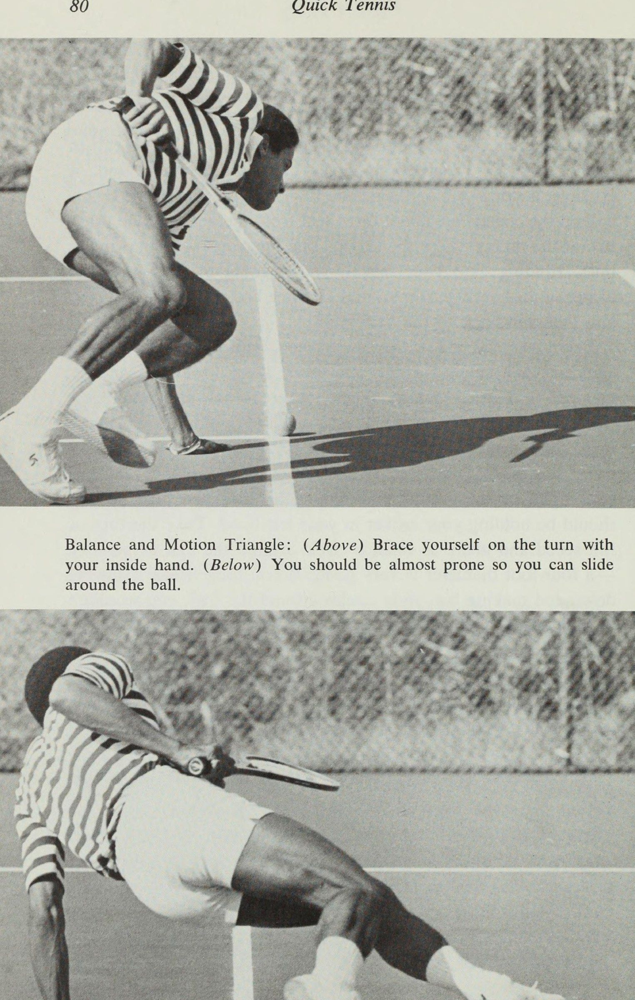
Nhưng nó sẽ dạy bạn cách đổi hướng nhanh chóng và có kiểm soát. Máy khoan khai thác, yêu cầu bạn phải kéo một vật nặng trong khi chạy, sẽ giúp bạn phát triển bước đi nhanh chóng. Trong Bài tập đánh và chạy, bạn phải phản ứng ngay lập tức với quả bóng mà không có bất kỳ manh mối nào giúp bạn dự đoán nó, và trong Bài tập phản ứng, bạn thậm chí còn có ít thời gian hơn. Cả hai đều sẽ giúp bạn phát triển phản xạ siêu nhạy trên sân. Một số người thực hiện các bài tập này đã nói với tôi rằng khi họ chơi quần vợt, họ thường nghĩ: “Đây là điều mình nên làm, giống như trong các bài tập”. Trong khi bạn đang đạt được sự nhanh chóng và kiểm soát, các bài tập chạy cũng sẽ cải thiện thể chất của bạn.
Chỉ biết cách di chuyển cũng chẳng ích gì nếu bạn quá kiệt sức để đặt những gì bạn muốn
Bài tập chạy 77 biết vào thực tế. Cho dù bạn chơi trò thả bóng/loạn bóng hay bạn là người giao bóng và vô lê hay bạn là người chơi ở sân cơ bản, quần vợt khiến bạn di chuyển mạnh mẽ và nhanh chóng. Trong một trận đấu dài, bạn có thể phải chạy xa tới 5 dặm, và trong loại quần vợt đó, người có sức bền tốt nhất thường là người chiến thắng. Sức chịu đựng để chống lại sự mệt mỏi là kết quả của quá trình điều hòa, giúp cải thiện hệ thống tuần hoàn, hô hấp và cơ bắp của bạn. Ngoài ra, sức bền tốt còn giúp bạn phục hồi nhanh hơn khi mệt mỏi.
Một thực tế nữa là những người có thể trạng tốt sẽ có nhiệt độ cơ thể tăng ít hơn khi họ gắng sức hơn những người có vóc dáng không cân đối. Bất cứ ai tập luyện, dù già hay trẻ, người chơi cao cấp hay hacker câu lạc bộ đều có thể có sức bền tốt. Tôi biết những tay vợt ở độ tuổi 50 và 60 có thể chơi quần vợt từ 4 đến 5 giờ mỗi ngày vì họ luôn dẫn đầu trận đấu bằng cách tập thể dục và rèn luyện sức khỏe. Vận động viên chạy phát triển sức bền bằng cách chạy quá quãng đường - một vận động viên chạy cự ly 440 sẽ chạy hàng trăm cự ly 660 lặp lại trong suốt cả năm để anh ta có đủ sức chịu đựng cho sự kiện của mình.
Cơ thể tăng cường sức bền khi bị quá tải, đó là một lý do tôi khuyên bạn nên tập luyện và chạy bộ sau khi chơi quần vợt. (The other is simply that you won’t tire yourself out before you play.) Overloading doesn’t mean running until you collapse; overexerting yourself to that extent isn’t good for you or your game. You should go just until you’ve extended yourself a little farther than you think you'd like. Nếu bạn nỗ lực vượt quá nhu cầu bình thường một chút, cơ thể bạn sẽ đạt đến mức cần thiết và bạn sẽ phát triển thêm sức chịu đựng không chỉ cho quần vợt mà còn cho mọi việc khác mà bạn làm.
Một lời cảnh báo: vận động viên cuối tuần, người chơi năm hiệp sau khi không làm gì vất vả hơn tuần trước ngoài việc đi bộ ra ô tô, là người có khả năng gặp thảm họa y tế trên sân. Nếu bạn thực sự nghiêm túc về việc lấy lại vóc dáng và đang bắt đầu lại từ đầu, hãy kiểm tra thể chất toàn diện trước khi bắt đầu, sau đó bắt đầu từ từ và tăng dần. Hãy dừng lại khi bạn cảm thấy quá sức. Be honest with yourself, and recognize the difference between enough and too much.
Besides the danger to your heart, overstraining your body causes lactic
78 Quick Tennis acid to collect in your muscles, which makes them weak, and that’s when you’re most likely to tear or pull one. Besides, if you’re tired, you won’t do the drills well, and there’s no sense in just going through the motions. But when you are working on these drills, try to give them all you've got. A small number of repetitions well done will do more for you than many sloppy ones. You'll be able to increase the number as you get stronger and your wind improves.
Thiết lập nền tảng—thành tích ban đầu của bạn—và nỗ lực mở rộng nó, đánh bại kỷ lục của chính bạn. Mục đích của bạn là sử dụng tỷ lệ phần trăm lớn hơn khả năng thể thao của mình trên sân. Sẽ có những lúc bạn chẳng có gì ngoài điều đó để dựa vào, để tạo nên những chiến thắng ngoạn mục khiến ngay cả đối thủ đáng gờm nhất của bạn cũng phải tán thưởng. Nhưng hầu hết thời gian, nhanh hơn, khỏe hơn và có thể trạng tốt hơn sẽ có nghĩa là bạn sẽ không phải nỗ lực nhiều khi thi đấu; bạn sẽ thấy mình có thể hoàn thành được nhiều việc hơn với ít nỗ lực hơn.
Sức chịu đựng của bạn càng tốt và bạn có thể di chuyển càng khéo léo thì đối với bạn, nửa sân của bạn sẽ càng nhỏ và đối thủ của bạn càng lớn. TAM GIÁC CÂN BẰNG VÀ CHUYỂN ĐỘNG Stan Smith từng nói với tôi rằng nếu anh ấy có thể cải thiện khả năng giữ thăng bằng, anh ấy có thể cải thiện toàn bộ trò chơi của mình. Anh ấy không phải là người duy nhất; bạn không thể di chuyển tốt trên sân tennis nếu không giữ thăng bằng tốt. Quần vợt đòi hỏi bạn phải thực hiện những thay đổi hướng nhanh chóng; nếu bạn không thể chuyển trọng lượng của mình một cách nhanh chóng, bạn sẽ phải di chuyển nhiều vòng trên sân, lao vào bóng, đánh nhầm chân và loạng choạng lùi về phía sau khi đánh.
Nhiều người chơi gặp khó khăn trong việc giữ thăng bằng trong hơn một vài bước. Tôi luôn thấy điều đó - chẳng hạn, mọi người cố gắng xoay người bằng cách bước những bước dài và cao, và khi họ chuyển hướng, quả bóng đã bay mất và họ mất điểm. Phát triển khả năng giữ thăng bằng của bạn—bằng cách thử thách nó—là mục đích chính của bài tập này. Thực hành những thay đổi hướng triệt để này khi chạy hoàn toàn sẽ giúp bạn giữ thăng bằng dễ dàng hơn khi chơi vì bạn sẽ không bao giờ phải thay đổi hướng đột ngột như vậy trong bất kỳ trận đấu quần vợt nào.
Cân bằng tốt, thích vị trí tốt,
Running Drills 79 tạo ra những cú đánh tốt. Ý tưởng là để có thể ổn định cơ thể của bạn trong mọi loại rắc rối, bởi vì khi bạn ở trong bất kỳ tình huống nào trên sân đòi hỏi phải chuyển hướng nhanh chóng, khả năng giữ thăng bằng của bạn càng mất kiểm soát thì bạn sẽ càng có ít phạm vi. Bài tập này là bước khởi đầu của cuộc đua thùng mà ngựa chạy trong gymkhanas. Bạn cần ba quả bóng tennis và một sân đấu, và nếu có thể, một chiếc đồng hồ bấm giờ và ai đó theo dõi bạn. Đặt một quả bóng tennis trên đường giữa cách lưới khoảng 3 feet, và hai quả còn lại ở điểm mà đường giao bóng giao nhau với đường đánh đơn.
Giữ vợt của bạn, bạn sẽ bắt đầu từ giữa đường cuối sân, chạy xung quanh cả ba quả bóng nhanh nhất có thể, rồi chạy trở lại đường cuối sân.* Bắt đầu với quả bóng ở sân deuce. Chạy đến đó nhanh nhất có thể: dồn trọng lượng về phía trước và xuống, giữ ngón chân dẫn đầu và ghi nhớ kiểu sải chân của bạn. Khi bạn đến được quả bóng đó, đừng chậm lại. Chạy xung quanh nó càng nhanh càng tốt, quay theo chiều kim đồng hồ. Trượt xung quanh nó nếu bạn có thể bằng cách thả trọng lượng của bạn xuống và chuẩn bị tinh thần bằng cách đặt tay trong, tay phải của bạn, xuống đất và dựa vào nó khi bạn xoay người, vì vậy bạn nên cầm vợt bằng tay trái.
Xoay hết tốc lực và tạo một vòng tròn xung quanh quả bóng càng nhỏ càng tốt —đường kính 4 foot là rất tốt. Nếu bạn thực hiện dễ dàng, giảm tốc độ và tạo những vòng tròn lớn, rộng xung quanh quả bóng, bạn sẽ không gặp khó khăn trong việc giữ thăng bằng. Hãy làm cho việc làm điều tốt của bản thân trở nên khó khăn. Mọi người có xu hướng đứng thẳng và kéo dài sải chân khi bước ra khỏi khúc cua, vì vậy đây là lúc bạn thực sự nên tập trung vào tư thế của mình. Stan Smith, trong số những người khác, đồng ý với *Nếu bạn đang thực hiện bài tập bên ngoài sân, hãy đặt các quả bóng như sau và bắt đầu tại điểm X: rake ite) NA i wv Vee 7 XN 7 >t oo a) 7 / wr , a ~@
8&0 Quick Tennis ee ee tay trong của bạn. (Bên dưới) Bạn gần như nằm sấp để có thể trượt Tam giác cân bằng và chuyển động: (Trên) Chuẩn bị tinh thần khi đến lượt với tôi xung quanh quả bóng.
Bài tập chạy 8] (Ở trên) Xoay hết tốc độ. (Bên dưới) Ở mức thấp và bơm với cánh tay của bạn hướng ra ngoài vòng quay.
82 Quick Tennis Tôi cho rằng việc bước những bước lớn là nguyên nhân chính gây mất thăng bằng khi bạn phải đổi hướng. Ở mức thấp, bơm bằng tay và chân và lao mạnh về phía trước — giả vờ như ai đó đang giữ bạn lại như trong Máy khoan khai thác — và đừng đứng cao hơn mức bình thường khi bạn đánh bóng. Giữ tư thế thấp sẽ giúp bạn lấy lại thăng bằng nhanh chóng khi chơi, giúp bạn giữ thăng bằng tốt hơn khi tiếp xúc với bóng.
Sau khi xoay quả bóng đầu tiên, chạy chéo sân tới quả bóng ở phần sân quảng cáo. Chuyển tay cầm vợt từ trái sang phải khi bạn đang chạy để bạn có thể rảnh tay bên trong (trái) để nghiêng người và bật khi bạn đang xoay sân quảng cáo. Lần rẽ này phải ngược chiều kim đồng hồ để bạn tạo thành một vòng tròn quanh quả bóng. Thực hiện theo cách tương tự: thả trọng lượng của bạn xuống và thực sự tăng tốc xung quanh quả bóng đó. Sau đó chạy tới bóng trên lưới (giữ vợt trong tay phải), chạy vòng quanh bóng ngược chiều kim đồng hồ nhanh nhất có thể và chạy trở lại đường cuối sân.
Lúc đầu, bạn có thể bị ngã khi đang rẽ vì bạn đang làm việc chống lại lực ly tâm và trọng lực. Thực hành nó cho đến khi bạn có thể thực hiện bài tập mà không bị ngã, sau đó cố gắng cắt giảm thời gian của mình bằng cách giảm đi một phần mười giây. Nếu bạn thực sự muốn giảm thời gian của mình, hãy cố gắng cắt giảm thời gian. Tôi đã cho rất nhiều người thực hiện bài tập này và cho đến nay Roscoe Tanner đang giữ kỷ lục thế giới với thành tích 7,4 giây trên sân đất nện, được cho là một bề mặt chậm.
Tôi nhớ lần đầu tiên anh ấy làm điều đó mà không có sự hướng dẫn nào; anh ấy phải mất 9,8 giây. Sau đó tôi chỉ bảo anh ấy cúi thấp người; anh ấy đã đánh gục ngay lập tức một giây. Anh ấy đã làm việc và làm việc đó, cho đến khi cuối cùng anh ấy ở tư thế nửa nằm sấp khi thực hiện các lượt rẽ, cách mặt đất khoảng 2 feet, trượt xung quanh các quả bóng với khả năng kiểm soát cực kỳ đẹp mắt. Đó thực sự là một cái gì đó để xem. Đây cũng là một bài tập điều hòa tuyệt vời. Chạy qua năm lần, nghỉ giữa mỗi lần khoảng một phút, để bạn vẫn thở hơi nặng nề nhưng đã hồi phục đủ để không làm tổn thương bản thân.
Thực sự di chuyển nó. Nó sẽ khiến bạn dễ chịu và mệt mỏi, và nếu ai đó không biết bạn đang làm gì nhìn thấy bạn thì có thể họ sẽ nghĩ rằng bạn mất trí, nhưng vậy thì sao.
Bài tập chạy 83 Tôi thường kết thúc phòng khám của mình bằng một cuộc đua tiếp sức Tam giác cân bằng và chuyển động khổng lồ. Tôi chia nhóm thành hai đội và xếp họ phía sau đường cuối sân, sử dụng cả hai bên sân. Mỗi đội sử dụng một cây vợt và ném nó như một cây dùi cui. Thật đáng kinh ngạc khi một cuộc đua khơi dậy sự thôi thúc cạnh tranh của mọi người. Tôi nhớ sau đó có một anh chàng đã nói với tôi rằng: “Tôi đứng trên vạch đó và suy nghĩ, ‘Một người đàn ông trưởng thành như tôi lại tham gia những cuộc đua ngớ ngẩn này để làm gì?’ Rồi khi đến lượt tôi, anh bạn, tôi đã dồn tất cả những gì mình có vào đó.
Tôi thực sự muốn giành chiến thắng.” Chà, nếu bạn cạnh tranh với chính mình theo cách tương tự, cố gắng vượt qua thành tích tốt nhất của mình, bạn sẽ thu được lợi ích tối đa từ bài tập này. ăn một
<4 Cách một cuộc đua khơi dậy tinh thần cạnh tranh của mọi người thật đáng kinh ngạc. KHOAN DÂY B Máy khoan khai thác nhanh ở trang 50 là một loại tốt, với những thay đổi nhỏ, để giúp bạn phát triển sức mạnh cần thiết ở bàn chân và cẳng chân để tiếp tục chạy mạnh mẽ khi bạn đã bắt đầu. Nó cũng là một chất điều hòa tuyệt vời cho sự lưu thông và gió của bạn. Quấn một chiếc khăn quanh eo và nhờ đối tác giữ hai đầu khăn phía sau bạn. Sau đó chạy về phía trước trong khi đối tác của bạn lùi lại vừa đủ mạnh để bạn có thể kéo anh ta đi bộ chứ không phải chạy.
Sự khác biệt giữa máy khoan này và Máy khoan khai thác bắt đầu nhanh là (1) bạn mất nhiều thời gian hơn nhưng vẫn sải bước rất nhanh; và (2) thay vì chỉ thực hiện mười lăm bước ngắn và nhanh, bạn chạy suốt từ hàng rào lên lưới (khoảng cách khoảng 60 feet, nếu bạn chạy ngoài sân) và quay lại hàng rào lần nữa nếu bạn còn đủ sức - đó sẽ là một bài tập rất mệt mỏi nếu bạn thực hiện đúng. Sau đó đổi chỗ cho đối tác của bạn và để anh ta làm ngựa cày một thời gian.
Hãy nhớ rằng khi bạn là người chạy, bạn phải tụt xuống
Máy khoan khai thác—rất tốt cho sức mạnh và khả năng điều hòa của chân. thấp, chuyển trọng lượng của bạn về phía trước và thực sự bơm bằng cánh tay của bạn. Bàn chân của bạn đang kéo và căng ra, và bạn đang dùng hết sức lực và năng lượng của mình để cố gắng kéo đối tác của mình xuống. (Tôi hy vọng bạn không thành công, nhưng bạn nên kéo mạnh đến mức đó.) Nếu bạn không di chuyển chút nào, nghĩa là anh ấy đang lùi lại quá mạnh; bảo anh ấy thả lỏng một chút để anh ấy có thể tự mình đi dạo. Đừng để bị bắt quả tang.
Nếu trọng lượng của bạn không dồn lên ngón chân, đối tác của bạn sẽ kéo bạn thẳng về phía sau. Nhưng nếu bạn tiến quá xa về phía trước, chân bạn sẽ ở phía sau và bạn sẽ bị ngã. Có đủ độ nghiêng về phía trước để giữ thăng bằng và vẫn lao về phía trước. Tôi nhận thấy rằng phụ nữ thường có xu hướng chạy hơi chồm lên - nhón chân - gần như thể họ đang cố gắng không gây ra bất kỳ tiếng động nào khi chạy. Bài tập này có thể giúp họ học cách thực sự đặt nó xuống sàn.
Khi bạn tạo lực cản, hãy duy trì áp lực ổn định và đều. Nếu bạn bị kéo vào cuộc chạy, bạn phải lùi lại mạnh hơn.
86 Quick Tennis Bạn sẽ có được nhiều đòn bẩy hơn nếu bạn uốn cong đầu gối, giữ một phần đế thật rộng và “ngồi xuống”. Bạn cũng có thể thực hiện bài tập này ngược lại. Hai bạn quay mặt vào nhau và chiếc khăn quấn quanh lưng người chạy. Người chạy không có nhiều sức mạnh theo cách này, vì chân của bạn không duỗi về phía sau quá xa, vì vậy người lùi lại không nên chống cự mạnh. Bạn sẽ không tạo ra nhiều sức mạnh hoặc có thể thực hiện một bước tiến thực sự khi lùi về phía sau, nhưng thực hiện bài tập ngược lại sẽ giúp bạn di chuyển nhanh hơn khi bạn phải chạy lùi để đuổi theo một cú lốp bóng hoặc đánh một cú đánh qua đầu.
KHOAN PHẢN ỨNG Đây là một bài tập rất đơn giản có thể giúp bạn rèn luyện phản xạ của mình và giảm thời gian từ khi đánh bóng đến khi bạn phản ứng với nó. Một số người làm điều đó đã nói với tôi rằng điều đó đã cải thiện khả năng của họ để theo kịp nó khi hành động trở nên nóng bỏng trên mạng. Bạn không cần một sân đấu cho việc này. Đứng ở tư thế sẵn sàng, cầm vợt trong tay. Đối tác của bạn, người đối mặt với bạn, cầm một quả bóng trong mỗi tay và đặt hai tay ra sau lưng. Anh ta nắm lấy tay này hay tay kia, tùy ý anh ta và đưa nó ra trước mặt anh ta càng nhanh càng tốt.
Ngay khi bạn có thể biết tay nào đang đến, hãy nhanh chóng chuyển trọng lượng cơ thể sang bên đó như thể bạn đã sẵn sàng đánh một cú thuận tay hoặc một cú trái tay, sau đó trở lại vị trí sẵn sàng. Đối tác của bạn nên cố gắng kiểm tra khả năng dự đoán của bạn để anh ấy có thể đưa cùng một bàn tay năm lần liên tiếp. Tương tự, khi bạn là người cầm bóng sau lưng, hãy cố gắng đánh lừa đối tác của mình. Đổi phe, hoặc về cùng một phe nhưng không thể đoán trước được.
Yêu cầu đối tác của bạn thực hiện phản ứng nghiêm ngặt, để trên sân, cả hai sẽ trở thành một cặp báo. KHOAN ĐÁNH VÀ CHẠY Bài tập này sẽ sử dụng và kiểm tra hầu hết mọi thứ bạn có thể học được từ cuốn sách này—sự nhanh nhẹn, tỉnh táo, phục hồi, kiểu sải chân, xoay người,
Bài tập Hit-and-Run kiểm tra mọi thứ bạn có thể học được từ cuốn sách này.
8&8 Phản xạ tennis nhanh, giữ thăng bằng. Nó sẽ cho bạn thấy điểm mạnh của bạn là gì và bạn cần phải cải thiện điều gì. Nó đòi hỏi. hai người và tất cả những quả bóng cũ mà bạn đã để dành để thực hành cú giao bóng của mình. Một người, người ném, đứng gần lưới với thùng bóng. Người còn lại, người chơi, bắt đầu ở vị trí sẵn sàng trên đường cuối sân bên kia lưới. Người chơi cần vợt của mình; người ném thì không. Đầu tiên, người ném đưa cầu thủ vào sân bằng cách ném cho anh ta một cú sút dễ dàng ở giữa đường giao bóng và lưới.
Người chơi thả người xuống, xoay người, chạy theo nó nhanh nhất có thể, đánh và hồi phục ngay lập tức. Trong khi đó, người ném ném quả bóng tiếp theo khi người chơi đang đánh quả bóng đầu tiên. Nếu người chơi không hồi phục đủ nhanh, anh ta sẽ không thể đạt được điều đó. Bóng không cần phải ném xa và rộng trên sân để bài tập này có hiệu quả; bạn có thể làm việc hoàn toàn trong phạm vi tám hoặc mười feet mà vẫn di chuyển người chơi xung quanh nhiều. Điểm nhấn trong bài tập này là ở phong độ tốt chứ không phải bóng đi đến đâu hay chỉ tiếp cận nó theo cách cũ.
Mọi người sẽ bỏ lỡ một loạt quả bóng và nghĩ rằng chúng thực sự lộn xộn, nhưng thực tế không phải vậy, miễn là họ tiếp cận bóng đúng cách—duy trì kiểu sải chân, đầu ngón chân, đầu tay và chân chính xác và phục hồi nhanh chóng. Đừng lo lắng về khả năng vuốt ve của bạn; nó sẽ quay trở lại ngay khi bạn thi đấu, cùng với sự tự tin mới về khả năng di chuyển trên sân của bạn. Một trong những mục đích chính của bài tập này là phát triển độ nhanh của quả bóng trong thân người (inner ball), vì vậy ít nhất lúc đầu, hãy thực hiện các quả bóng gần, cách nhau khoảng 10 feet hoặc hơn: một vài quả bóng sang một bên, một số quả bóng sang bên kia, trộn chúng lên.
Người chơi không bao giờ thực sự biết điều gì sẽ xảy ra trong cuộc diễn tập này, đó chính là vẻ đẹp của nó; anh ấy không thể dựa vào sự dự đoán của mình. Bạn đang cố gắng đoán đối phương giống như trong một trận đấu quần vợt, nhưng với tư cách là người ném, bạn có toàn quyền kiểm soát vì bạn luôn có thể giả vờ hoặc làm những điều bất ngờ, chẳng hạn như ném tám quả bóng thẳng về cùng một phía, hoặc thỉnh thoảng ném một quả rộng ra ngoài nếu bạn đang làm việc với những quả bóng trong thân người (inner ball). Mọi người có thể mong đợi hai hoặc ba quả bóng ở cùng một phía, vì vậy nếu bạn tập trung vào một phía đó, người chơi sẽ biết rằng anh ta không thể ném thăng bằng theo hướng khác vì dự đoán vì anh ta sẽ không thể phục hồi kịp thời.
Anh ấy sẽ học cách hồi phục
Chạy bài tập 8&9 đúng cách và sẵn sàng thực hiện cả hai bài. Tương tự, nếu anh ấy chơi quá cao, anh ấy sẽ gặp vấn đề trong việc kiểm soát những quả bóng trong thân người (inner ball) này. Một trong những điều quan trọng nhất mà người chơi có thể học được khi làm việc với các quả bóng trong thân người (inner ball) là giữ nguyên trạng thái cuộn - khóa chặt. Bạn có thể lên lưới trong tư thế có vẻ hung hãn nhưng chỉ tạo dáng, đứng vỗ nhẹ chứ chưa sẵn sàng tung ra theo cả hai hướng. Khi bạn đang chơi trên lưới và bạn đánh một cú vô lê có thể dễ dàng bị trả lại, bạn phải ở trạng thái cực kỳ sẵn sàng vì đối thủ của bạn có quyền lựa chọn băng qua sân, dọc biên hoặc lốp bóng qua bạn.
Việc bạn có sẵn sàng cho anh ấy hay không hoàn toàn phụ thuộc vào phản ứng của bạn. Trong một trận đấu quyết liệt, bạn không thể lãng phí bất kỳ khoảng thời gian nào giữa thời điểm bóng được đánh và thời điểm bạn rời đi. Hầu hết các hành động trong cuộc diễn tập này sẽ diễn ra bên trong đường giao bóng, nơi bạn có một nửa thời gian để chuẩn bị như ở vạch cuối sân (baseline). Tập trung vào bóng với động tác bằng chân chéo tốt trên lưới và khả năng phục hồi tốt sau khi đánh. Giữ trọng lượng của bạn ở phía trước và phân bố đều trên cả hai chân.
Đó là đòn ném, đòn ném, sang bên, lên và lùi. Di chuyển lên và lùi khiến nhiều người gặp nhiều rắc rối hơn là chạy từ bên này sang bên kia, vì vậy hãy nhớ cố gắng khắc phục. Với tư cách là người ném, hãy cảm nhận người chơi và chuẩn bị cho những cú ném của bạn xem anh ta đang thực hiện tốt như thế nào. Đừng ném quá chậm để trẻ có thể lấy được mọi thứ hoặc nhanh đến mức trẻ không thể lấy được thứ gì, điều này sẽ gây khó chịu và phản tác dụng. Nếu người chơi không có cơ hội hoàn thành cú đánh của mình trước khi kịp lùi lại để thực hiện quả bóng tiếp theo, hãy giảm tốc độ xuống - để anh ta hoàn thành cú đánh của mình và ném ngay sau đó.
Nếu anh ấy thực sự chơi tốt, hãy ném bóng sớm hơn một chút hoặc mạnh hơn. Nhưng nếu có thì tốt hơn là quá chậm còn hơn là quá nhanh, bởi vì hình thức tốt mới là điều quan trọng. Có rất nhiều ranh giới giữa khó khăn và không thể. Khi bạn ném những quả bóng rộng hơn, hãy ném chúng chậm hơn một chút để người chơi có thể tiếp cận chúng. Một lần nữa, đối với những quả bóng rộng, điều quan trọng nhất là sự phục hồi: người chơi phải sẵn sàng cho quả bóng tiếp theo. Nếu anh ta đánh bóng và ngay lập tức chạy sang phía bên kia, hãy ném một quả về phía sau anh ta để thể hiện quan điểm của bạn.
Ý tưởng là nỗ lực kiểm soát mọi quả bóng, ở đó ở vị trí tốt.
90 Quick Tennis Khi tôi thực hiện bài tập này với ai đó lần đầu tiên, tôi bắt đầu bằng việc tìm hiểu xem người chơi có thể làm gì. Giả sử tôi đang làm việc với một người đàn ông hoặc phụ nữ ở độ tuổi cuối năm mươi. Tôi sẽ ném một cái ra, xem người chơi làm việc với nó như thế nào, sau đó ném một cái ra theo cách khác và xem anh ta làm việc với cái đó như thế nào. Nếu anh ta gặp khó khăn với việc tiếp cận nó, tôi ném quả tiếp theo lại gần hơn một chút. Nếu không có vấn đề gì thì đi xa hơn một chút. Sẽ có một số quả bóng mà anh ấy không thể với tới được; Tôi sử dụng chúng như một hướng dẫn.
Nếu một quả bóng nằm ngoài tầm với của anh ấy, tôi rút ngắn thời gian một chút hoặc cho anh ấy thêm thời gian, ném nó đi với khoảng cách tương tự nhưng chậm hơn một chút, bởi vì sự tự tin được xây dựng nhờ thành công. Lấy một quả bóng mà ai đó không thể với tới và ném nó với độ rộng tương đương nhưng chậm hơn một sợi tóc. Anh ấy đã đạt được điều đó và anh ấy cảm thấy rằng mình đã làm được một điều tuyệt vời, điều mà anh ấy đã làm được: vượt qua một rào cản, phát hiện ra rằng rốt cuộc thì một quả bóng cách xa đằng kia không phải là không thể tiếp cận được. Sau đó, anh ấy thấy mình thực sự đang cố gắng giành được quả bóng ngoài tầm (outer ball) đó, bởi vì anh ấy thấy rằng mình có thể làm được điều đó— và anh ấy đã mở rộng phạm vi của mình lên một chút.
Ví dụ, nếu tôi đang làm việc với một học sinh 12 tuổi, (tôi sẽ kéo cậu ấy lên trước bằng một cú thả bóng, đảm bảo rằng cậu ấy có những bước dẫn đầu chính xác, tư thế thấp, kiểu sải bước, v.v.. Quả bóng đầu tiên đó phải đủ dễ để cậu ấy có thể tiếp cận trong nhiều thời gian—không phải là một cú thả bóng “cho tôi”, nhưng không quá khó để cậu ấy cảm thấy mình bị thua ngay từ đầu. Sau đó, tôi có thể ném hai hoặc ba quả bóng ngoài tầm (outer ball) dễ dàng để cho cậu ấy thực hành xoay vòng, và sau đó Tôi sẽ đưa anh ta vào giữa sân với một quả bóng gần đường giữa sân và tập anh ta ở đó, bởi vì có lẽ sau một vài quả bóng dài, anh ta bắt đầu cảm thấy mệt mỏi và chẳng bao lâu nữa anh ta sẽ cảm thấy mệt mỏi.
Nếu tôi đưa anh ấy vào trong, tôi có thể đưa cho anh ấy mười hai hoặc mười lăm quả bóng nữa, để anh ấy sẽ tập luyện tốt đồng thời luyện tập các bước chân, phản ứng, sự nhanh nhẹn, thăng bằng, v.v. Một đàn em có thể trạng tốt sẽ có thể cầm cự được khoảng 20 quả bóng. Ví dụ: nếu đang làm việc với một người đàn ông thừa cân 45 tuổi, tôi sẽ bắt đầu bằng một cú thả bóng dễ dàng hơn, lùi sâu hơn một chút hoặc ném lên cao hơn một chút. Đối với quả bóng rộng của anh ấy, tôi sẽ không ném rộng như đối với đứa trẻ.
Tôi có thể cắt đứt anh ta sau tám hoặc chín quả bóng bằng một cú lốp bóng, bởi vì lúc đó anh ta có thể sẽ rất mệt. Đó là một cuộc tập trận mệt mỏi. Một người đàn ông ở phòng khám của tôi từng nói rằng dường như nó sẽ không bao giờ kết thúc. Đừng để mình bị quá
Running Drills 9] mệt mỏi, vì khi mệt bạn có thể sẽ không di chuyển đúng cách. Đi cho đến khi mệt, nghỉ ngơi rồi thực hiện lại hoặc đổi chỗ với người ném. Hãy cố gắng rèn luyện sức chịu đựng của bạn. Nếu bạn có thể ném được 19 quả bóng, hãy nhắm tới 21 quả bóng. Nếu bạn có thể đi được tám, hãy thử mười, rồi mười hai. Ba mươi quả bóng được ném nhanh và với tốc độ nhất định sẽ khiến bất cứ ai cũng mệt mỏi. Hãy xây dựng từ nơi bạn bắt đầu—đừng mong đợi tăng từ 8 lên 20 trong hai ngày.
Định kỳ dọn bóng ra khỏi sân để người chơi không vấp phải chúng. Và người ném—hãy cảnh giác để không bị trúng đòn, vì bạn không có vợt để che chắn. Giống như những bài khác, bài tập này có thể được thực hiện ngoài sân nếu bạn không có máy để tập. Nếu người ném đứng cách người chơi khoảng 45 feet, khoảng cách đó sẽ xấp xỉ khoảng cách từ đường cuối sân đến phía bên kia của lưới.
Chương 9: Tập luyện cường độ cao và Plyometrics
9 Bài tập Tất cả có năm ván, set thứ ba, hai trên ba. Bạn đã thi đấu như những kẻ phá đám, chạy đua giành những cú đánh rơi, chạy lốp bóng, đuổi theo những cú đánh chéo sân. Bạn muốn thắng trận đấu này đến mức bạn có thể nếm thử nó. Cuối cùng, bạn có cơ hội để cho đối thủ thấy ai là ông chủ một lần và mãi mãi. Nhưng tại thời điểm này, bạn có một vấn đề lớn. Bộ não của bạn đang hét lên, "Nào, đuổi theo nó! Hãy đến đó! Di chuyển!" nhưng cơ thể bạn đang rên rỉ, “Tôi không thể. Tôi muốn nhưng tôi không thể cử động được nữa.
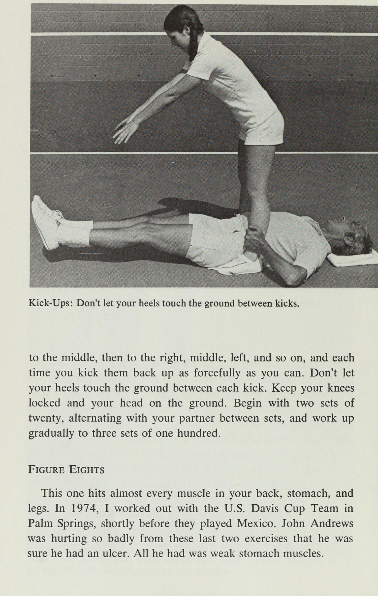
Mọi thứ đang giết chết tôi. Khi nào chuyện này mới kết thúc? Hãy mặc định.” Bạn cố gắng ngồi xổm giữa các điểm để giảm đau ở chân, nhưng việc đứng dậy lại tốn quá nhiều sức lực nên bạn từ bỏ ý định đó. Bạn không biết chân, lưng và đầu của mình sẽ vượt qua điều này như thế nào. Phía sân của bạn, phía bạn phải che chắn, trông giống như một hồ nước xanh lớn. Bạn thực hiện cú đánh rơi và lẩm bẩm “Cú đánh đẹp đấy” từ đường cuối sân. Đối thủ của bạn đang cảm thấy và chơi tốt hơn mỗi phút.
Cuối cùng hiệp đấu cũng kết thúc với tỷ số 7—5 của anh ấy và bạn thua trận. Mệt mỏi có thể là do tâm lý. Nếu bạn cho rằng mình sẽ mệt mỏi trong hiệp thứ ba hoặc hiệp thứ năm, có thể bạn sẽ như vậy. Mệt mỏi cũng có thể là một từ khác để chỉ sự chán nản. Mặc dù đúng là ai cũng thỉnh thoảng gặp khủng hoảng năng lượng trên sân, nhưng nếu bạn thấy mình luôn cảm thấy mệt mỏi khi chơi quần vợt, luôn phải đối mặt với một tổng thể ; | |
Bài tập 93 đặt ra trước mắt mà bạn không muốn tập, chắc là bạn đang mất phong độ. Cách duy nhất bạn có thể giải quyết vấn đề đó là lấy lại vóc dáng. Ngày xưa, trước khi có ô tô, TV và siêu thị, con người nhìn chung khỏe mạnh hơn và có tình trạng tốt hơn. Với cuộc sống thoải mái hơn mà hầu hết chúng ta đang có hiện nay, hầu như không còn ai có thể trạng tốt nữa, kể cả những người chơi quần vợt cuối tuần. Hai hoặc ba giờ chơi quần vợt mỗi tuần sẽ không giúp bạn có đủ thể lực để chơi hết mình nếu bạn ngồi sau bàn làm việc hoặc lái xe trong thời gian còn lại.
Trước hết, để hoạt động với hiệu quả tối đa, bạn cần nhiều sức mạnh và sức bền hơn mức yêu cầu của một hoạt động cụ thể, vì vậy bạn sẽ không bao giờ phát huy hết tiềm năng của mình với tư cách là một vận động viên quần vợt nếu bạn chỉ chơi quần vợt. Ngoài ra, trong một môn thể thao đòi hỏi khắt khe như vậy, bạn chỉ mạnh ở vùng yếu nhất của mình. Nếu bạn không có gió tốt, điều đó có thể sẽ đến với bạn trước bất cứ điều gì khác. Cơ lưng và cơ bụng, vốn là những cơ bị bỏ quên nhiều nhất trong cuộc sống hàng ngày, thường là những cơ bị tiêu hao đầu tiên trong một trận đấu kéo dài.
Tiếp theo là đôi chân của bạn vì chúng đang làm hầu hết công việc. Khi tình trạng mỏi cơ bắt đầu xuất hiện, bạn sẽ có hai đối thủ: anh chàng ở bên kia lưới và chính cơ thể bạn. Gần đây, tôi chơi với một người bạn mới bắt đầu áp dụng một số kỹ thuật của tôi vào thực hành, nhưng hình thức không đủ để anh ấy có thể theo kịp. Tôi nhận thấy rằng anh ấy đã làm mọi việc ít nhiều theo sách trong set đầu tiên, nhưng sau đó anh ấy bắt đầu mệt mỏi và trận đấu của anh ấy đã cho thấy điều đó.
Những quả bóng mà anh ấy đã tự làm mình ngạc nhiên khi lấy được trước đó thì anh ấy không còn với tới nữa, và đôi khi anh ấy thậm chí còn không cố gắng giành lấy chúng. Anh ấy bắt đầu chờ xem liệu cú sút của tôi có đi chệch hướng hay không thay vì chuẩn bị sẵn sàng đề phòng trường hợp nó đi vào lưới; anh ấy bắt đầu thực hiện các cú đánh của mình thay vì đến đó sớm; anh ấy bắt đầu chơi quá cao, v.v. Khi chúng tôi rời sân, anh ấy nói với tôi rằng bây giờ anh ấy nhận ra rằng những gì thường được coi là thói quen xấu thực ra thường do sự mệt mỏi gây ra.
Sức chịu đựng tốt là kết quả của hệ thống tim mạch hiệu quả, hệ hô hấp hiệu quả và cơ bắp khỏe mạnh. Tất cả đều có thể được cải thiện nhờ đào tạo. Cách tốt nhất để tăng cường tuần hoàn và khí lực của bạn là tập thể dục nhịp điệu, giống như các bài tập chạy ở Chương 8, giúp tăng khả năng sử dụng oxy của bạn. các
94 Cách Tennis nhanh để tăng cường sức mạnh là thực hiện các bài tập trong chương này. Điều hòa của bạn càng tốt thì bạn càng có thể làm được nhiều việc hơn với ít nỗ lực hơn. Bạn càng ít phải làm việc với chính mình thì bạn sẽ chơi càng tốt. Bạn cũng ít có khả năng căng cơ nếu bạn có vóc dáng cân đối, bởi vì khi bạn bị căng cơ, đau nhức, kiệt sức, bạn sẽ dễ bị chấn thương hơn. Và nếu bạn vô tình làm mình bị thương, trương lực cơ tốt sẽ giúp bạn hồi phục nhanh hơn. Hầu hết các vận động viên chuyên nghiệp sử dụng không quá 50% khả năng thể chất khi thi đấu.
Rõ ràng là những người chơi quần vợt bình thường sử dụng ít hơn rất nhiều. Bây giờ, nếu bạn chỉ muốn chơi trò mà một người bạn của tôi gọi là Hit and Giggle, thì bạn không cần bất kỳ thứ gì trong số này. Nhưng nếu bạn muốn chơi môn quần vợt thể thao hơn, năng nổ hơn, nghĩa là chơi với tư thế thấp hơn và hướng về phía trước nhiều hơn, bạn sẽ đặt ra nhiều yêu cầu hơn đối với cơ bụng, lưng và chân của mình; Bạn sẽ không thể đứng vững trong suốt trận đấu nếu bạn yếu. Ở trong tình trạng tốt sẽ giúp ích rất nhiều cho trận đấu quần vợt của bạn giống như một cú đánh trái tay mới, bởi vì việc cải thiện trò chơi của bạn không chỉ là vấn đề học các kỹ thuật phù hợp mà còn là khả năng thể chất để thực hiện chúng.
Tất cả những bài học bạn đã học, tất cả những bài luyện tập bạn đã làm và tất cả những cuốn sách về quần vợt bạn đã đọc đều khá vô dụng nếu bạn quá mệt mỏi để thực hiện những gì bạn đã học được từ chúng. Thể lực tốt cũng sẽ giúp bạn tự tin hơn trên sân. Nếu bạn biết rằng bạn có thể tồn tại trong thời gian cần thiết, rằng cơ, tim, phổi, khớp, hệ thần kinh và tâm trí của bạn sẽ có thể hoạt động với hiệu suất cao nhất trong một khoảng thời gian bền vững, thì bạn sẽ bớt lo lắng hơn rất nhiều.
Điều này đúng cho dù bạn chơi quần vợt ở cấp độ nào: sơ cấp, trung cấp hay cao cấp. Trình độ chơi quần vợt của bạn cũng không liên quan gì đến việc bạn sẽ tập luyện tốt như thế nào; tình trạng hiện tại của cơ bắp của bạn. Ngay cả trong số những vận động viên chuyên nghiệp, tôi nhận thấy rằng những người ít nhất không lọt vào bán kết hầu hết đều cảm thấy mình gần như mất phong độ như thể họ không hề chơi quần vợt. Sau lần đầu tiên chúng tôi tập luyện, Roscoe Tanner nói với tôi rằng mọi cơ bắp trên cơ thể anh ấy đều đau, kể cả phần mu bàn chân.
Anh ấy phải đi tắm thay vì tắm vòi sen vì anh ấy gần như không thể đứng dậy được. thứ hai
Các buổi tập luyện trong ngày thứ 95 tại phòng khám của tôi thường bắt đầu bằng một chuỗi những tiếng rên rỉ lớn vì cơ bắp bị đau ngay từ ngày đầu tiên. Tôi nhớ có lần trong phòng khám của tôi có một diễn viên hiện dành nhiều thời gian thi đấu trong các giải đấu chuyên nghiệp dành cho người nổi tiếng hơn là diễn xuất. Nhận thấy rằng mình đang có thể trạng tốt, anh ấy đã dốc hết sức để tập luyện vào ngày đầu tiên. Ngày thứ hai anh chủ yếu dành thời gian để chống đỡ bức tường. Mặt khác, tôi đã dạy rất nhiều người nhận thấy những bài tập này không hề căng thẳng, trong đó có một người phụ nữ gần như không thể đánh được một quả bóng tennis nhưng vẫn đến phòng tập thể dục hàng ngày.
Nếu bạn mới bắt đầu lấy lại vóc dáng sau một thời gian dài không tập thể dục nhiều, hãy bắt đầu từ từ và đừng kỳ vọng quá nhiều vào bản thân. Nếu bạn trên bốn mươi tuổi hoặc có bất kỳ vấn đề về tim hoặc bệnh lý nào khác, trước tiên hãy kiểm tra với bác sĩ. Hãy cho anh ấy xem cuốn sách nếu bạn không chắc mình nên và không nên làm gì. Nếu bạn gặp vấn đề về lưng, hãy thực hiện mọi việc một cách chậm rãi, đặc biệt là các bài tập kháng lực đẳng trương. Bằng cách đó, bạn sẽ không bị mắc vào bất kỳ vị trí kỳ lạ nào mà bạn không thể thoát ra được.
Những bài tập này được thiết kế để thực hiện với người khác, vì một số lý do. Có một điều là mọi người có xu hướng làm việc chăm chỉ hơn theo cặp. Tập luyện cùng người khác cũng thú vị hơn—bạn khuyến khích lẫn nhau, có thể cạnh tranh một chút—vì vậy, bạn có nhiều khả năng duy trì hoạt động đó hơn. Nhưng quan trọng nhất, khi bạn tập luyện với người khác, bạn có thể tách biệt khu vực cụ thể mà bạn đang tập luyện tốt hơn: đối tác của bạn đóng vai trò như một vật nặng bằng bộ não, điều chỉnh sức đề kháng của anh ấy tùy theo sức của bạn; khi bạn mạnh mẽ hơn, anh ấy sẽ tạo ra nhiều áp lực hơn.
Vì vậy, hãy tập luyện với đối tác đánh đôi của bạn hoặc đối thủ của bạn — các bạn sẽ giúp nhau chơi tốt hơn — hoặc với chồng hoặc vợ của bạn. Tôi cũng đã hướng dẫn cách tập một mình, vì vậy không có ai tập cùng cũng không phải là lý do! Bạn cũng không cần sân để tập luyện, vì vậy bạn có thể dễ dàng thực hiện chúng vào những ngày không chơi quần vợt. Tôi biết một cặp vợ chồng thực hiện những bài tập này một hoặc hai lần một tuần ở nhà trước bữa tối. Khi người chồng tới phòng khám của tôi, anh ấy đã thừa cân khoảng 40 pound.
Không còn nữa. Anh ấy bắt đầu tập thể dục, giảm vài cân mỗi lần, rồi quyết định chết tiệt với việc béo. Cuối cùng anh ấy đã giảm được hơn 30 pound chỉ vì quá hào hứng với cơ thể mình khi tập luyện,
96 Quick Tennis chơi rất nhiều quần vợt, lần đầu tiên sau mười hoặc mười lăm năm. Chẳng bao lâu sau, vợ anh cũng có được linh hồn. Cô ấy chỉ là người mới bắt đầu chơi quần vợt, nhưng cả hai đều có phong độ tuyệt vời. Nếu bạn tập thể dục sau khi chơi, bạn đã ấm lên, nhưng nếu bạn bắt đầu cảm thấy lạnh, hãy khởi động trước. Tôi không khuyên bạn nên tập thể dục trước khi chơi vì điều đó sẽ khiến bạn quá mệt mỏi để có thể chơi hết mình. Đừng quá dễ dãi với bản thân hoặc quá khó khăn.
Đi theo tốc độ của riêng bạn, tăng số lần lặp lại và sức đề kháng khi bạn tiến bộ. Cạnh tranh với chính mình, không phải với đối tác của bạn. Tôi đã cung cấp số liệu; hãy sử dụng chúng như một hướng dẫn, nhưng đừng cứng nhắc về nó; bạn không nên kiệt sức chỉ để tuân theo những con số của tôi. Hãy nhớ rằng chất lượng công việc bạn làm cũng quan trọng như số lượng. Phụ nữ có thể muốn thực hiện nhiều lần lặp lại với lực cản nhẹ hơn, đó là cách để tăng cường sức mạnh mà không cần tăng thêm cơ bắp.
KHOAN CHỊU ĐIỆN TÂM HOẶC NÂNG CHÂN Mặc quần đùi vào. Ngồi xuống với hai chân duỗi ra trước mặt và nhìn vào chúng. Chúng nhão và dính hay cứng và rắn? Có bánh quế trên đùi của bạn? Chà, nếu bạn làm thế, tôi có một bộ bài tập cho bạn. Chúng được gọi là các bài tập đẳng trương, có nghĩa đơn giản là bài tập trong đó cơ co lại và di chuyển chống lại tải trọng. Chúng rất tuyệt vì chúng tác động vào phía trước, hai bên và phía sau chân của bạn, đồng thời sẽ giúp bạn phát triển sức mạnh bùng nổ cần thiết để bắt đầu nhanh chóng.
Đọc toàn bộ phần đầu tiên bốn lần bằng chân phải, sau đó bốn lần bằng chân trái. Sau đó thực hiện hai phần tiếp theo theo cách tương tự. Khi bạn đã hoàn thành toàn bộ bài tập, hãy đổi chỗ cho đối tác của mình. Sử dụng khăn hoặc thảm nếu bạn tập luyện trên bề mặt cứng. 1. Đối với mặt trước của chân. Nằm ngửa, hai chân duỗi thẳng, hai chân khép vào nhau, hai tay ở hai bên. Đối tác của bạn, quỳ bên chân phải của bạn, dùng tay phải nắm lấy mắt cá chân phải của bạn và đặt tay trái của anh ấy lên.
Nâng chân của bạn lên cao nhất có thể trước sự phản kháng của đối tác. tay lên đùi phải. Nâng chân của bạn thẳng lên cao nhất có thể trong khi đối tác của bạn tạo áp lực lên chân đó, chống lại chuyển động của bạn để bạn thực sự phải nỗ lực để nâng chân lên. Phải mất mười hai lần đếm đầy đủ (một lần đếm mỗi giây) để đưa chân của bạn lên cao đến mức có thể thoải mái. Cố gắng duy trì nhịp điệu; mức tăng phải được phân bổ đều trên mười hai số đếm.
Rõ ràng sức mạnh của mỗi người là khác nhau. Nếu bạn đang cố gắng hết sức mà vẫn không thể nhúc nhích chân thì có nghĩa là đối tác của bạn đang dùng quá nhiều lực cản và nên thả lỏng một chút. Ngoài ra, hãy coi chừng chuột rút, một dấu hiệu cho thấy đối tác của bạn đang gây quá nhiều áp lực. Trước khi chuột rút xảy ra, chân của bạn sẽ bắt đầu run rẩy một chút. Nếu điều này xảy ra, hãy nghỉ ngơi một phút trước khi tiếp tục. Đối tác của bạn bây giờ đứng, giữ chân bạn bằng mắt cá chân trong khi bạn thư giãn hoàn toàn.
Sau đó, anh ấy đi vòng đến vị trí ngay phía trên đầu bạn và kéo chân bạn về phía sau rất chậm và cẩn thận về phía anh ấy, duỗi nhẹ nhàng mà không căng thẳng hoặc
Đối tác kéo chân bạn rất chậm và cẩn thận về phía anh ấy. nảy nó lên, vì nảy nó sẽ làm căng cơ quá nhanh. Hãy cho anh ấy biết khi nào nên dừng lại. Đây là một động tác có giá trị nhưng đừng lạm dụng nó. Bạn muốn thả lỏng hơn nhưng bạn không thể làm toàn bộ công việc trong một ngày. Bây giờ, đối tác của bạn quay trở lại bên phải của bạn, vẫn giữ chân đang thư giãn của bạn và uốn cong hoàn toàn ở đầu gối cho đến khi gót chân của bạn gần như chạm vào mặt sau của đùi trên. Sau đó, anh ấy đặt cả hai tay lên đầu gối của bạn và đẩy nhẹ về phía cằm để duỗi hông và lùi lại một chút.
Hãy nhớ giao tiếp để không làm quá sức những động tác giãn cơ này. Tiếp theo, giữ tay phải của anh ấy trên đầu gối của bạn, đối tác của bạn dùng tay trái ấn vai phải của bạn xuống và đẩy đầu gối của bạn sang trái, về phía nách trái của bạn. Điều này nên được thực hiện đặc biệt chậm rãi và cẩn thận. Tiếp theo, anh ấy đưa chân cong của bạn qua bên phải và nhấc thẳng lên lần nữa, cả hai tay nắm lấy mắt cá chân của bạn. Bây giờ anh ấy
Đối tác đẩy nhẹ đầu gối của bạn về phía cằm của bạn. Đối tác đẩy đầu gối của bạn từ từ và cẩn thận về phía nách của bạn.
Nằm nghiêng, nâng chân lên trong khi đối tác ấn xuống. tạo ra lực cản khi bạn hạ chân xuống sàn bằng toàn bộ sức lực của mình trong mười hai lần đếm đầy đủ. Thực hiện mỗi động tác bốn lần cho mỗi chân, không luân phiên hai chân. Thực hiện tối đa bảy hoặc tám lần cho mỗi chân và tăng số đếm lên mười lăm, mười bảy, hai mươi giây, đối tác của bạn sẽ tạo ra nhiều áp lực hơn khi bạn tiến bộ. 2. Đối với hai bên chân. Nằm nghiêng bên trái, hai chân duỗi thẳng, tay trái gối đầu, tay phải đặt trước mặt để giữ thăng bằng.
Đối tác của bạn, quỳ bên chân bạn, dùng tay trái nắm lấy mắt cá chân phải của bạn và đặt tay phải lên đùi bạn. Nâng chân của bạn lên chống lại lực cản của anh ấy với số đếm đầy đủ là mười hai. Giữ chân thẳng; nhiều người có xu hướng uốn cong nó, điều này sẽ giúp việc tập luyện trở nên dễ dàng hơn. Khi bạn đã nhấc chân lên cao nhất có thể, đối tác của bạn sẽ nắm lấy mắt cá chân của bạn bằng cả hai tay và
Đối tác đặt chân vào phía sau lưng của bạn để giữ cho hốc hông của bạn ~ bị khóa.” đứng dang chân trên cơ thể bạn. Thư giãn chân của bạn trong vài giây. Sau đó, đối tác của bạn sẽ kéo nó ra sau một cách nhẹ nhàng xa hơn một chút mà không làm căng cơ. Để giữ cho hốc hông của bạn được “khóa” khi anh ấy duỗi chân bạn ra sau ở tư thế nghiêng này, đối tác của bạn nên đặt chân phải của anh ấy thẳng vào phần nhỏ của lưng bạn, kéo chân bạn thẳng dọc theo đường cơ thể bạn. Khi chân đã duỗi ra sau, hãy thư giãn trong vài giây.
Sau đó, từ điểm căng tối đa này, bắt đầu hạ chân của bạn xuống đếm đến mười hai, đối tác của bạn nằm trên cơ thể bạn và “dẫn” chân bạn xuống khi anh ấy chống lại lực kéo của bạn. Điều này sẽ tăng cường sức mạnh cho vùng đùi trong và háng của bạn, nơi mà rất nhiều người yếu đuối, đồng thời thay thế mỡ bằng cơ bắp. Sau khi thực hiện động tác trên chân phải bốn lần, hãy xoay người sang bên phải và lặp lại bốn lần với chân trái. Một lần nữa, hãy thực hiện tối đa bảy hoặc tám lần lặp lại, đồng thời tăng số lượng và sức đề kháng.
Nâng nửa dưới chân của bạn lên trước sức cản của đối tác. 3. Dành cho mu bàn chân. Nằm sấp, chân duỗi thẳng, hai tay ở hai bên. Đối tác của bạn, quỳ xuống, nắm lấy mắt cá chân phải của bạn bằng tay phải và đặt tay trái lên phía sau đầu gối của bạn. Uốn cong đầu gối, nâng nửa dưới của chân lên chống lại lực cản của anh ấy trong mười hai lần đếm. Bây giờ hãy thư giãn chân của bạn khi đối tác đẩy gót chân của bạn càng gần mông càng tốt để kéo căng và thả lỏng cơ tứ đầu của bạn.
Khi anh ấy đã đẩy chân của bạn vào hết mức có thể, hãy đẩy lùi lực cản của anh ấy trong mười hai lần đếm, kết thúc bằng tư thế duỗi thẳng chân. Làm bốn cho mỗi chân. Lúc đầu, bạn có thể hơi loạng choạng sau khi dùng thuốc đẳng trương này; bây giờ tốt hơn so với trong set thứ ba. Tôi đã nghe nhiều người nói rằng vì họ đã tập thường xuyên nên họ không gặp vấn đề gì khi phải đứng vững trong suốt trận đấu. Để thực hiện chúng một mình, hãy biến nó thành một bài tập đẳng cự bằng cách đặt chân dưới một chiếc ghế dài nặng
Đối tác đẩy gót chân của bạn về phía mông của bạn. và chống lại nó trong mười hai lần đếm ở cả ba vị trí. Phần duy nhất bạn không thể sao chép là phần kéo dài. KHOAN YÊN Tôi thường gọi đây là Bài tập Tục tĩu vì nó trông lạ, nhưng nó là một bài tập tuyệt vời để cô lập và tăng cường cơ bắp chân của bạn. Máy khoan này sẽ không tích tụ nhiều; nó sẽ chỉ làm cho bắp chân của bạn khỏe hơn và khập khiễng hơn, điều này sẽ giúp bạn chạy nhanh hơn rất nhiều trên sân.
Với hai chân rộng hơn vai một chút, đứng quay mặt vào một bức tường vững chắc, cách nó khoảng 3 feet. Nghiêng người về phía trước và đặt cả hai tay vào tường ở độ cao ngang đầu, như thể bạn sắp bị khám xét. Giữ tay lên tường, lùi lại vài bước để phần sau của bạn nhô ra ngoài. điểm
Tập luyện 105 ngón chân của bạn một chút. Đối tác của bạn sẽ nhảy hoặc ngồi từ ghế lên phần lưng nhỏ của bạn, ngay phía trên đầu sau của bạn và giữ chặt vai bạn khi bạn nhấc ngón chân lên, nhấc ngón chân lên cao nhất có thể, sau đó hạ xuống mà không chạm gót chân xuống đất. Giữ đầu gối và lưng thẳng. Tập từ một hiệp lên ba hiệp, mỗi hiệp 20, xen kẽ giữa các hiệp với đối tác của bạn. Mặc dù bài tập này không gây nhiều áp lực lên lưng nhưng nếu bạn gặp vấn đề về lưng, hãy hỏi ý kiến bác sĩ trước khi thực hiện.
Tôi từng gặp một người phụ nữ trong phòng khám của tôi nặng 106 pound, bạn tình của cô ấy là một người đàn ông nặng 250 pound. Chồng cô vô cùng kinh hoàng khi nhìn thấy người đàn ông to lớn đó cưỡi lên lưng vợ mình. Cô cũng khá sợ hãi, nhưng việc bế anh ấy hóa ra lại không phải là vấn đề gì đối với cô. Tuy nhiên, để đảm bảo an toàn, tôi khuyên bạn nên thử trước với một người nhẹ cân hơn bạn nhiều, hoặc chỉ cần nhờ ai đó đặt tay lên vai bạn. Nếu bạn đang tập thể dục một mình, bạn có thể thực hiện bài tập này với đai tạ hoặc ba lô, hoặc nếu bạn đủ cao, bằng cách ấn tay lên đầu ô cửa thay vì dựa vào tường.
Kick-UPps Bạn đã bao giờ chơi một vài set và nhận thấy cú giao bóng của mình ngày càng yếu đi mỗi lần bạn giao bóng, cho đến khi bạn có cơ hội thắng trên cú giao bóng của đối thủ cao hơn so với cú giao bóng của chính mình? Bạn có thể bị mất giao bóng vì cơ bụng và cơ lưng yếu. Vì chúng hiếm khi được sử dụng nên chúng thường chỉ phát triển một chút. Động tác gập bụng tốt hơn nhiều cho những cơ này so với động tác gập bụng, như bạn sẽ thấy vào buổi sáng sau khi thực hiện chúng lần đầu tiên.
Bài tập này được thực hiện tốt nhất với một đối tác có kích thước và sức mạnh tương tự. Nếu bạn dùng khăn tắm, hãy gấp khăn làm 4 và đặt dưới phần lưng nhỏ để không làm mất đi phần da nào. Nằm ngửa, hai chân khép vào nhau, ngón chân nhọn. Đối tác của bạn nằm trên người bạn, quay mặt về phía chân bạn, bàn chân của anh ấy gần nách bạn. Nắm lấy mắt cá chân của anh ấy, nâng cả hai chân của bạn lên và để đối tác của bạn bắt chúng. Đối tác của bạn ném mạnh chân của bạn xuống trước tiên sang bên trái, sau đó
Kick-Ups: Đừng để gót chân chạm đất giữa các cú đá. đến giữa, rồi sang phải, giữa, trái, v.v. và mỗi lần bạn đá chúng trở lại một cách mạnh mẽ nhất có thể. Đừng để gót chân chạm đất giữa mỗi cú đá. Giữ đầu gối của bạn khóa và đầu của bạn trên mặt đất. Bắt đầu với hai hiệp 20, xen kẽ với đối tác của bạn giữa các hiệp và tăng dần lên ba hiệp một trăm. HÌNH TÁM Động tác này tác động đến hầu hết mọi cơ ở lưng, bụng và chân của bạn.
Năm 1974, tôi tập luyện với Đội Davis Cup Hoa Kỳ ở Palm Springs, ngay trước khi họ thi đấu với Mexico. John Andrews bị đau nặng sau hai bài tập cuối cùng đến nỗi anh tin chắc mình bị loét. Tất cả những gì anh có chỉ là cơ bụng yếu.
108 Quần vợt nhanh Nằm nghiêng. Đối tác của bạn đứng dang chân trên đầu bạn; bạn nắm lấy mắt cá chân của anh ấy để được hỗ trợ. (Nắm lấy chân của một chiếc ghế nặng nếu bạn chỉ thực hiện động tác này hoặc động tác đá lên.) Nâng chân lên khỏi mặt đất khoảng 6 inch và xoay toàn bộ thân mình sang bên phải, cố gắng đưa chân lên cao, ngang bằng với vai. Sau đó, không để chúng chạm đất, vung chân hết cỡ về bên trái đến ngang vai, sau đó quay lại bên phải, v.v.
Cái này thực sự khó, vì vậy hãy bắt đầu với mười lăm và cố gắng tăng đến một trăm mốt trong những ngày đẹp trời này.
Chương 10: Hướng dẫn điều hòa tốc độ trong 4 tuần
104 Cách sử dụng cuốn sách này— Một số nguyên tắc Hãy đối mặt với sự thật: đây không phải là cuốn sách bạn chỉ có thể đọc một lần, đặt lên kệ và thế là—ra ngoài và chơi quần vợt hay hơn. Mặc dù có những việc ở đây mà bạn có thể bắt đầu thực hiện ngay lập tức, chẳng hạn như chơi thấp hơn và tiến về phía trước nhiều hơn, nhưng có thể bạn sẽ thấy rằng để duy trì tư thế sẵn sàng tốt của mình trong bất kỳ khoảng thời gian nào, bạn sẽ cần nhiều sức mạnh hơn hiện tại. Hầu hết các kỹ thuật và kỹ năng trong cuốn sách này—đi đúng kiểu sải bước; bắt đầu nhanh chóng; xoay vòng chính xác; việc phát triển khả năng giữ thăng bằng, nhanh nhẹn và linh hoạt tốt hơn—sẽ đòi hỏi sự luyện tập, sức mạnh và sức bền.
Chương này sẽ cho bạn biết bạn nên tập luyện và tập luyện bao nhiêu tùy theo mục tiêu cụ thể của mình và thời gian bạn có thể dành để cải thiện trò chơi của mình. Charlie Pasarell lưu ý rằng không phải cảm giác của anh ấy trong ngày thi đấu quyết định anh ấy sẽ thi đấu tốt như thế nào, mà là những gì anh ấy đã làm trong tuần và hơn thế nữa trước đó: nếu anh ấy luyện tập chăm chỉ, chăm sóc bản thân tốt, có thể trạng tốt, anh ấy khá yên tâm sẽ chơi tốt ngày hôm đó, thay vì phải phó mặc cho cơ hội và cảm hứng.
Bạn trở nên mạnh mẽ hơn và có vóc dáng tốt hơn thông qua quá trình phá vỡ và xây dựng. Quá tải—gây căng thẳng cho cơ thể bạn hơn mức bình thường
110 Quần vợt nhanh được thiết kế để—phá vỡ cơ thể của bạn. Đó là những gì đang xảy ra khi bạn không thể chạy xa hơn, nâng thêm trọng lượng hoặc chặt thêm củi vì bạn cảm thấy mệt mỏi và đau nhức. Nếu bây giờ bạn phải ra ngoài và chơi ba hiệp khó, có lẽ bạn sẽ kiệt sức. Nhưng nếu bạn duy trì, chơi thường xuyên, nghỉ ngơi đầy đủ và dinh dưỡng hợp lý, bạn sẽ phát triển mô và trở nên khỏe hơn. Ba bộ đó dần dần trở nên dễ dàng hơn, cho đến sáu tháng kể từ bây giờ, bạn có thể xử lý chúng mà không gặp vấn đề gì.
Cơ thể của bạn sẽ nâng lên để thích ứng với áp lực mà bạn đang gây ra mà không cần phải căng thẳng. Nhưng bạn sẽ không thể trở nên mạnh mẽ hơn và có thể trạng tốt hơn được. Mỗi lần bạn đẩy bản thân vượt quá khả năng hiện tại của mình, bạn sẽ bị quá tải — suy sụp — và sau đó tích lũy thêm một chút. Rõ ràng, nếu bạn có thể lấy lại vóc dáng vào đầu mùa giải, bạn sẽ dẫn trước trận đấu rất nhiều. Trên thực tế, một số vận động viên chuyên nghiệp đang nói về việc làm điều đó: tụ tập vào tháng 1 hàng năm trước mùa giải mới, có thể là ở Puerto Rico, để rèn luyện sức khỏe.
Các môn thể thao khác có trại huấn luyện; tại sao không chơi quần vợt? Trước khi bạn bắt đầu thực hành các trục xoay của mình và chạy Tam giác cân bằng và chuyển động, một vài lời dành cho những người cuồng tín: hãy bình tĩnh. Việc xây dựng phải là một quá trình dần dần. Có những vận động viên bị suy yếu do tập luyện quá sức - họ tập luyện hàng ngày, liên tục suy sụp, không bao giờ cho cơ thể cơ hội phục hồi. Hãy nhớ rằng bạn phải thực hiện các bài tập và bài tập trong cuốn sách này kết hợp với nghỉ ngơi, trong một số trường hợp có thể chỉ đơn giản là tập thể dục nhẹ nhàng hơn, tùy thuộc vào nơi bạn bắt đầu.
Hãy tập luyện chăm chỉ vào ngày hôm nay, chơi vài hiệp vào ngày hôm sau—tốt thôi, mặc dù cơ thể bạn có thể sẽ không hoạt động nhiều vào ngày hôm sau. Ngoài ra, hãy nhớ rằng ngay cả những vận động viên chuyên nghiệp cũng có những ngày họ ra sân và không thể làm được điều gì đúng đắn, đặc biệt là khi họ đang nghiên cứu một thứ gì đó mới mẻ khiến phần còn lại của trận đấu của họ bị ảnh hưởng. Họ cố gắng không để điều đó làm họ bận tâm vì họ biết đó chỉ là tạm thời; có lẽ ngày hôm sau họ sẽ quay lại ngay.
Vì vậy, đừng nản lòng hoặc từ bỏ một kỹ năng hoặc kỹ thuật mới nếu bạn không nhận được kết quả ngay lập tức.
Cách sử dụng cuốn sách này—Một số nguyên tắc 111 Lịch trình dưới đây dành cho những người rất nghiêm túc với trò chơi của họ: một chàng trai hoặc cô gái chơi trong một trường trung học, đại học hoặc đội địa phương; một thiếu niên muốn vào đội hoặc tham gia các giải đấu; một người muốn trở nên chuyên nghiệp; bất kỳ ai ở trong tình huống cạnh tranh mà người đó đang chơi các giải đấu hàng tuần hoặc hàng tháng. Nếu bạn là học sinh cấp dưới hoặc có bất kỳ thắc mắc nào, bạn có thể muốn đưa cuốn sách này cho huấn luyện viên hoặc chuyên gia địa phương của mình để họ có thể giúp bạn bắt đầu một cách chính xác.
Thứ hai: Hãy chăm chỉ tập luyện. Hãy thực hiện mọi thứ trong cuốn sách này—khởi động, xoay người và phần còn lại của động tác bằng chân, cũng như tất cả các bài tập và bài tập, đó là những thứ giúp xây dựng sức mạnh và sức chịu đựng. Để xem hết toàn bộ chương trình, bạn sẽ mất từ hai tiếng rưỡi đến ba giờ. Thứ ba: Chơi tennis nhiều; làm việc trên hình thức và nét vẽ. Hôm nay, bạn đang hồi phục sau buổi tập luyện hôm thứ Hai và không cố gắng kéo dài thêm thời gian nữa. Thứ tư: Sáng chơi, chiều tập thể dục.
Hôm nay bạn lại muốn suy sụp bằng cách tập luyện chăm chỉ. Thứ năm: Luyện tập; đánh rất nhiều. Bạn sẽ nghỉ ngơi một chút từ thứ Tư và đồng thời làm việc với trò chơi của mình. Thứ Sáu: Bắt kịp bằng cách nghỉ ngơi. Bạn có thể muốn ra ngoài và chạy bộ một chút, giãn cơ một chút — chỉ là những công việc nhẹ nhàng để không bị suy sụp nữa. Thứ bảy và Chủ nhật: Hãy tiêu số tiền bạn kiếm được. Thứ Hai: Bắt đầu lại từ đầu. Đó là một lịch trình dày đặc, tập luyện hai ngày một tuần, chơi ba ngày một tuần.
Nó dành cho những người có nhiều tham vọng và có thể dành thời gian cho nó. Những người chơi ít hoạt động hơn, ít cạnh tranh hơn có thể làm ít hơn tương ứng. Đó là một vấn đề rất cá nhân. Ví dụ, tôi biết một người phụ nữ, hầu hết thời gian tập thể dục khoảng một lần một tuần, điều này giúp cô ấy giữ được vóc dáng khá tốt, nhưng lại chuyển sang một lịch trình dày đặc như thế này trong một tháng trước khi cô ấy thi đấu trong một giải đấu, giải đấu thực sự rèn luyện các góc cạnh của cô ấy. Giả sử bạn là một phụ nữ chơi quần vợt mỗi sáng và bạn muốn cải thiện kỹ năng chơi của mình.
Bạn không cố gắng trở thành Chris i412 Quick Tennis Evert; bạn chỉ muốn đánh bại những người bạn quần vợt của mình. Nếu có thời gian, bạn nên cố gắng tập thể dục mỗi tuần một lần; bạn có thể muốn chơi vào buổi sáng và luyện tập vào buổi chiều. Bạn có thể sẽ ngạc nhiên về việc bạn sẽ mạnh mẽ hơn, nhanh hơn, hiệu quả hơn và tự tin hơn như thế nào trên sân, và những người bạn quần vợt của bạn cũng vậy. Giả sử bạn là hacker của câu lạc bộ, người chơi ba hoặc bốn đêm một tuần nếu bạn may mắn. Nếu bạn có thể dành thời gian để tập luyện—làm mọi thứ trong cuốn sách này—theo lịch trình mỗi tuần một lần, điều đó sẽ mang lại rất nhiều lợi ích cho bạn và trò chơi của bạn.
Nếu bạn là một vận động viên cuối tuần, tám ngày một tháng mà bạn phải chơi quần vợt có lẽ rất quý giá đối với bạn và bạn có thể không có thời gian để xem toàn bộ chương trình. Nếu đúng như vậy, những thứ cần tập trung vào là bụng, lưng và chân, đây có lẽ là những vùng bạn yếu nhất. Nếu thứ bảy nào đó trời mưa, hoặc bạn không có việc gì khác để làm, hãy kiếm một người cùng tập các bài tập kháng lực đẳng trương và một số bài tập khác; bạn có thể muốn thực hiện các bài tập chạy vào một ngày Chủ nhật sau khi thi đấu.
Thông thường, ngay cả khi thời tiết không đủ tốt để chơi quần vợt—quá lạnh hoặc có gió—bạn vẫn có thể ra ngoài và tập thể dục. Bạn không cần đến sân đấu đối với hầu hết những điều trong cuốn sách này; bạn có thể thực hiện chúng ở công viên, trên cánh đồng, trong bãi đậu xe, bất cứ nơi nào thuận tiện cho bạn. Tập thể dục ở đây vài phút, vài phút ở kia, hoặc thậm chí mỗi tuần một lần sẽ không giúp bạn có được vóc dáng đẹp nhất, nhưng nó sẽ giúp ích cho bạn rất nhiều, giúp săn chắc dạ dày và tăng cường sức mạnh cho đôi chân của bạn một chút cho ngày cuối tuần tiếp theo.
Bạn sẽ có thêm sức mạnh, năng lượng và khả năng làm những việc mà trước đây bạn không thể làm được. Khi bạn bắt đầu nhận thấy một số kết quả từ việc tập luyện, bạn thậm chí có thể quyết định rằng bạn có thể dành nhiều thời gian hơn cho việc tập luyện đó. Vào thời điểm phòng tập của tôi kết thúc, mọi người trên sân, bao gồm cả tôi, đã tập luyện thực sự và thực tế là quá kiệt sức để di chuyển. Đó là lúc tôi chỉ ra rằng chỉ tham gia phòng khám trong hai ngày và không theo dõi bằng cách thực hành những gì bạn đã học cũng giống như dành một ngày cuối tuần ở một trang trại béo bở và sau đó quay trở lại ăn spaghetti và kem sundaes ở nhà.
Đang đọc cái này
Cách sử dụng cuốn sách này—Một số hướng dẫn Sách 13 chỉ là bước khởi đầu. Vì bạn nhất định được hưởng lợi từ bất kỳ khía cạnh nào của chương trình mà bạn đăng ký, nên bạn nhận được bao nhiêu từ chương trình đó là tùy thuộc vào bạn. Chúc may mắn.
"Các kỹ thuật động tác bằng chân do Henry Hines dạy đã cải thiện trò chơi của tôi một cách đáng kể. Quần vợt nhanh có thể thay đổi toàn bộ cách tiếp cận trò chơi của bạn. Tôi giới thiệu phương pháp của Henry cho bất kỳ ai chơi quần vợt." —Roscoe Tanner Từ Quick Tennis Sự khác biệt giữa một cú đánh trúng đích và một cú đánh sai thường không quá một phần của giây, tăng hay giảm do kỹ thuật di chuyển. Tôi ngày càng tin rằng rất ít người chơi quần vợt—chuyên nghiệp hay nghiệp dư—biết cách di chuyển nhanh và hiệu quả trên sân quần vợt _..vì vậy tôi dạy nửa dưới của trò chơi: động tác bằng chân.
Tôi sẽ dạy bạn cách đi từ điểm A đến điểm B trên sân tennis một cách khéo léo, kiểm soát và giữ thăng bằng... . Mục tiêu tổng thể của chương trình này là giúp bạn trở thành vận động viên và vận động viên quần vợt giỏi nhất có thể bằng cách rèn luyện sáu phẩm chất cơ bản—linh hoạt, nhanh nhẹn, giữ thăng bằng, động tác bằng chân, tốc độ và khả năng điều hòa. —Henry Hines Nội dung trong cuốn sách này là kết quả của ba năm phân tích và chơi quần vợt cũng như mười năm chạy bộ ở cấp độ chuyên nghiệp.
.. . Chủ đề của Henry là tiếp cận quả bóng càng nhanh và hiệu quả càng tốt. Là một trong những chuyên gia giảng dạy giỏi nhất của chúng tôi, Vic Braden, đã nói: “Những cú đánh tuyệt vời nhất trên thế giới sẽ không tốt chút nào nếu bạn không chạm vào bóng trước”. Các phương pháp của Henry sẽ không thay đổi nét vẽ của bạn hay biến bạn thành Ken Rosewall hay Chris Evert. Nhưng nếu bạn làm theo những gì anh ấy nói, điều đó sẽ được đền đáp: Sẽ có lúc trên sân, bạn sẽ cảm thấy phối hợp nhịp nhàng như Olga Korbut và nhanh như Ilie Nastase.
—Arthur Ashe E.P. Dutton 201 Park Avenue South :: New York, N.Y. 10003 ISBN: 0-525-04275-X